Figure UC-021 ◆

Use the main book for reading, field orientation, and visual learning. Use the companion for source trails, verification ledgers, product-label boundaries, production blockers, and future-publication controls.
Private draft edition — not final-cleared for public or sold use.
Private edition notice: This edition is for private review and learning use. It is not public/sold publication-ready.
Evidence-status notice: Technical uncertainty has not been deleted. Inline verification flags were moved out of the reader-facing body and consolidated in the back-matter Verification and Open Items Index.
Image marker legend:
Product labels and local law override notice: Product labels, SDS documents, soil and water tests, local law, municipal rules, and current extension guidance override this private draft wherever they apply.
How to use this book: Read the main chapters as a practical field reference. Use the back-matter ledgers when you need to audit unresolved claims, source trails, product-label boundaries, image rights, or future-publication blockers.
Private draft edition — not final-cleared
For decades, modern agriculture and home horticulture have operated under a mechanistic, chemistry-first model. We were taught to feed the plant directly, treating the soil as an inert structural medium designed only to hold roots upright while we delivered precise ratios of soluble nitrogen, phosphorus, and potassium. This approach works—until it doesn't. The transition from synthetic liquid nutrients to living soil systems represents a fundamental paradigm shift: moving from feeding the plant to feeding the soil food web.
Synthetic fertilizers are formulated as soluble salts. When applied to soil, they dissolve into ions that plants can readily absorb. However, this immediate availability comes at a steep biological cost. High concentrations of soluble salts increase the osmotic pressure of the soil solution, making it harder for plant roots and soil microbes to draw in water [1]. This osmotic stress can lead to root burn and dehydration, even in moist soils.
More insidiously, long-term dependence on soluble fertilizers can shift the system away from rhizosphere-mediated nutrient cycling and toward repeated input management. The evidence cited here should be framed carefully: organic-fertilizer research supports plant-growth and rhizosphere-microbiome effects [2], while root-exudate sources support the broader principle that exudates help steer microbial communities [4,5]. It does not prove a universal rule that every synthetic fertilizer program simply shuts exudation off. In practice, when carbon flow, organic residues, and microbial habitat are neglected, the soil loses some capacity to cycle nutrients naturally, buffer pH, or contribute to pathogen suppression. The grower can then drift into a "chemical treadmill," relying on repeated soluble inputs rather than rebuilding biological nutrient cycling [3].
In a living soil system, the plant is in the driver's seat. Through photosynthesis, plants convert atmospheric carbon dioxide and sunlight into sugars, amino acids, and organic acids. Up to 30-40% of these carbon compounds are secreted directly into the soil through the roots as "exudates" [4].
These exudates are not waste products; they are targeted investments. Plants use exudates to cultivate specific communities of bacteria and fungi in the narrow zone of soil immediately surrounding the roots, known as the rhizosphere [5]. This intense biological activity, driven by root exudates, is called the "rhizosphere effect." The microbes attracted by these exudates perform critical functions: they mine the soil minerals, fix atmospheric nitrogen, and break down organic matter, converting these raw materials into plant-available forms [6].
Why would a plant expend up to 40% of its hard-earned photosynthetic energy to feed soil microbes? The answer is energy efficiency. By outsourcing complex tasks to the soil food web, the plant ultimately saves energy.
Consider phosphorus extraction. Phosphorus is notoriously immobile in soil, often binding tightly with calcium or iron. For a plant root to extract this bound phosphorus, it must expend significant energy altering the local pH or releasing specific enzymes. However, by partnering with mycorrhizal fungi, the plant can trade a small amount of carbon for a steady supply of phosphorus [7]. The fungal hyphae, which are much finer than plant roots, can explore a vastly larger volume of soil and secrete powerful organic acids to dissolve bound minerals [8].
Similarly, plants can receive immune-support benefits from microbial partners. A robust, diverse microbiome can occupy root-surface niches and make pathogen establishment more difficult—a context-dependent form of competitive exclusion rather than a guarantee of disease suppression [9]. Furthermore, some beneficial microbes produce antimicrobial compounds or trigger systemic defense responses within the plant, helping prepare it for later pest or disease pressure under the right host, microbe, and environmental conditions [10].
When transitioning a garden from synthetic feeding to a living soil system, growers often experience a "lag time." The soil biology, suppressed by years of salt-based fertilizers, takes time to rebuild. During this period, the plant may show signs of nutrient deficiency because the microbial workforce is not yet large enough to cycle nutrients efficiently, and the plant is no longer receiving its synthetic spoon-feeding.
Managing this transition requires patience and strategic inputs. Inoculating the soil with high-quality compost, compost extracts, and microbial inoculants can help reintroduce biological diversity, but commercial living products should be selected, stored, and applied according to the product label; effects are product/strain-, crop-, storage-, and application-dependent [11]. Providing microbial foods, such as kelp meal or humic products used according to their labels, can help sustain these populations while the plant-soil relationship rebuilds.
North Texas Note: In the alkaline clay soils of North Texas (Zone 8b), the transition period can be particularly challenging. Our high-pH soils naturally lock up iron and manganese, and repeated soluble amendments can worsen imbalances when they add excess calcium or sodium. During the transition, do not rely solely on top-dressed organic matter, as extreme summer heat and dry spells can slow microbial decomposition at the surface. Instead, where appropriate, use aerated compost teas and liquid biological amendments, including fish hydrolysate, according to product labels and apply them as soil drenches in the cooler evening hours to move biology and soluble organic inputs deeper into the soil profile where moisture is more stable.
Safety Box — Compost teas and liquid biologicals: Aerated compost teas are not standardized fertilizers or guaranteed disease controls. Use fully finished compost, keep brewing equipment clean, avoid manure-derived compost teas on edible foliage, and apply to edible crops in ways that minimize food-safety risk. Fish hydrolysate and commercial liquid biologicals should be mixed, stored, and applied according to the product label.
Key References for This Chapter: [1]: # "Tripathi et al. (2020). https://doi.org/10.1016/B978-0-08-103017-2.00002-7" [2]: # "Yu, Y., et al. (2024). Effects of organic fertilizers on plant growth and the rhizosphere microbiome. Applied and Environmental Microbiology." [3]: # "Bardgett, R. D. (2005). The Biology of Soil: A Community and Ecosystem Approach. Oxford University Press." [4]: # "Neumann, G. (2007). Root exudates and nutrient cycling. Nutrient cycling in terrestrial ecosystems, Springer. https://doi.org/10.1007/978-3-540-68027-7_5" [5]: # "Yetgin, A. (2023). The dynamic interplay of root exudates and rhizosphere microbiome. Soil Studies." [6]: # "Mimmo, T., et al. (2018). Nutrient availability in the rhizosphere: a review. Acta Horticulturae." [7]: # "Roy-Bolduc, A., & Hijri, M. (2011). The use of mycorrhizae to enhance phosphorus uptake: a way out the phosphorus crisis. J. Biofertil. Biopestici." [8]: # "Nadeem, M., et al. (2022). Understanding the adaptive mechanisms of plants to improve phosphorus-use efficiency in the era of climate change. Frontiers in Plant Science. https://doi.org/10.3389/fpls.2022.804058" [9]: # "Pieterse, C. M. J., et al. (2014). Induced systemic resistance by beneficial microbes. Annual Review of Phytopathology. https://doi.org/10.1146/annurev-phyto-082712-102340" [10]: # "Cameron, D. D., et al. (2013). Mycorrhiza-induced resistance: more than the sum of its parts? Trends in Plant Science. https://doi.org/10.1016/j.tplants.2013.06.004" [11]: # "Ingham, E. R. (1999). The soil food web. In Soil Biology Primer. USDA Natural Resources Conservation Service."
To manage a living soil system, one must first understand the players and how they interact. The soil food web is not a random assortment of bugs; it is a highly structured, interdependent ecosystem driven by the flow of carbon and energy.
The soil food web is organized into trophic (feeding) levels.
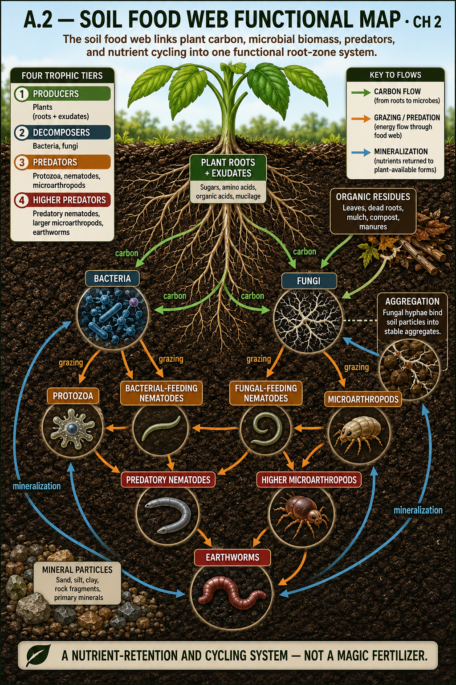
First Trophic Level (Producers): Plants are the primary producers. Through photosynthesis, they capture solar energy and convert it into carbon-based compounds, which enter the soil as root exudates and sloughed-off organic matter.
Second Trophic Level (Primary Consumers): Bacteria and fungi are the primary decomposers. They consume root exudates and break down complex organic matter (like dead leaves and roots) to build their own biomass. They are the nutrient retainers of the soil, holding nitrogen, phosphorus, and calcium within their cell walls [1].
Third Trophic Level (Secondary Consumers): Protozoa, nematodes, and microarthropods are the predators. They graze on the bacteria and fungi.
Higher-Level Predators: Larger nematodes, predatory mites, and earthworms consume the secondary consumers, further cycling nutrients and physically mixing the soil.
Carbon is the currency of the soil food web. Plants inject carbon into the soil, where it is rapidly consumed by bacteria and fungi. As these primary consumers grow and die, or are eaten by predators, the carbon is passed up the food chain. At each step, some carbon is respired back into the atmosphere as CO2, but a significant portion is stabilized in the soil as humus—complex, long-lasting organic molecules that give healthy soil its dark color and water-holding capacity [2].
Plants do not passively accept whatever microbes happen to be nearby; they actively farm them. By altering the chemical composition of their root exudates, plants can attract specific microbial species to address specific needs [3]. If a plant is deficient in iron, it will secrete exudates that stimulate the growth of siderophore-producing bacteria, which are adept at scavenging iron from the soil matrix [4]. If the plant is under attack by a foliar pest, it can alter its exudates to recruit beneficial microbes that trigger systemic immune responses [5]. The plant is the steering wheel, driving the composition and activity of the rhizosphere microbiome.
Recent research has revealed an even more intimate relationship between plants and microbes known as the "rhizophagy cycle" (root-eating cycle). In this process, plants actually internalize symbiotic bacteria and yeast into their root meristem cells [6].
Once inside the periplasmic space of the root cells, the microbes are subjected to reactive oxygen species (superoxide) produced by the plant. This oxidative stress degrades the microbial cell walls, causing them to leak nutrients (such as nitrogen and micronutrients) directly into the plant cell [7]. The surviving microbes are then expelled back into the soil through the tips of elongating root hairs, where they reform their cell walls, scavenge more nutrients from the soil, and repeat the cycle [8]. This cycle demonstrates that plants are not just passive recipients of microbial byproducts; they are active microbivores, farming and harvesting microbes for targeted nutrition.
Methodology Sidebar (Approaching the Food Web): These entries describe practitioner frameworks, not equivalent levels of peer-reviewed mechanism evidence.
- Soil Food Web (Ingham): A practitioner framework that uses compost, extracts, and microscopy to monitor major trophic groups and practitioner target ranges, not universal crop requirements.
- Coot's Mix: A practitioner/community protocol that focuses on habitat, mulch, and diverse organic inputs such as kelp, neem, and malted barley to encourage the indigenous food web to self-organize.
- Bionutrient (Kempf): A practitioner framework that views the food web as part of mineral delivery and plant sap management. Brix is treated here as a soluble-solids trend indicator, not a validated nutrient-density, pest-resistance, or disease-resistance diagnostic.
- KNF: A practitioner protocol focused on capturing and culturing indigenous microorganisms (IMO) from local environments; it should be presented as a documented method, not proof that a specific microbial mechanism will occur in every garden.
- Biodynamics: A practitioner/organizational doctrine that views the food web within a larger cosmic and energetic system; its preparations should be described as biodynamic practice, not as established soil-biology mechanism unless independently supported.
Key References for This Chapter: [1]: # "Bardgett, R. D. (2005). The Biology of Soil: A Community and Ecosystem Approach. Oxford University Press." [2]: # "Neumann, G. (2007). Root exudates and nutrient cycling. Nutrient cycling in terrestrial ecosystems, Springer." [3]: # "Badri, D. V., & Vivanco, J. M. (2009). Regulation and function of root exudates. Plant Cell Environ." [4]: # "Bar-Ness, E., et al. (1991). Siderophores of Pseudomonas putida as an iron source for dicot and monocot plants. Plant Soil." [5]: # "Rudrappa, T., et al. (2008). Root-secreted malic acid recruits beneficial soil bacteria. Plant Physiol." [6]: # "White, J. F., et al. (2018). Rhizophagy Cycle: An Oxidative Process in Plants for Nutrient Extraction from Symbiotic Microbes. Microorganisms." [7]: # "White, J. F., et al. (2012). A proposed mechanism for nitrogen acquisition by grass seedlings through oxidation of symbiotic bacteria. Symbiosis." [8]: # "Paungfoo-Lonhienne, C., et al. (2010). Turning the table: Plants consume microbes as a source of nutrients. PLoS ONE."
Bacteria are the most numerous and metabolically diverse organisms in the soil. In a single teaspoon of healthy living soil, there can be over a billion individual bacteria, representing tens of thousands of different species. They are the rapid-response team of the soil food web, the first to arrive and the fastest to multiply when simple food sources become available.
In the context of soil microscopy and functional ecology, bacteria are generally categorized by their shape (morphology):
Cocci: Spherical bacteria.
Bacilli: Rod-shaped bacteria.
Spirilla: Spiral-shaped bacteria.
While morphology alone does not dictate function, it is an illustrative field observation rather than a diagnostic test of bacterial function or soil health. A living soil may exhibit a diversity of shapes and sizes, but morphology by itself should not be used to infer species, strain, or function. Bacteria function primarily as decomposers. They produce powerful extracellular enzymes that break down simple, easy-to-digest organic compounds—such as the sugars and amino acids found in root exudates, green plant residues, and fresh manures [1]. As they consume these materials, they incorporate the carbon, nitrogen, and other minerals into their own cellular biomass, effectively preventing these nutrients from leaching out of the soil profile.
One of the most critical roles bacteria play is nitrogen fixation—the conversion of inert atmospheric nitrogen gas (N2) into plant-available forms like ammonia (NH3).
Symbiotic Nitrogen Fixers: The most famous are Rhizobium species, which form intimate, nodule-producing relationships with the roots of leguminous plants (peas, beans, clover) [2]. The plant provides the bacteria with carbohydrates and a low-oxygen environment within the nodule, and in return, the bacteria provide a steady stream of fixed nitrogen.
Free-Living Nitrogen Fixers: Bacteria such as Azotobacter and Azospirillum do not form nodules. Instead, they live freely in the rhizosphere or as endophytes within plant tissues, fixing nitrogen and releasing it into the soil solution or directly to the plant as they die and decompose [3].
Soils that have been heavily tilled, compacted, or kept under frequent soluble-input management often trend toward bacterial dominance. Tillage disrupts fungal hyphal networks, while readily available simple substrates and repeated disturbance can favor faster bacterial cycling relative to slower fungal development [4].
Bacterially dominant soils are characterized by a specific nitrogen profile: they tend to accumulate nitrogen in the form of nitrate (NO3-). This is a critical ecological trigger. High levels of nitrate, combined with a lack of fungal competition, signal to the soil seed bank that the environment is disturbed and needs rapid covering. While nitrate-responsive germination is well-documented for some weed species (like pigweed and lamb's quarters), other early-successional plants respond to disturbance via light wavelength shifts, soil temperature fluctuations, or compaction [5]. Bacterial dominance is one of several cues, not the singular cause, but if your garden is constantly battling aggressive annual weeds, it is a strong indicator that your soil is stuck in an early-successional state.
North Texas Note: Our native blackland clay is inherently prone to bacterial dominance. The high pH (7.8–8.2) favors bacterial proliferation over fungal growth, and the extreme summer heat bakes the top two inches of soil, rapidly oxidizing organic matter and favoring fast-cycling bacteria. To combat this and reduce the aggressive pressure of summer weeds like Johnsongrass and carelessweed, you must actively push the soil toward fungal balance. This means thick, persistent layers of coarse wood-chip mulch (which bacteria cannot easily digest) and strictly avoiding deep tillage that resets the fungal networks.
If bacteria are the rapid-response decomposers of simple sugars, fungi are the heavy-duty engineers and long-distance transport networks of the soil. Fungi are multicellular organisms that grow as long, microscopic threads called hyphae. These hyphae weave through the soil matrix, binding particles together and bridging gaps that bacteria cannot cross.
Saprophytic fungi are the primary decomposers of complex, recalcitrant organic matter. While bacteria thrive on green, sugary materials, saprophytic fungi possess the specialized enzymes (like cellulases and ligninases) required to break down tough, woody materials—cellulose, hemicellulose, and lignin [1]. When you apply wood chips, straw, or mature compost to your garden, it is the saprophytic fungi that slowly dismantle these complex carbon structures, releasing their locked-up nutrients over months or years. This slow, steady decomposition is the foundation of long-term soil fertility.
A single fungal hypha is microscopic, but a fungal network (mycelium) can span vast distances. These networks act as a secondary root system for the garden. Because hyphae are much finer than plant roots, they can penetrate microscopic soil pores to access water and dissolved minerals that are physically out of reach for the plant [2]. Furthermore, fungal networks can transport these resources across significant distances, moving water from a damp area of the bed to a dry area, or shuttling phosphorus from a mineral-rich zone directly to a plant root [3].
Perhaps the most critical physical function of soil fungi is the creation of soil structure. As fungal hyphae grow through the soil, they physically entangle clay, silt, and sand particles. More importantly, specific types of fungi (particularly arbuscular mycorrhizal fungi) exude a sticky, carbon-rich glycoprotein called glomalin [4].
Glomalin acts as a biological glue, binding these entangled soil particles together into larger, stable clumps known as macroaggregates. These macroaggregates are the holy grail of soil structure. They create pore spaces that allow water to infiltrate rapidly (preventing runoff) and air to penetrate deeply (preventing anaerobic conditions). A soil with strong, fungally-driven macroaggregation feels spongy, smells earthy, and resists compaction.
Fungal networks are highly sensitive to physical and chemical disturbance. Deep tillage physically slices the mycelial networks into pieces, destroying their transport capacity and exposing them to rapid bacterial degradation [5].
Chemically, high soluble phosphorus availability can reduce the plant's investment in mycorrhizal partners. When a plant has ready access to phosphorus, it may allocate less carbon to the fungal relationship and permit lower colonization or lower functional benefit. In that situation, the soil-structure and drought-resilience benefits associated with fungal networks may decline, but the response depends on crop, soil phosphorus status, fungal community, and fertilizer history [6].
Methodology Sidebar (Fungal Cultivation): These are practitioner approaches and should not be presented as identical evidence tiers.
- Soil Food Web: A practitioner framework that attempts to cultivate fungi through fungal-leaning compost recipes and microscopy-based monitoring of hyphae as a trend indicator.
- Coot's Mix: A practitioner/community protocol that relies on permanent mulch, low disturbance, and organic inputs such as kelp meal and malted barley to encourage fungal habitat.
- Bionutrient: A practitioner framework that focuses on plant sap, mineral balance, and photosynthetic performance as management targets; claims about Brix or sap quality should remain trend indicators, not validated pest- or disease-resistance standards.
- KNF: A practitioner protocol that captures and cultures indigenous microorganisms (IMO-1 through IMO-4) and applies them as a locally derived microbial input; it should not be treated as proof that specific fungi or functions will establish in every soil.
- Biodynamics: A practitioner/organizational doctrine in which preparations such as 500 (Horn Manure) are intended to support rooting and humus formation; that intention should not be stated as an independently proven fungal mechanism unless a separate source supports it.
If bacteria and fungi are the miners and hoarders of the soil, accumulating nutrients within their biomass, the predators are the miners' paymasters. Without predators, the soil food web would stall. Nutrients would remain locked inside bacterial and fungal cells, unavailable to the plant. It is the act of predation that completes the nutrient cycle.
Bacteria are incredibly nutrient-dense. They have a very low carbon-to-nitrogen (C:N) ratio, typically around 5:1. This means for every five carbon atoms, they hold one nitrogen atom. Protozoa and nematodes, which hunt and consume bacteria, have a much higher C:N ratio, often around 30:1 [1].
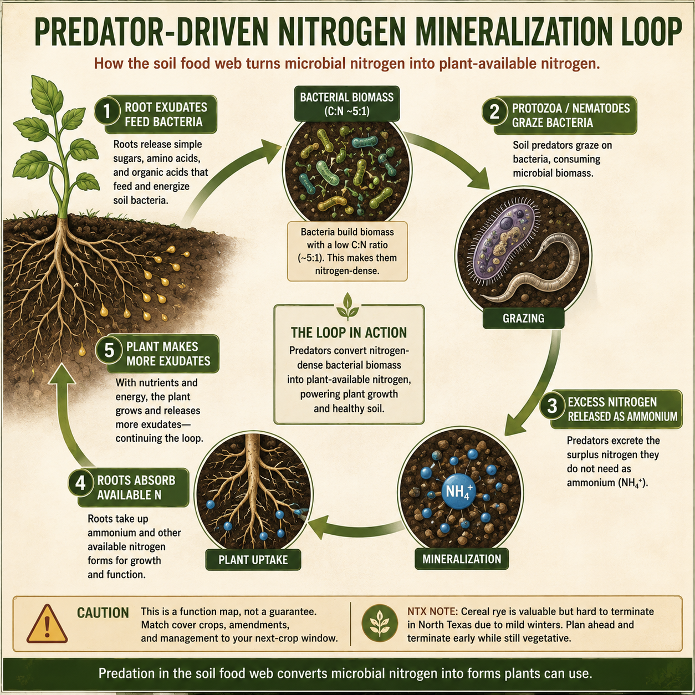
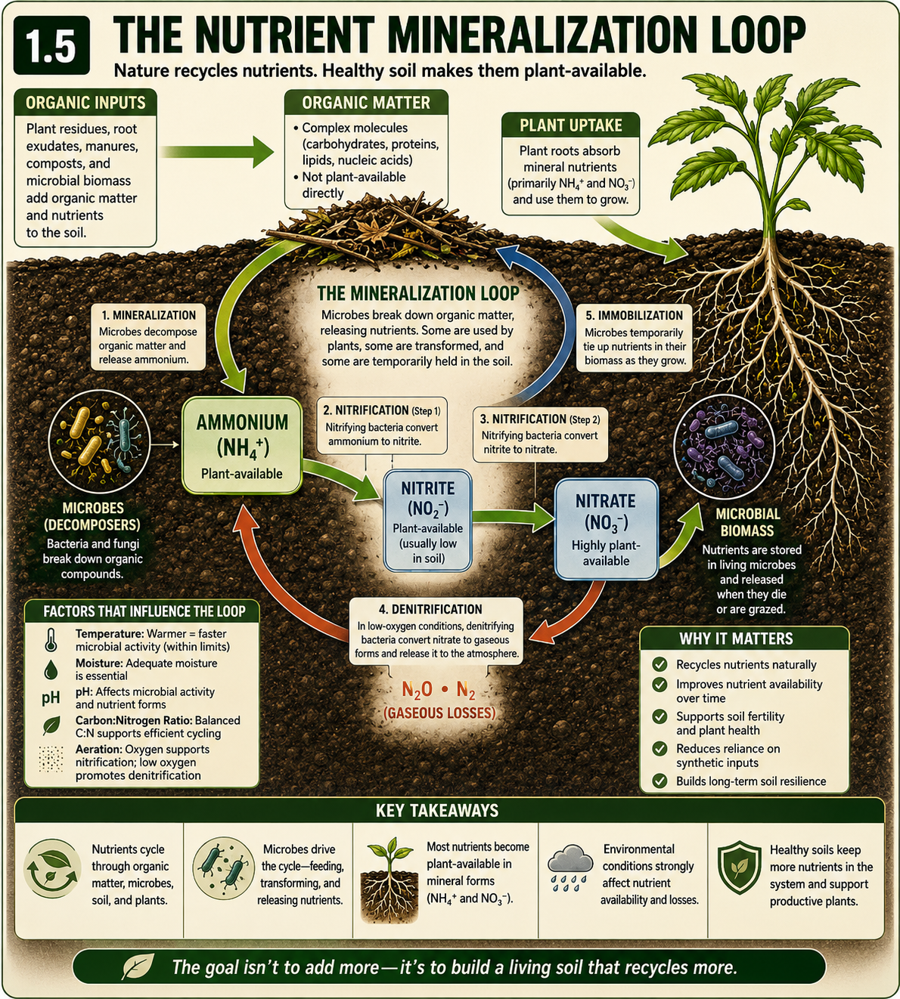
When a protozoan eats six bacteria to get the 30 carbon atoms it needs to survive, it also ingests six nitrogen atoms. However, the protozoan only needs one nitrogen atom to balance its 30 carbons. The remaining five nitrogen atoms are excess baggage. The protozoan excretes this excess nitrogen into the soil solution in the form of ammonium (NH4+)—a form of nitrogen that is immediately available for plant roots to absorb [2]. It is important to note that protozoan C:N ratios vary by species (from 10:1 to 30:1), and assimilation efficiency is imperfect; this framing is a simplification of a more nuanced process, but the fundamental principle of predator-driven mineralization holds true. This process is one major mechanism by which organic nitrogen is made available to plants in a living soil system.
Protozoa are single-celled, highly mobile predators that graze primarily on bacteria. They are categorized by how they move:
Flagellates: Move using whip-like tails (flagella). They are the most common protozoa in healthy, aerobic soils and are highly efficient bacterial grazers.
Amoebae: Move by extending pseudopods (false feet). They are also indicators of healthy, aerobic conditions and are particularly adept at hunting bacteria within small soil pores.
Ciliates: Move using hair-like projections (cilia). While some ciliates are present in healthy soil, a sudden bloom or dominance of ciliates is a strong indicator that the soil has gone anaerobic (lacking oxygen), often due to overwatering or compaction [3].
When most growers hear the word "nematode," they immediately think of the destructive root-knot nematode. However, the vast majority of soil nematodes are highly beneficial. Nematodes are microscopic, unsegmented worms that occupy several distinct ecological niches based on their mouthparts:
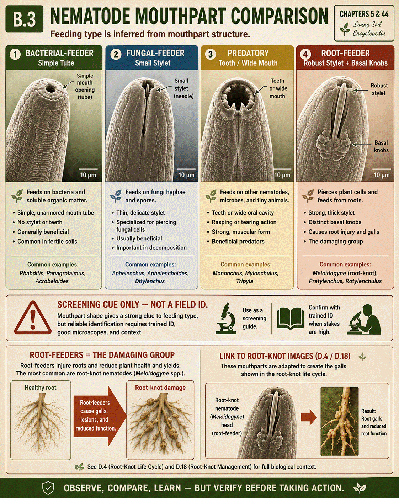
Bacterial-Feeders: Possess a simple, tube-like mouth to suck up bacteria. They are prolific mineralizers of nitrogen.
Fungal-Feeders: Possess a small stylet (spear) used to puncture fungal hyphae and suck out the internal contents.
Predatory Nematodes: Possess a large, tooth-like structure used to hunt and consume other nematodes, including the destructive root-feeding varieties. They are the apex predators of the micro-world.
Root-Feeders: The pests. They possess a robust stylet used to pierce plant roots, causing damage and creating entry points for disease [4]. A healthy, diverse soil food web may help suppress root-feeding nematodes through competition, predation by predatory nematodes, and nematode-trapping fungi, but it does not eliminate the need for crop rotation, resistant varieties where available, sanitation, and monitoring.
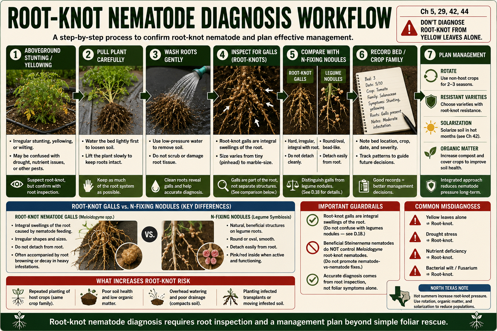
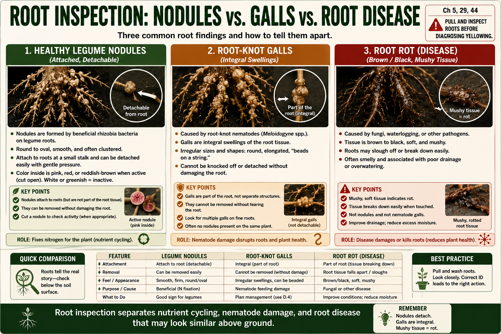
Microarthropods, such as springtails and oribatid mites, are the visible giants of the micro-world. They function primarily as shredders. They chew on dead plant material and fungal hyphae, breaking them into smaller pieces [5]. This shredding action exponentially increases the surface area of the organic matter, making it much easier for bacteria and fungi to colonize and decompose the material. They are the crucial first step in the physical breakdown of organic residues.
North Texas Note: In our heavy clay soils, the transition from wet spring to dry summer often causes the soil to shrink and crack deeply. These deep fissures expose the delicate protozoa and nematodes to rapid desiccation and lethal UV radiation. To maintain the predator populations necessary for continuous nitrogen mineralization through the summer, you must maintain a minimum of 3 inches of mulch. This mulch layer acts as a thermal and moisture shield, allowing the protozoa and nematodes to retreat to the soil surface interface where humidity remains stable, rather than dying off completely during a July drought.
Of all the relationships in the soil food web, the symbiosis between plants and mycorrhizal fungi is perhaps the most profound. The term "mycorrhiza" literally translates to "fungus-root." This is not merely an association; it is a physical and physiological integration of two distinct kingdoms of life, an evolutionary partnership that allowed plants to colonize dry land over 400 million years ago.
Mycorrhizal fungi are broadly divided into two main categories based on how they interact with the plant root:
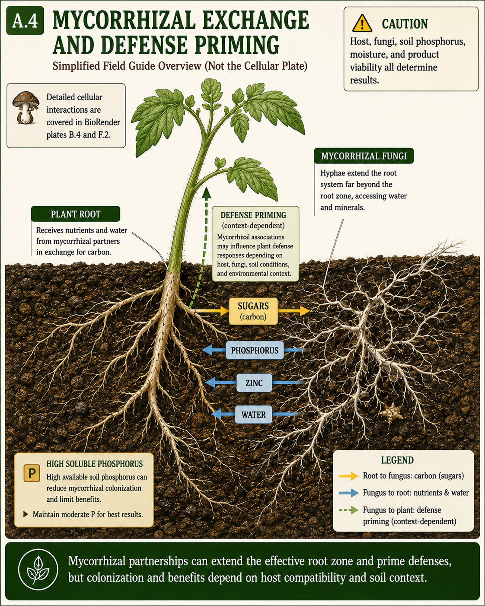
Endomycorrhizae (Arbuscular Mycorrhizal Fungi - AMF): These fungi physically penetrate the cell walls of the plant root cortex. Once inside, they form highly branched, tree-like structures called arbuscules. These arbuscules are the sites of nutrient exchange, where the plant delivers carbon (sugars) to the fungus, and the fungus delivers water and minerals to the plant. AMF associate with the vast majority of agricultural crops, including vegetables, herbs, and fruit trees [1].
Ectomycorrhizae: These fungi do not penetrate the root cells. Instead, they form a dense sheath (a "Hartig net") around the exterior of the root tip and grow between the root cells. Ectomycorrhizae associate primarily with woody perennials, particularly conifers (pines, firs) and certain hardwood trees (oaks, pecans) [2].
The primary nutritional benefit of the mycorrhizal symbiosis is the enhanced uptake of immobile nutrients, specifically phosphorus and zinc. In many soils, phosphorus is abundant but chemically locked up in insoluble calcium or iron phosphates. Plant roots can only absorb phosphorus from a tiny zone (1-2 millimeters) immediately surrounding the root hair. Once that zone is depleted, the plant starves for phosphorus, even if the bulk soil is full of it.
Mycorrhizal hyphae extend far beyond this depletion zone, exploring a volume of soil hundreds of times larger than the root system alone [3]. The fungi secrete powerful organic acids and phosphatase enzymes that dissolve these bound minerals, absorb the freed phosphorus and zinc, and transport them rapidly back to the host plant via the hyphal network [4].
The benefits of mycorrhizal colonization can extend beyond nutrition; in some host-fungus-pathogen systems, colonization changes plant defense signaling. When a mycorrhizal fungus first penetrates a plant root, the plant initially responds as though it is encountering a potential invader. The plant mounts a localized defense response, and compatible fungi use signaling pathways that allow colonization to proceed [5].
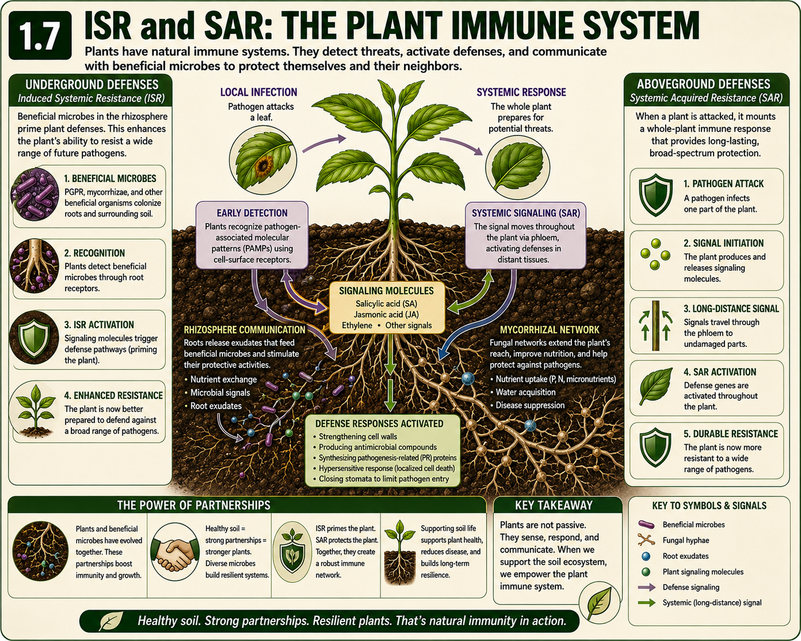
This priming is sometimes compared to a vaccine, but the analogy should be kept limited. In supported systems, a primed plant may respond more quickly or strongly to later pathogen or pest pressure. This heightened state of readiness is part of Induced Systemic Resistance (ISR) [6].
Furthermore, if a pathogen attacks a leaf, plants can send chemical signals through their own tissues and into the root zone. Some studies link root-associated fungi and shared networks to defense responses in neighboring plants, but this should be framed as context-dependent communication, not a guaranteed community immune system. These responses are related to Systemic Acquired Resistance (SAR) and other plant-defense signaling pathways [7].
Many growers purchase expensive mycorrhizal inoculants only to see no benefit. Common reasons for failure include:
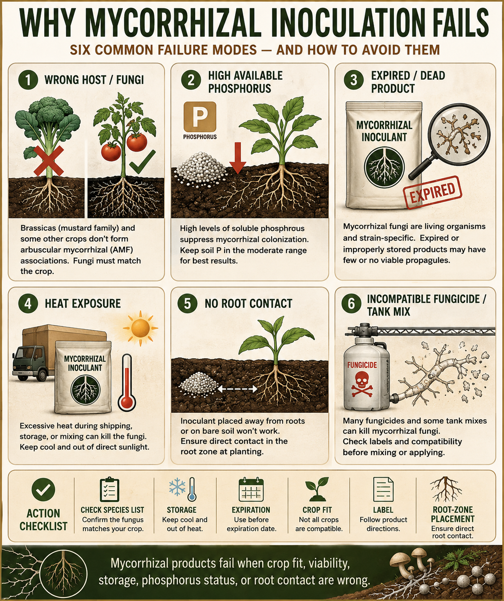
Wrong Fungi for the Host: Applying ectomycorrhizae to a tomato plant (which requires endomycorrhizae) will not produce the intended AMF colonization. Always check the species list, crop suitability, and application instructions on the product label.
High Soil Phosphorus: As discussed in Chapter 4, if the soil already has high plant-available phosphorus (from soluble fertilizers or excessive manure), mycorrhizal colonization or benefit may be reduced.
Dead Inoculant: Mycorrhizal spores are living organisms. If the product was stored in a hot warehouse, left in the sun, held past expiration, or exposed to incompatible tank mixes, viability may be reduced.
Lack of Root Contact: Mycorrhizal spores must come into direct physical contact with a growing root tip to initiate colonization. Broadcasting spores on the soil surface is usually inefficient; apply them to seed, transplant holes, or root balls according to the product label.
Safety Box — Dry microbial inoculants: Many mycorrhizal and microbial products are dry powders or granules. Avoid inhaling dust, wear gloves and a dust mask when handling powders, keep containers closed between uses, and follow the product label for storage, expiration, crop compatibility, and application method.
Methodology Sidebar (Mycorrhizal Inoculation): These are practitioner strategies and should be label- and context-dependent when commercial products are involved.
- Soil Food Web: A practitioner framework that generally emphasizes cover cropping, biologically diverse compost, and compost extracts to encourage indigenous fungal populations rather than relying only on commercial spore products.
- Coot's Mix: A practitioner/community protocol that often uses commercial endomycorrhizal inoculants at transplant. Follow the product label for species, crop fit, storage, expiration, and placement; inoculation can improve the chance of early contact but does not guarantee colonization.
- Bionutrient: A Kempf/Bionutrient practitioner framework that treats mycorrhizal colonization as part of a staged plant-health strategy. This should be labeled as practitioner doctrine rather than peer-reviewed consensus on a universal lipid-synthesis phase.
- KNF: A practitioner protocol that uses IMO-3 and IMO-4 preparations as locally collected microbial inputs. These should not be described as verified delivery of specific mycorrhizal species unless confirmed by testing.
- Biodynamics: A practitioner/organizational doctrine that relies on whole-farm soil vitality and preparations rather than isolated commercial spores; this should be framed as biodynamic practice, not as a proven inoculation mechanism.
Key References for This Chapter: [1]: # "Jacott, C. N., et al. (2017). Trade-offs in arbuscular mycorrhizal symbiosis: disease resistance, growth responses and perspectives for crop breeding. Agronomy." [2]: # "Vishwanathan, K., et al. (2020). Ectomycorrhizal fungi induce systemic resistance against insects on a nonmycorrhizal plant in a CERK1-dependent manner. New Phytologist." [3]: # "Roy-Bolduc, A., & Hijri, M. (2011). The use of mycorrhizae to enhance phosphorus uptake: a way out the phosphorus crisis. J. Biofertil. Biopestici." [4]: # "Nadeem, M., et al. (2022). Understanding the adaptive mechanisms of plants to improve phosphorus-use efficiency in the era of climate change. Frontiers in Plant Science. https://doi.org/10.3389/fpls.2022.804058" [5]: # "Cameron, D. D., et al. (2013). Mycorrhiza-induced resistance: more than the sum of its parts? Trends in Plant Science." [6]: # "Pieterse, C. M. J., et al. (2014). Induced systemic resistance by beneficial microbes. Annual Review of Phytopathology." [7]: # "Gozzo, F., & Faoro, F. (2013). Systemic acquired resistance (50 years after discovery): moving from the lab to the field. Journal of agricultural and food chemistry."
The soil food web is not static; it changes over time through ecological succession. As soil biology changes, the types of plants that thrive in that soil may also change. In Soil Food Web-style practitioner frameworks, one way to describe this successional timeline is the ratio of fungal biomass to bacterial biomass (the F:B ratio). This ratio should be presented as a practitioner trend indicator and target, not a universal crop requirement or stand-alone diagnostic.
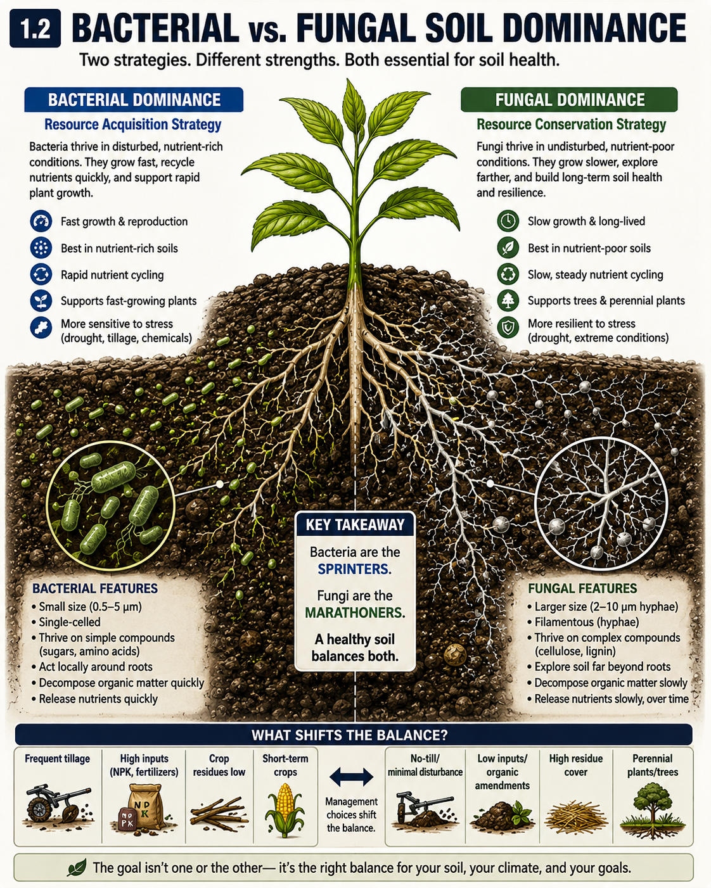
Imagine a landscape completely devoid of life—a bare rock face after a volcanic eruption or a severely degraded, over-tilled agricultural field.
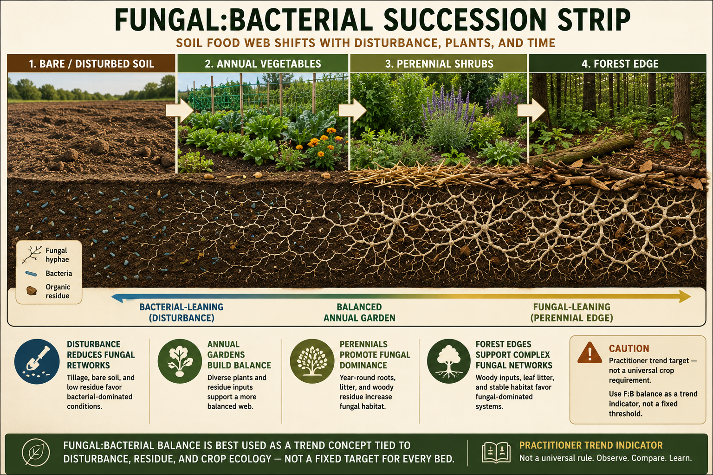
Early Succession (Bacterial-Leaning): The first organisms to colonize bare rock or highly disturbed soil include photosynthetic bacteria (cyanobacteria) and fast-growing decomposer bacteria. Soil Food Web-style materials often describe this stage as strongly bacterial, but the exact F:B value is a practitioner estimate rather than a universal threshold. Many early-successional pioneer plants perform well in these disturbed, nitrate-rich environments.
Mid-Succession (More Balanced F:B): As pioneer plants die and add complex carbon to the soil, saprophytic fungi begin to establish. Practitioner frameworks often describe balanced soils near 1:1 F:B as suitable for many annual vegetables and row crops, but local soil type, crop, moisture, management, and lab method matter.
Late Succession (Fungal-Leaning): If the soil remains undisturbed, woody shrubs and eventually trees begin to dominate. They drop larger amounts of lignin-rich carbon (leaves, twigs, branches) that favors fungal growth. Very high F:B numbers sometimes cited for old-growth systems should be treated as broad successional heuristics, not fixed targets for every orchard, forest edge, or garden bed [1].
One useful practitioner heuristic is to match management style to the crop's general ecological tendency. These F:B ranges are practitioner targets, not universal crop requirements; crop performance still depends on fertility, water, compaction, disease pressure, pH, climate, cultivar, and management.
Brassicas (Bacterial-Leaning Preference): Plants in the mustard family (cabbage, broccoli, kale, radishes) are often managed as early-successional crops. Soil Food Web-style targets may place them in a bacterially leaning range, and they generally do not form associations with arbuscular mycorrhizal fungi.
Annual Vegetables (Balanced Preference): Many common garden vegetables (tomatoes, peppers, squash, corn) are often managed toward a more balanced bacterial-fungal system. This reflects a practitioner target for mixed nutrient cycling rather than a fixed biological requirement.
Berries and Shrubs (Fungal-Leaning Preference): Perennial fruiting shrubs (blackberries, raspberries, blueberries) are often managed as edge-of-forest or perennial systems with more fungal habitat. The goal is to encourage fungal-leaning soil conditions, not to chase a universal numeric threshold.
Fruit and Nut Trees (Highly Fungal-Leaning Preference): Orchard trees (apples, peaches, pecans) are often managed with perennial mulch, low disturbance, and woody organic matter to support fungal-leaning biology. Numeric F:B ranges should be treated as Soil Food Web practitioner targets rather than universal crop requirements [2].
You can encourage bacterial-leaning or fungal-leaning shifts by choosing inputs that favor different decomposer communities.
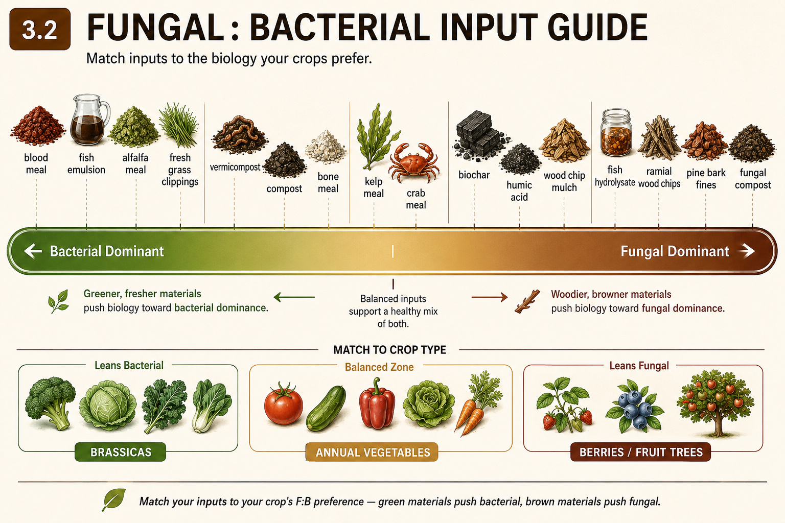
To Push Bacterial-Leaning: Add "green" materials with a low C:N ratio. Fresh grass clippings, alfalfa meal, commercial fish emulsion used according to the product label, and green cover crops can encourage faster bacterial cycling.
To Push Fungal-Leaning: Add "brown" materials with a high C:N ratio. Wood chips, straw, dry autumn leaves, humic products used according to the product label, and kelp meal can provide complex carbon and habitat that favor fungal development.
F:B ratio can be estimated through direct microscopy or measured through lab biomass methods, but field microscopy should be treated as trend monitoring rather than definitive diagnosis. Observational signs can also help track successional shifts. If a bed previously dominated by pigweed begins to support clover, native grasses, or other less-disturbance-adapted plants after a year of heavy wood-chip mulching, that suggests the soil environment may be shifting toward more perennial, fungal-leaning conditions; it does not prove a specific F:B ratio.
North Texas Note: When establishing a new fruit tree guild or blackberry patch in native alkaline clay, you are often working against bacterial-leaning, disturbance-adapted conditions. Rather than assuming a shrub will thrive in bare clay, build perennial habitat first. Before planting, incorporate mature compost where appropriate and maintain a permanent, 4-to-6-inch layer of ramial wood chips (chipped branches with leaves attached). Some Soil Food Web and KNF practitioners inoculate wood chips with fungal compost extract or IMO-3, respectively, as a practitioner strategy intended to encourage fungal establishment; it should not be treated as a guaranteed mechanism or substitute for mulch, irrigation, drainage, and soil testing.
Before diving into the specific, prescriptive methodologies of soil management (like the Soil Food Web or Bionutrient farming), it is critical to establish the broader philosophical and ecological framework that underpins them all. This framework is a synthesis of Regenerative Agriculture and Permaculture Design. These are not merely sets of techniques; they are lenses through which we view the landscape, shifting our role from extractors to stewards.
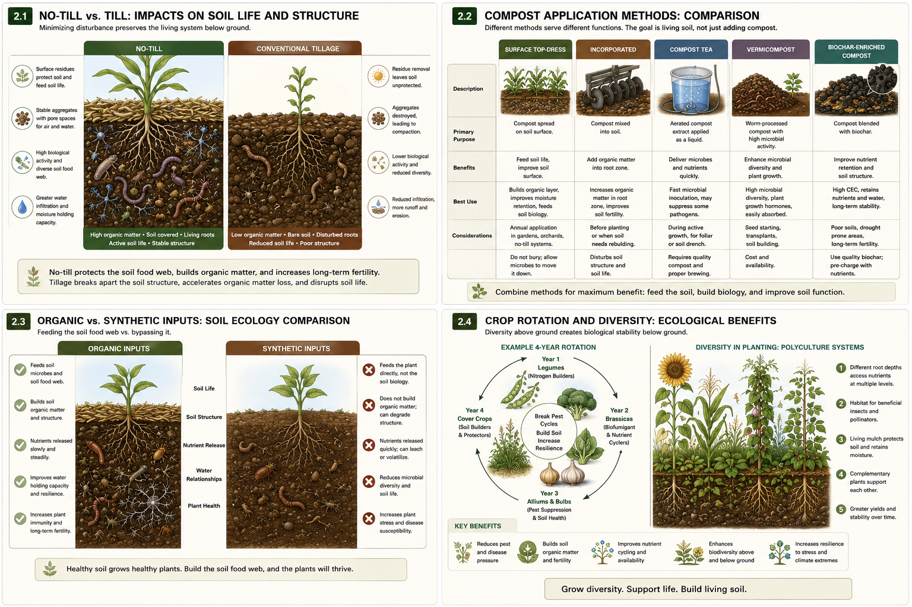
Regenerative agriculture, as popularized by pioneers like Gabe Brown, is commonly organized around five broad soil-health principles. These principles can be adapted across scales, but their application depends on climate, soil type, crop, water access, and management context [1].
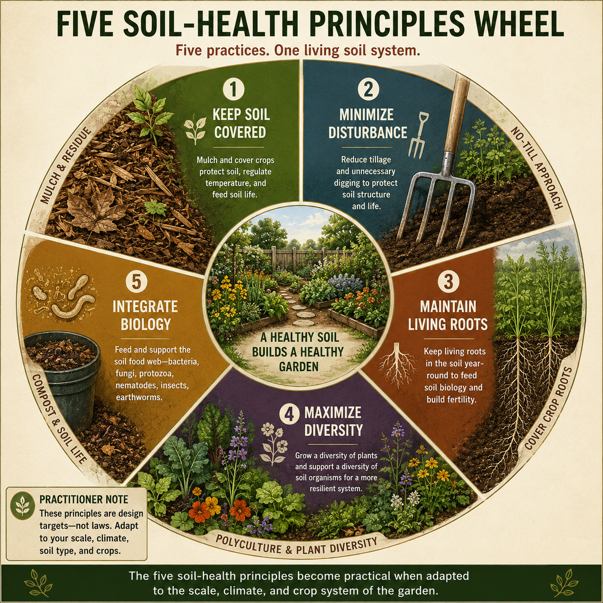
If regenerative agriculture provides the principles for the soil, Permaculture (a portmanteau of "permanent agriculture") provides a practitioner design framework for the entire system. Developed by Bill Mollison and David Holmgren in the 1970s, permaculture is based on observing and mimicking patterns and relationships found in natural ecosystems [8].
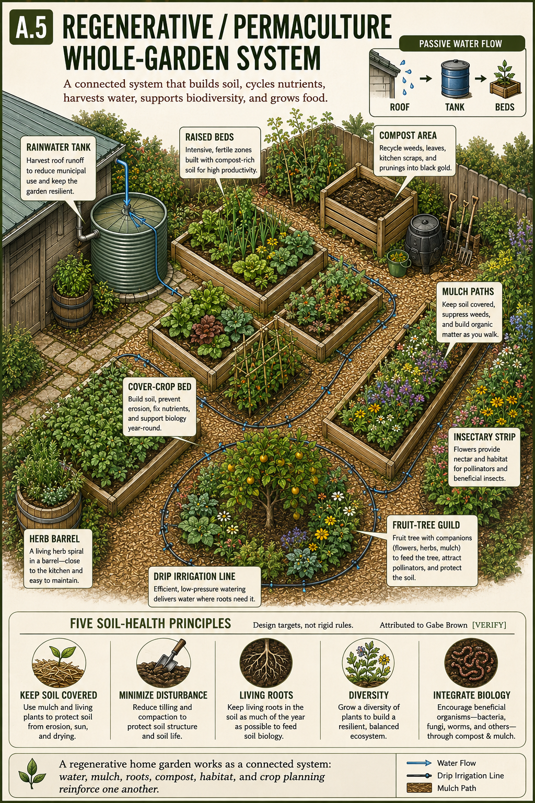
A key application of these principles is the deliberate shift away from a total reliance on annual vegetables toward the integration of perennial crops (fruit trees, berry bushes, perennial herbs, and perennial vegetables like asparagus and artichokes). Annual vegetable systems often involve repeated planting and disturbance, keeping the ecosystem closer to an early-successional state [13]. Perennials, once established, can reduce routine soil disturbance, build deeper and more persistent root systems, and support more fungal-associated soil conditions over time, although the exact fungal:bacterial balance remains site-specific rather than universal [14].
North Texas Note: In our climate, the permaculture principle of "catching and storing energy" is primarily about water management. Our rainfall often comes in massive, destructive deluges followed by months of drought. Passive hydration earthworks (like swales or sunken hugelkultur beds) can be useful for capturing that deluge and sinking it deeper into the clay profile when designed safely for the site. Furthermore, the "edge effect" can be used to create microclimates; planting a diverse, multi-story hedgerow on the western edge of your garden may provide useful afternoon shade, reducing heat stress on delicate annuals during the brutal August sun.
Key References for This Chapter: [1] Brown, G. (2018). Dirt to Soil: One Family's Journey into Regenerative Agriculture. Chelsea Green Publishing. [2] Six, J., et al. (2004). A history of research on the link between (micro)aggregates, soil biota, and soil organic matter dynamics. Soil and Tillage Research. [3] Bardgett, R. D. (2005). The Biology of Soil: A Community and Ecosystem Approach. Oxford University Press. [4] Montgomery, D. R. (2007). Dirt: The erosion of civilizations. University of California Press. [5] Kuzyakov, Y., & Domanski, G. (2000). Carbon input by plants into the soil. Review. Journal of Plant Nutrition and Soil Science. [6] Hooper, D. U., et al. (2005). Effects of biodiversity on ecosystem functioning: a consensus of current knowledge. Ecological monographs. [7] Brown, G. (2018). Dirt to Soil: One Family's Journey into Regenerative Agriculture. Chelsea Green Publishing. [8] Mollison, B. (1988). Permaculture: A Designer's Manual. Tagari Publications. [Practitioner/design framework] [9] Holmgren, D. (2002). Permaculture: Principles and Pathways Beyond Sustainability. Holmgren Design Services. [Practitioner/design framework] [10] Mollison, B. (1988). Permaculture: A Designer's Manual. Tagari Publications. [Practitioner/design framework] [11] Holmgren, D. (2002). Permaculture: Principles and Pathways Beyond Sustainability. Holmgren Design Services. [Practitioner/design framework] [12] Mollison, B. (1988). Permaculture: A Designer's Manual. Tagari Publications. [Practitioner/design framework] [13] Wardle, D. A. (2002). Communities and Ecosystems: Linking the Aboveground and Belowground Components. Princeton University Press. [14] Blagodatskaya, E. V., & Anderson, T.-H. (1998). Interactive effects of pH and substrate quality on the fungal-to-bacterial ratio and qCO2 of microbial communities in forest soils. Soil Biology and Biochemistry. https://doi.org/10.1016/S0038-0717(98)00050-9
The Soil Food Web methodology, pioneered by Dr. Elaine Ingham, is a practitioner framework for living soil management that emphasizes biological observation, compost quality, and food-web balance. It should be presented as a methodology and diagnostic approach, not as a universally validated prescription that can guarantee specific agricultural outcomes.
The foundational premise of the Soil Food Web framework is that soil biology strongly influences whether nutrients are retained, mineralized, solubilized, and delivered to plants [1]. In this framework, many soils are treated as having substantial mineral reserves, while biological activity, root access, pH, moisture, and soil chemistry determine how much of that reserve becomes plant-available [2]. This is a useful management lens, but it should not be stated as a guarantee that plants will never lack nutrients regardless of the chemical assay.
Therefore, the Soil Food Web methodology shifts the grower's focus from input-only fertility toward biological inoculation, habitat management, and monitoring. The goal is to encourage a robust and diverse community of bacteria, fungi, protozoa, and nematodes that is reasonably aligned with the crop, soil, and successional context [3].
The primary vehicle for biological inoculation in this methodology is thermal (hot) compost. Compared with poorly aerated passive composting, thermal composting is a more actively managed aerobic process intended to cultivate beneficial microbial populations while reducing pathogen and weed-seed risk when time, temperature, moisture, and turning are adequate [4].
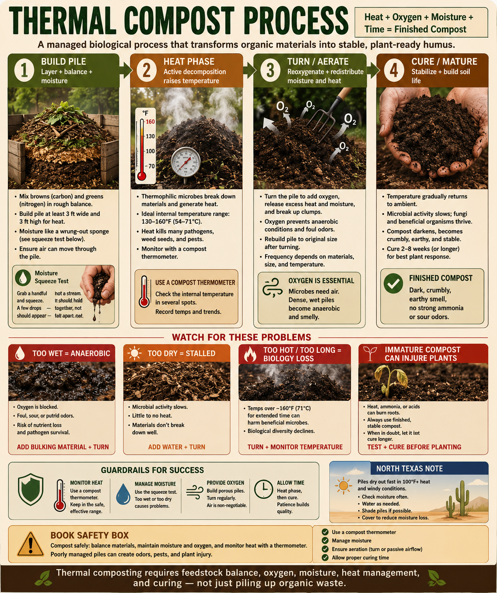
The process uses balanced ratios of high-nitrogen materials (greens), carbohydrates, and complex woody carbons (browns). Practitioners commonly manage turning around thermophilic temperature ranges, often cited around 131°F to 165°F, to expose material to heat while avoiding prolonged overheating [5]. In this methodology, the resulting compost is viewed less as a fertilizer and more as a biological inoculant, although nutrient content still varies by feedstock and process.
Safety Box: Thermal Compost Handling Hot compost can contain pathogens if the process is incomplete or uneven. Use a compost thermometer, manage moisture and aeration, avoid handling steaming or manure-rich material with bare hands, wash hands and tools after use, and do not assume manure-derived compost is food-safe unless it has met appropriate time-temperature-turning criteria.
To apply this biology over large areas or directly to the plant canopy, the Soil Food Web utilizes compost teas and extracts.
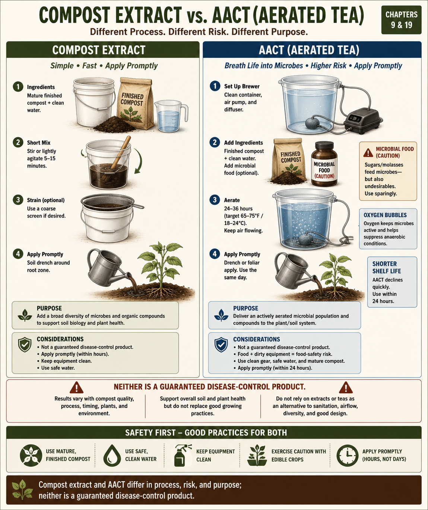
Safety Box: Compost Tea and Edible Crops Compost teas and extracts are not sterile products. If sprayed on edible crops—especially leafy greens, herbs, low-growing fruit, or any crop close to harvest—use mature, well-managed compost, clean water, clean equipment, and conservative timing. Sugars such as molasses can also multiply unwanted organisms if the compost or brewer is contaminated. Do not use compost tea as a guaranteed disease-control spray, and do not apply manure-derived or questionable brews directly to harvestable plant parts.
What separates the Soil Food Web from many other methodologies is its reliance on direct microscopy as a practitioner monitoring tool. Ingham argues that you cannot manage what you cannot measure. Alongside chemical soil tests and field observations, practitioners use a shadow-casting or phase-contrast microscope to estimate bacterial abundance, assess fungal hyphae, and observe protozoa and nematodes present in a soil or compost sample [8].
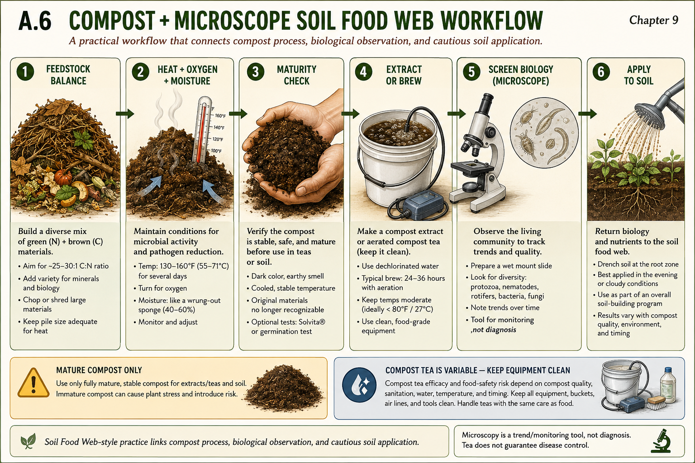
This allows the grower to estimate fungal-to-bacterial (F:B) trends and observe whether major trophic groups appear present or absent. These F:B numbers should be treated as Soil Food Web practitioner targets, not universal crop requirements or stand-alone diagnoses. If microscopy suggests low fungal biomass, the grower may adjust compost feedstocks toward more woody materials. If protozoa appear limited, they may adjust compost or extract practices to encourage protozoan activity [9].
North Texas Note: In our climate, maintaining the moisture levels required for proper thermal composting during the summer is difficult; piles can dry out rapidly and slow down. Conversely, during our wet spring, piles can become waterlogged and anaerobic. If you are practicing the Soil Food Web methodology in North Texas, cover compost piles to regulate moisture and be prepared to water them during the summer months. Furthermore, our high-pH soils and hot summers can make fungal cultivation more difficult, so compost recipes often need to lean toward woody, high-carbon materials when the goal is to support more fungal biomass.
Key References for This Chapter: [1] Ingham, E. R. (1999). The soil food web. In Soil Biology Primer. USDA Natural Resources Conservation Service. [2] Ingham, E. R. (2000). The compost tea brewing manual. Soil Foodweb Inc. [Practitioner manual] [3] Bardgett, R. D. (2005). The Biology of Soil: A Community and Ecosystem Approach. Oxford University Press. [4] Epstein, E. (1997). The science of composting. CRC press. [5] Ryckeboer, J., et al. (2003). A survey of bacteria and fungi occurring during composting and self-heating processes. Annals of microbiology. [6] Ingham, E. R. (2005). The compost tea brewing manual. Soil Foodweb Inc. [Practitioner manual] [7] Scheuerell, S., & Mahaffee, W. (2002). Compost tea: principles and prospects for plant disease control. Compost science & utilization. [8] Ingham, E. R. (1999). The soil food web. In Soil Biology Primer. USDA Natural Resources Conservation Service. [9] Bonkowski, M. (2004). Protozoa and plant growth: the microbial loop in soil revisited. New Phytologist. [10] Clarholm, M. (1985). Interactions of bacteria, protozoa and plants leading to mineralization of soil nitrogen. Soil Biology and Biochemistry. [11] Ingham, E. R. (1999). The soil food web. In Soil Biology Primer. USDA Natural Resources Conservation Service.
While the Soil Food Web focuses on biological inoculation and microscopic monitoring, the "Coot's Mix" methodology—popularized by the online forum presence known as Clackamas Coot (Jim Bennett)—takes a different approach. It is a practitioner/community protocol rather than a formally published agronomic standard, focusing on creating a stable, permanent habitat in which the soil food web can self-organize.
The Coot's Mix methodology is built on the practitioner premise that the grower's job is to provide a durable habitat, diverse organic inputs, and minimal disturbance, then let soil biology organize itself. It rejects the need for constant biological micromanagement, complex compost tea brewing, or microscopic analysis. Instead, it relies on a specific living-soil mix intended for repeated use with minimal disturbance [1].
The core belief is that if you provide a diverse array of slow-release organic inputs and maintain a stable, undisturbed environment, indigenous and compost-derived soil biology can populate the soil and support nutrient cycling over time [2]. The method should not be framed as guaranteeing a perfect F:B ratio or perfect nutrient cycling. Because Coot's Mix is a forum-derived practitioner/community protocol, sources in this chapter support related soil biology and amendment concepts; they are not formal publication of the recipe itself.
The foundation of the methodology is the famous "Coot's Mix" base recipe, which is elegantly simple:
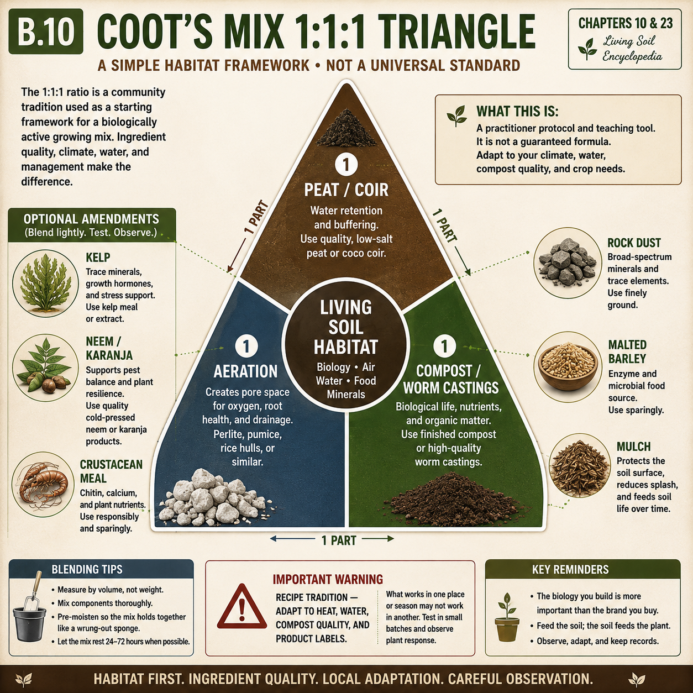
To this base, the practitioner protocol adds a specific suite of dry amendments. These amendments are used for broad-spectrum nutrition and for proposed biological stimulation or pest-suppression effects, though those effects should be treated as context-dependent rather than guaranteed [4].
Two other elements are central to the Coot's Mix philosophy:
Safety Box: Dry Amendments and Dust Kelp meal, neem or karanja meal, crustacean meal, malted barley flour, mineral powders, humics, and similar dry amendments can create inhalable dust. Mix slowly, avoid windy conditions, wear a dust mask or respirator when handling powders, and keep materials away from children, pets, eyes, and open wounds. Follow any product label for handling, storage, and application.
North Texas Note: The Coot's Mix was originally designed for indoor, containerized growing in the Pacific Northwest. When adapting this mix for outdoor raised beds in North Texas, the primary challenge is moisture retention in the peat moss during our 100°F+ summers. If peat moss dries out completely, it becomes hydrophobic (water-repellent). Maintain a thick mulch layer, such as straw or wood chips, over the mix to reduce surface baking. Additionally, sourcing quality pumice locally in Texas can be difficult and expensive; expanded shale is a viable, locally available alternative for the aeration component.
Key References for This Chapter: [1] Lowenfels, J. (2010). Teaming with microbes: the organic gardener's guide to the soil food web. Timber press. [2] Lowenfels, J. (2010). Teaming with microbes: the organic gardener's guide to the soil food web. Timber press. [3] Lowenfels, J. (2010). Teaming with microbes: the organic gardener's guide to the soil food web. Timber press. [4] Lowenfels, J. (2013). Teaming with nutrients: the organic gardener's guide to optimizing plant nutrition. Timber Press. [5] Craigie, J. S. (2011). Seaweed extract stimuli in plant science and agriculture. Journal of applied phycology. [6] Schmutterer, H. (1990). Properties and potential of natural pesticides from the neem tree, Azadirachta indica. Annual review of entomology. [7] Sharp, R. G. (2013). A review of the applications of chitin and its derivatives in agriculture to modify plant-microbe interactions and improve crop yields. Agronomy. [8] Lowenfels, J. (2013). Teaming with nutrients: the organic gardener's guide to optimizing plant nutrition. Timber Press. [9] Edwards, C. A., et al. (2010). Vermiculture technology: earthworms, organic wastes, and environmental management. CRC press. [10] Lowenfels, J. (2010). Teaming with microbes: the organic gardener's guide to the soil food web. Timber press. [11] Lowenfels, J. (2013). Teaming with nutrients: the organic gardener's guide to optimizing plant nutrition. Timber Press.
While the Soil Food Web focuses on biology and Coot's Mix focuses on habitat, the Bionutrient methodology focuses on plant physiology, sap chemistry, and crop-quality monitoring. Championed by agronomist John Kempf (Advancing Eco Agriculture) and Dan Kittredge (Bionutrient Food Association), this is a practitioner framework that views the soil food web as one delivery pathway for minerals associated with photosynthetic efficiency and plant defense status.
The foundational concept of the Bionutrient approach is Kempf's "Plant Health Pyramid." This should be labeled as a Kempf/Bionutrient practitioner framework, not a peer-reviewed universal law. In that framework, plant health is described through four phases of physiological development and defense capacity [1]:
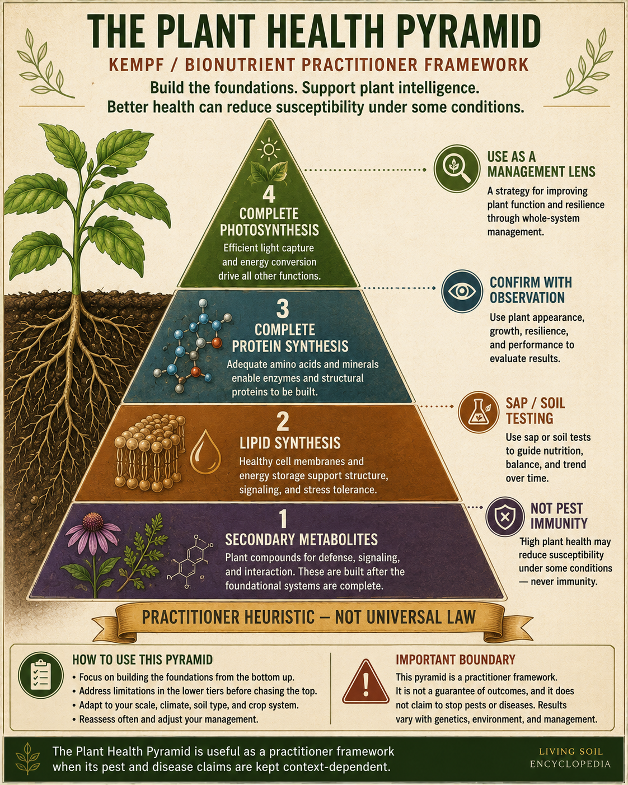
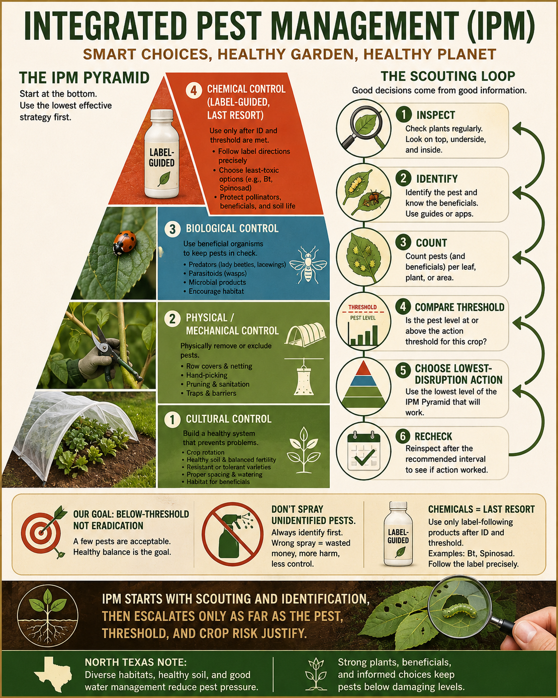
To navigate this pyramid, the Bionutrient methodology relies heavily on Plant Sap Analysis, building upon the foundational agronomic work of Dr. Carey Reams and Dr. William Albrecht [5]. Traditional soil tests only show what is in the soil, not what the plant is actually absorbing. Tissue tests show what the plant has absorbed over its lifetime, but not what it needs right now.
Sap analysis, however, is used by practitioners as a current-status snapshot of plant nutrition. By extracting and analyzing sap from both old and new leaves, growers can compare nutrient movement and possible imbalances [6]. This can support timely nutritional decisions, but interpretation requires crop context, growth stage, sampling quality, and agronomic expertise.
Kempf argues that many agricultural soils are not just biologically degraded, but may also be depleted or functionally limited in critical trace minerals (like cobalt, molybdenum, and selenium) due to decades of extraction and soil-chemistry antagonisms [7]. The Bionutrient approach often utilizes targeted foliar sprays of specific, chelated trace minerals to address suspected deficiencies or imbalances. Where commercial foliar products are used, rates, crop fit, compatibility, and re-entry/harvest precautions should follow the product label and qualified crop-specific guidance.
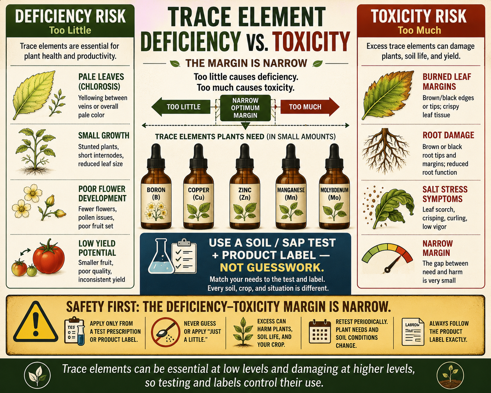
However, this is not framed by practitioners as a return to input-only chemical farming. The methodology recognizes soil biology as one important pathway for long-term nutrient cycling. Therefore, mineral applications are often combined with biological inoculants and carbon sources (like humic or fulvic acids), with the intent of improving nutrient retention and biological access; outcomes depend on product, crop, soil chemistry, moisture, and microbial activity [8].
For growers who cannot afford regular sap analysis, the Bionutrient methodology advocates the use of a refractometer to measure "Brix." Brix is a measurement of the dissolved solids (sugars, minerals, amino acids) in the plant sap [9].
A higher Brix reading may indicate a change in soluble solids and crop condition, but Brix is a soluble-solids/trend indicator, not proof of nutrient density, pest immunity, or disease resistance. Specific Brix numbers should not be used to predict pest outbreaks or claim absolute plant protection [10].
Dan Kittredge and the Bionutrient Food Association (BFA) have taken this a step further with the Real Food Campaign, working on tools such as spectrometers to compare crop-quality traits such as antioxidants and polyphenols in real time. This should be framed as a measurement and research effort, not proof that every crop grown in biologically active, mineral-balanced soil is objectively more nutritious than every conventionally grown counterpart [11].
North Texas Note: In our high-pH, high-calcium soils, the Bionutrient approach may be useful because it highlights antagonism. Excess calcium, bicarbonates, or high pH can interfere with the availability or uptake of potassium, magnesium, iron, manganese, and other nutrients, even when some are present in the soil. Sap analysis may help identify these patterns, but it is not a stand-alone diagnosis. Within the Bionutrient/Kempf practitioner framework, targeted foliar micronutrients combined with fulvic acid may be used to bypass some soil-chemistry constraints; rates, compatibility, and timing should follow the product label and crop-specific guidance.
Key References for This Chapter: [1] Kempf, J. (2020). Quality Agriculture: Conversations about Regenerative Agronomy with Innovative Scientists and Growers. Regenerative Agriculture Publishing. [Practitioner framework] [2] Huber, D. M., & Jones, J. B. (2013). The role of magnesium in plant disease. Plant and soil. [3] Cameron, D. D., et al. (2013). Mycorrhiza-induced resistance: more than the sum of its parts? Trends in Plant Science. [4] Piasecka, A., et al. (2015). Secondary metabolites in plant innate immunity. New Phytologist. [5] Albrecht, W. A. (1975). The Albrecht papers. Acres USA. [Historical/practitioner source] [6] Burgie, O. (2022). Plant Sap Analysis: A Guide to Monitoring Plant Nutrition. Advancing Eco Agriculture. [7] Fageria, N. K., Baligar, V. C., & Clark, R. B. (2002). Micronutrients in crop production. Advances in Agronomy. [8] Nardi, S., et al. (2002). Physiological effects of humic substances on higher plants. Soil Biology and Biochemistry. [9] Harrill, T. (1998). Using a refractometer to test the quality of fruits & vegetables. Bionutrient Food Association. [Practitioner/field guide — not a validated diagnostic standard] [10] Kempf, J. (2020). Quality Agriculture: Conversations about Regenerative Agronomy with Innovative Scientists and Growers. Regenerative Agriculture Publishing. [Practitioner framework] [11] Kittredge, D. (2021). The Real Food Campaign: Defining Nutrient Density. Bionutrient Food Association. [Practitioner/organizational source] [12] Kempf, J. (2020). Quality Agriculture: Conversations about Regenerative Agronomy with Innovative Scientists and Growers. Regenerative Agriculture Publishing. [Practitioner framework] [13] Kempf, J. (2020). Quality Agriculture: Conversations about Regenerative Agronomy with Innovative Scientists and Growers. Regenerative Agriculture Publishing. [Practitioner framework]
While the previous chapters detailed methodologies that often require purchased inputs, laboratory analysis, or specialized equipment, this chapter surveys three practitioner methodologies that emphasize self-reliance, hyper-local biology, and on-farm resources. These systems should be labeled as practitioner protocols or organizational doctrine unless a specific claim is independently supported.
Developed by Master Cho Han-Kyu, KNF is a practitioner protocol that emphasizes low-cost fermentations intended to capture and culture local biology and extract nutrition from on-farm materials [1]. It should not be framed as proof that commercial fertilizers or imported amendments are never needed in all soils or crops.
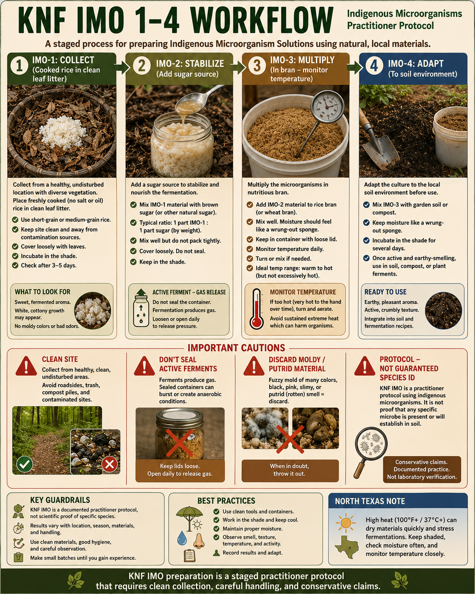
Safety Box: Fermentation Pressure and Homemade Inputs KNF and JADAM ferments can generate gas and pressure. Do not seal active ferments in airtight glass containers unless an airlock or reliable gas-release method is used. Use breathable covers where appropriate, label containers clearly, store them away from children and pets, and open vessels cautiously. Homemade ferments vary by batch and should not be treated as standardized fertilizers without analysis.
JADAM, founded by Youngsang Cho (the son of KNF founder Cho Han-Kyu), represents a deliberate departure from the complexity and sugar-heavy fermentations of traditional KNF. JADAM's philosophy is "Ultra-Low-Cost" agriculture, a practitioner protocol aimed at simplifying organic methods and reducing purchased inputs [5].
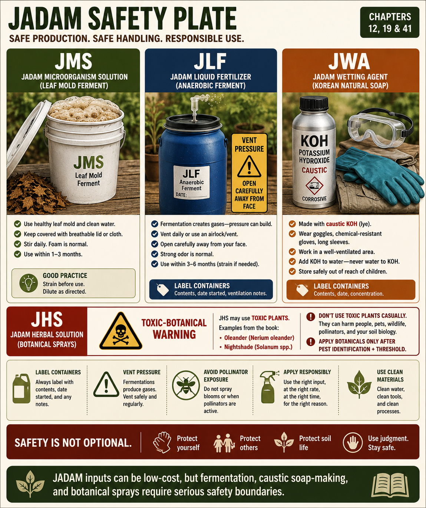
Safety Box: JWA, KOH, and Toxic Botanicals JADAM Wetting Agent is made with potassium hydroxide (KOH), which is caustic. Wear gloves, eye protection, long sleeves, and work with ventilation; store KOH and finished concentrates safely. JHS botanical sprays can also harm people, pets, pollinators, and beneficial insects. Do not casually use oleander, nightshade, or other highly toxic plants; follow local regulations, use monitoring and thresholds, and spray only with appropriate protective equipment and pollinator precautions.
Originating from a series of lectures given by Rudolf Steiner in 1924 and cited here through the 2004 book edition, Biodynamics is a practitioner/organizational doctrine that views the farm not merely as a biological system, but as a living, self-contained organism [10]. It emphasizes the integration of livestock, crop rotation, and the preservation of wild spaces to create a balanced ecological whole.
North Texas Note: When practicing these hyper-local methodologies in North Texas, the extreme heat is the primary variable. For KNF, a sugar fermentation (FPJ) that takes 7 days in a cooler climate might finish in 3 days here; monitor closely and use breathable covers to avoid pressure buildup. For JADAM, the JMS potato brew may peak rapidly in summer heat and decline just as quickly, so timing is protocol- and temperature-dependent. For Biodynamics, the planting calendar is a practitioner guide; the immediate realities of local weather (e.g., a 105°F heatwave), soil moisture, and crop stress should override calendar timing for planting or transplanting.
Key References for This Chapter: [1] Cho, H.-K., & Koyama, A. (1997). Korean natural farming: indigenous microorganisms and vital power of crop/livestock. Korean Natural Farming Association. [Practitioner text] [2] Cho, H.-K., & Cho, J.-Y. (2010). Natural Farming: Agriculture Materials. Cho Global Natural Farming. [Practitioner text] [3] Cho, H.-K., & Cho, J.-Y. (2010). Natural Farming: Agriculture Materials. Cho Global Natural Farming. [Practitioner text] [4] Cho, H.-K., & Koyama, A. (1997). Korean natural farming: indigenous microorganisms and vital power of crop/livestock. Korean Natural Farming Association. [Practitioner text] [5] Cho, Y. (2016). JADAM Organic Farming: The way to Ultra-Low-Cost agriculture. JADAM. [Practitioner protocol] [6] Cho, Y. (2016). JADAM Organic Farming: The way to Ultra-Low-Cost agriculture. JADAM. [Practitioner protocol] [7] Cho, Y. (2016). JADAM Organic Farming: The way to Ultra-Low-Cost agriculture. JADAM. [Practitioner protocol] [8] Cho, Y. (2016). JADAM Organic Farming: The way to Ultra-Low-Cost agriculture. JADAM. [Practitioner protocol] [9] Cho, Y. (2021). JADAM Organic Pest and Disease Control. JADAM. [Practitioner protocol] [10] Steiner, R. (2004). Agriculture Course: The Birth of the Biodynamic Method. Rudolf Steiner Press. (Original lectures delivered 1924.) [Practitioner/historical source] [11] Koepf, H. H. (1989). The Biodynamic Farm. Anthroposophic Press. [Practitioner/organizational doctrine] [12] Reganold, J. P., Palmer, A. S., Lockhart, J. C., & Macgregor, A. N. (1993). Soil quality and financial performance of biodynamic and conventional farms. Science, 260(5106), 344-349. https://doi.org/10.1126/science.260.5106.344 [Farm-system comparison; not prep-specific evidence] [13] Chalker-Scott, L. (2013). The science behind biodynamic preparations: A literature review. HortTechnology, 23(6), 814-819. https://doi.org/10.21273/HORTTECH.23.6.814 [14] Thun, M. (1979). Work on the Land and the Constellations. Lanthorn Press. [Practitioner calendar source]
Before a single seed is planted or a cubic yard of compost is ordered, the regenerative grower should read the landscape. This is not merely a matter of finding the sunniest spot; it is an exercise in understanding the historical ecology, the hydrological flow, and the existing biological capital of the site. In North Texas, where the transition from the Blackland Prairie to the Cross Timbers creates micro-ecologies within a single zip code, site reading is the foundation of success.
The first step is identifying the parent material. Are you on the deep, cracking Houston Black clays of the prairie, or the sandy loams of the Cross Timbers? The clay soils can possess high cation exchange capacity (CEC) but are prone to compaction and anaerobic tendencies when wet. The sandy loams often drain well but struggle to hold organic matter or water during the brutal August heat. Understanding this baseline helps determine whether your primary intervention will be structural (adding porosity to clay) or biological (building carbon sponges in sand).
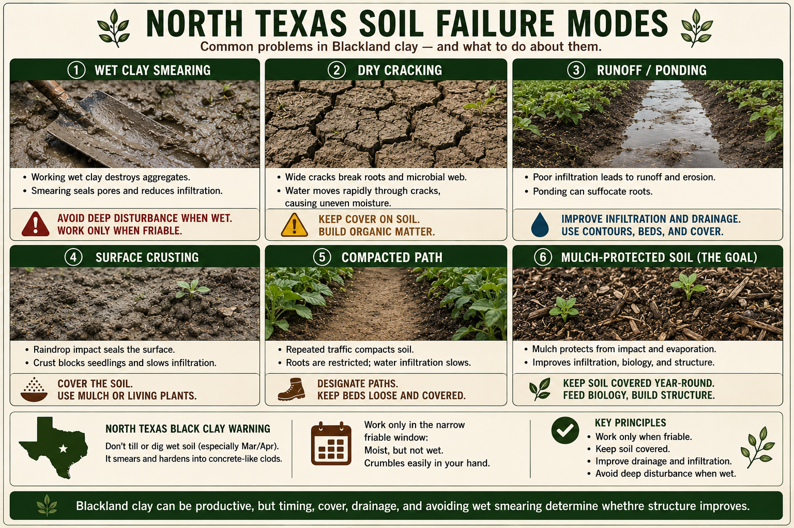
Water is often the limiting factor in Texas agriculture. Reading the site requires observing water movement during our torrential spring thunderstorms. Where does the water pool? Where does it run off? Permaculture practitioners commonly summarize the goal as "slow, spread, and sink" this water. Identifying natural swales or low points helps the grower design passive hydration systems—such as rain gardens or hugelkultur mounds—that retain more rainfall on site before it runs off the property.
What weeds are currently thriving on the site? Weeds are not merely nuisances; they can be field clues. A proliferation of deep-taprooted weeds like dandelion or Johnsongrass may suggest compaction, disturbance, a hardpan, moisture patterns, or an open seed bank, but weed presence alone is not a diagnosis. A dominance of nitrogen-fixing legumes (like native clovers or vetch) may point to an opportunity to build nitrogen in the system, but it should be cross-checked against soil tests, soil structure, infiltration, site history, and plant performance. Use the weed profile as one observation stream, not as a stand-alone measure of successional stage or fungal dominance.
Methodology Comparison: Reading the Site
- Soil Food Web (Ingham): As a practitioner monitoring framework, reads the site through microscopy and broad indicator-plant patterns. Weed presence can suggest disturbance or successional tendencies, but it does not translate by itself into a specific fungal-to-bacterial ratio.
- Coot's Mix (Bennett): As a practitioner/community protocol, can reduce dependence on native soil by building a managed raised-bed or container mix. It still needs adaptation to site drainage, heat, irrigation, roots, and pest pressure.
- Bionutrient (Kittredge): As a Bionutrient practitioner framework, reads the site through soil mineral testing and plant sap analysis, using weeds as secondary clues rather than primary diagnosis.
- KNF/JADAM (Cho): As practitioner protocols, read the site to identify robust nearby ecology for microbial collection or leaf-mold sourcing, while recognizing that wild collections vary by season, site, and handling.
- Biodynamics (Steiner): As biodynamic practitioner doctrine, reads the site as a farm or garden organism and uses preparations and timing practices as part of that framework, not as independently proven mechanism tests.
North Texas Note: Do not attempt to till the Houston Black clay when it is wet (typically March/April). It will form concrete-like clods that take years to break down. Wait until the soil is friable, or better yet, adopt a strict no-till approach and build on top of it.
The decision to build raised beds is often a necessity in North Texas, where impenetrable caliche rock or severely degraded, compacted clay makes in-ground cultivation nearly impossible in the first year. However, a raised bed is an engineered environment; it should be designed with ecological principles in mind to prevent it from becoming an overheated, poorly buffered box.
The physical dimensions of a raised bed influence its thermal stability and ease of use.
The materials used to construct the bed impact its longevity, toxicity, and thermal dynamics.
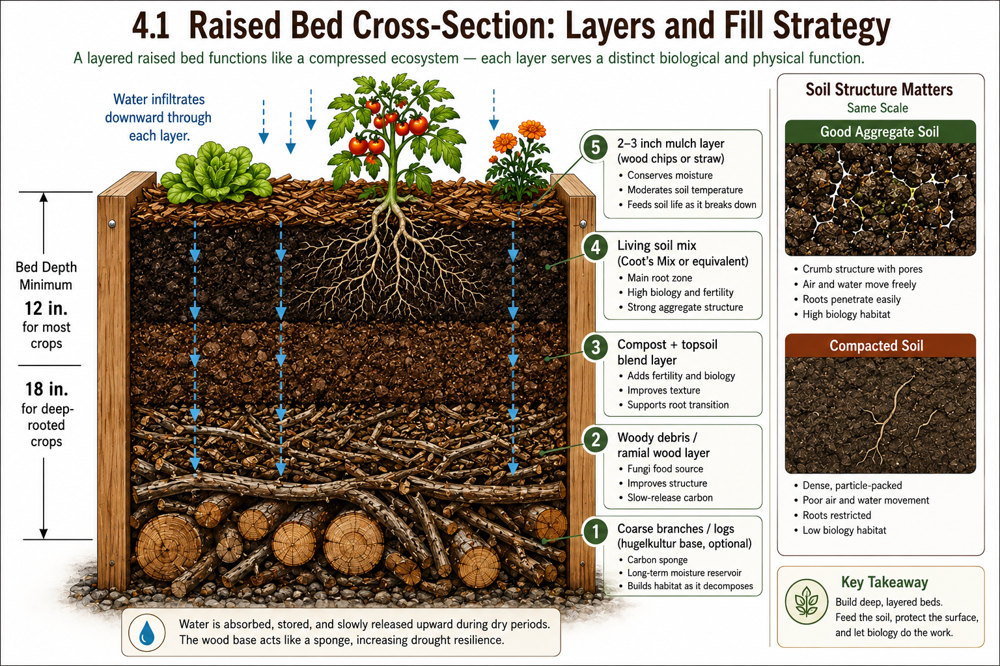
Filling an 18-inch deep raised bed entirely with premium compost and amendments can be expensive. One regenerative option is to incorporate a hugelkultur-style core.
Safety Box: Raised-Bed Fill, Manure, and Decomposition Deep wood cores can settle as they decompose. Keep the final planting zone deep enough for crop roots and be prepared to top up beds. Do not use treated lumber, painted wood, or contaminated cardboard. If manure is used anywhere in the fill, treat it as a food-safety material: avoid contact with harvestable crop parts, use fully composted manure when possible, and follow extension or food-safety guidance for edible crops. Test hay, straw, manure, or compost for persistent herbicide contamination before broad use.
North Texas Note: If building beds over Bermuda or Johnsongrass, cardboard alone will not stop them. A perimeter trench and physical root barrier may be needed, or the grass can invade the rich soil of the bed from below.
Container growing presents a distinct challenge for living soil methodologies. The defining characteristic of a container is its isolation; it is a managed system with less access to the biological and mineral buffering of the surrounding soil. To succeed, the grower needs to provide enough habitat, moisture stability, mineral reserve, and biological diversity within a confined volume.
Field photo brief (SP-04): Container with drainage risers with a clear cue: Show pot feet/risers, drain holes, saucer clearance, and overflow path
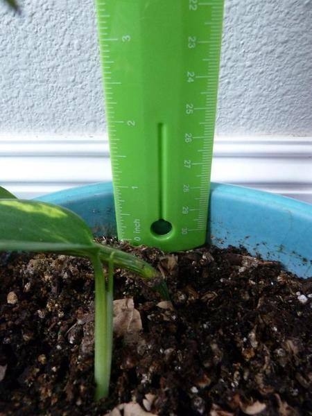
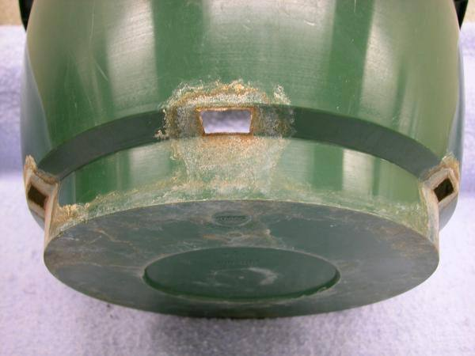
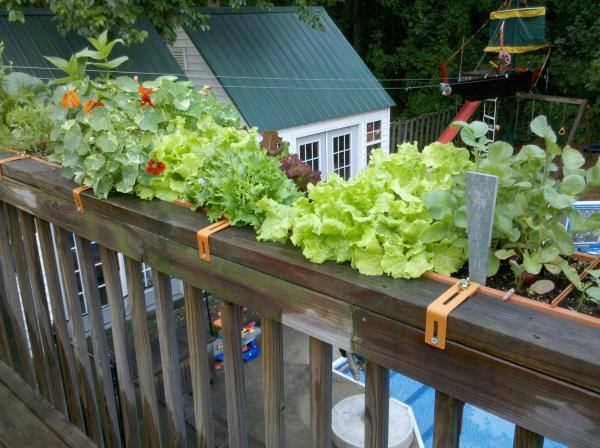
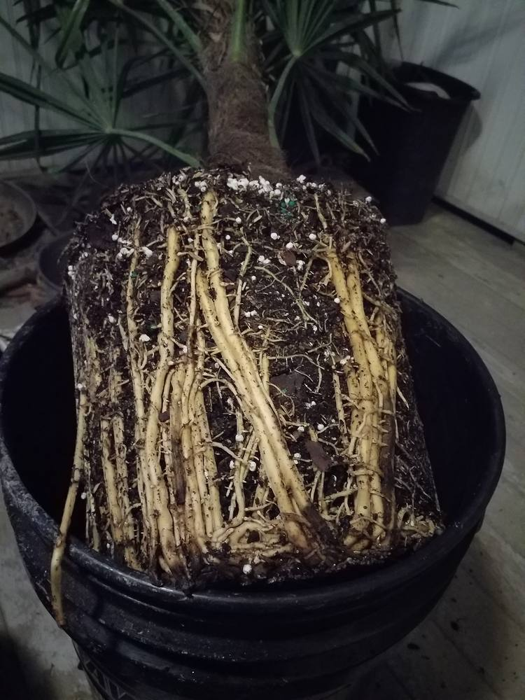
Field photo brief (SP-05): Herb barrel / patio herb setup with a clear cue: Show barrel drainage holes, risers, overflow path, and separated wet/dry herb groups
The primary limitation of a container is its reduced buffering capacity. In a 5-gallon pot, an over-application of nitrogen or a pH swing can have stronger consequences than it would in a 100-gallon raised bed because there is less soil volume to dilute the mistake. Smaller volumes can also limit moisture stability and biological habitat. As a practical design target, heavy-feeding annuals like tomatoes often perform better in containers of roughly 15 gallons or larger, while 30- to 50-gallon containers provide more room for biological and moisture buffering.
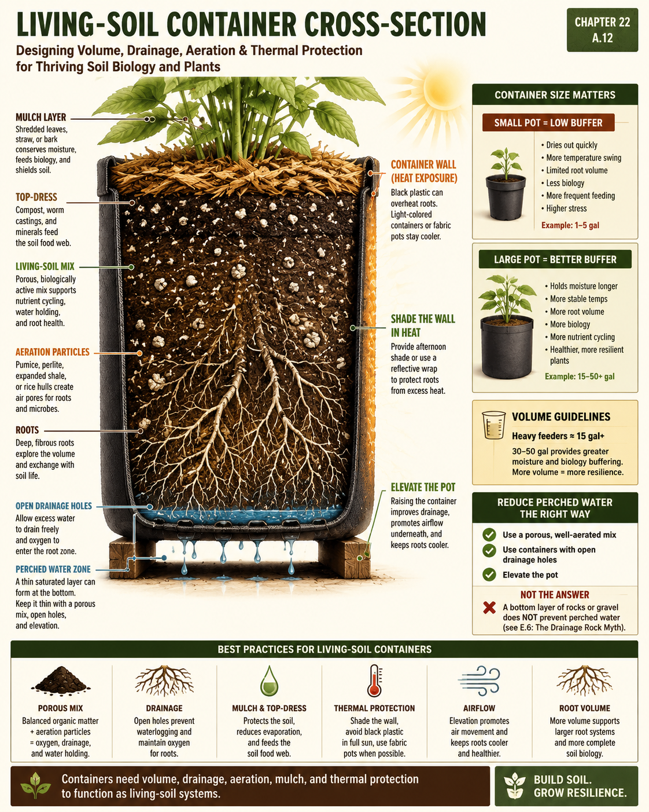
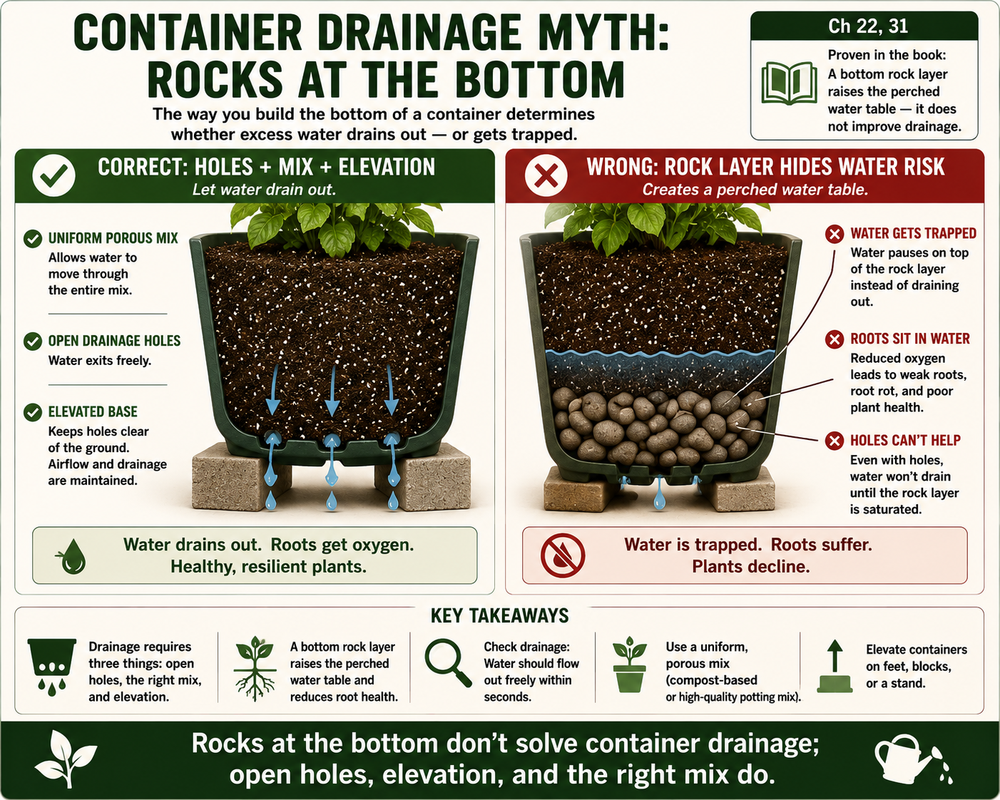
Containers can suffer from a phenomenon known as the "perched water table"—a layer of saturated soil at the bottom of the pot that drains slowly because of capillary behavior (Spomer, 1974). If the mix remains saturated, roots can be stressed and some root pathogens may become more likely. To reduce this risk, container soils need high porosity and appropriate particle size. Many living-soil container mixes use substantial large-aggregate aeration materials, such as pumice, expanded shale, or rice hulls, but the exact proportion depends on container size, crop, climate, and irrigation pattern.
Because the container has limited contact with the surrounding earth, it may need intentional biological maintenance. Compost extract, mycorrhizal products, and targeted commercial biologicals can be useful where the crop, strain, and product fit are appropriate, but microbial products should be used according to the product label for rate, storage, expiration, placement, water quality, and tank-mix compatibility. The nutrient bank also needs periodic replenishment through compost, mulch, or dry amendments guided by crop response, product labels, and soil or media testing.
Methodology Comparison: Container Growing
- Soil Food Web (Ingham): As a practitioner framework, may use compost extracts or AACT to maintain biological activity in containers; compost-tea performance and safety depend on source compost, brewer sanitation, water quality, foods, temperature, and timing.
- Coot's Mix (Bennett): As a practitioner/community protocol, uses a 1:1:1 base developed in container-growing communities. It can provide useful structure and mineral reserve, but it still requires local adaptation for heat, irrigation, and ingredient substitutions.
- Bionutrient (Kittredge): As a Bionutrient practitioner framework, would emphasize mineral monitoring and plant response in a closed system; foliar sprays or drenches should be test- and product-label-dependent.
- KNF/JADAM (Cho): As practitioner protocols, can be adapted cautiously to containers, but JMS, JLF, FPJ, and similar ferments are batch-variable and can cause salt, acidity, odor, or phytotoxicity problems if used outside tested protocol ranges.
- Biodynamics (Steiner): As biodynamic practitioner doctrine, is traditionally tied to the whole-farm organism and field-scale preparations; container use should be framed as an adaptation, not a core validated requirement.
Safety Box: Container Biologicals, Compost Tea, and Ferments Follow product labels for microbial inoculants, biofungicides, biopesticides, mycorrhizal products, and liquid biologicals. Protect living products from heat, UV/direct sun, expired storage, chlorinated or incompatible water, and untested tank mixes. Wear respiratory protection when handling dry inoculants, peat/coir dust, compost, or mineral powders. Active ferments need breathable covers or gas-release handling; do not seal actively fermenting liquids in rigid containers. Do not spray compost tea or unverified ferments onto edible plant parts close to harvest.
North Texas Note: Black plastic nursery pots can become dangerously hot in the Texas summer because they absorb solar radiation and can overheat the root zone. Use light-colored fabric pots where appropriate, shade the container wall, group containers to reduce sun exposure, or mulch the surface to moderate temperature and evaporation.
The concept of a "universal potting soil" is a modern, industrial convenience that ignores the profound evolutionary differences between plant species. A regenerative approach recognizes that a heavy-feeding, fast-growing annual (like corn) requires a vastly different biological and mineral profile than a slow-growing, woody perennial (like a blueberry bush).
Regardless of the specific recipe, Gabe Brown's principles can serve as general design targets: minimize disturbance, increase diversity, maintain living roots where practical, and keep the soil covered. The base of a living-soil recipe is therefore usually a biologically active compost component, a structural matrix for aeration and moisture balance, and mineral inputs chosen according to soil/media tests, crop needs, and product labels.
These crops often benefit from steady nitrogen mineralization and a biologically active soil food web; Soil Food Web-style F:B values should be treated as practitioner targets or trend indicators rather than universal crop requirements.
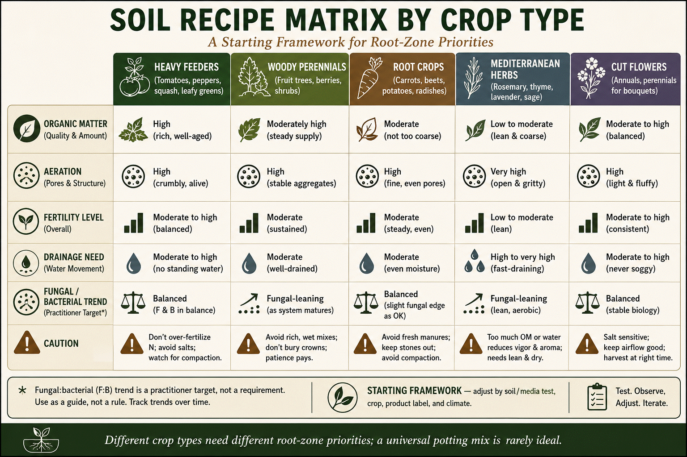
These crops often evolved in forest-edge or perennial systems and may benefit from fungal-favoring carbon sources and longer-term soil structure.
Root crops generally favor loose, friable soil with moderate available nitrogen and adequate phosphorus and potassium; excess soluble nitrogen or compaction can contribute to excessive side roots or forking.
Mediterranean herbs generally prefer rapid drainage, modest fertility, and a pH suited to the species. Rich, water-retentive soils can increase root-disease risk, especially in wet spring conditions.
Cut flowers often respond to a balanced mix that supports vegetative growth and flowering without excess soluble nitrogen.
Methodology Comparison: Approaching the Soil Mix
- Soil Food Web (Ingham): As a practitioner framework, uses F:B ratios as monitoring targets and trend indicators. Annual and perennial targets should not be presented as universal crop requirements, and physical mix design still matters.
- Coot's Mix (Bennett): As a practitioner/community protocol, favors a reusable 1:1:1 base (compost:peat:aeration) plus a recurring amendment suite. It is a recipe tradition, not a formal universal agronomic standard.
- Bionutrient (Kittredge): As a Bionutrient practitioner framework, focuses on mineral balancing through soil and sap testing. Recipes still matter for structure and biology, but mineral decisions are interpreted through testing rather than fixed amendment packages.
- KNF/JADAM (Cho): As practitioner protocols, often minimize purchased amendments and use native soil, IMO-4/JMS, JLF, FPJ, and other ferments according to protocol. Homemade ferments are batch-variable and should not be treated as standardized fertilizers.
- Biodynamics (Steiner): As biodynamic practitioner doctrine, applies Preps 500/501 as field sprays and may use a calendar-based planting schedule. Mechanism is not established in peer-reviewed literature; the methodology is surveyed at this level only per Book 1 scope.
Safety Box: Soil Recipes, Dust, Compost Tea, and Living Products Dry amendments such as basalt, gypsum, oyster shell flour, soft rock phosphate, bone meal, crab meal, kelp meal, humics, and inoculant powders can create inhalable dust. Mix them damp or outdoors, avoid windy conditions, and use eye and respiratory protection when appropriate. AACT and compost extracts are variable biological products: use mature, clean compost; sanitize brewers and tools; avoid risky foliar use on harvestable edible plant parts; and do not assume disease control. Commercial mycorrhizal, bacterial, or fungal products should follow product labels for rate, storage, expiration, placement, water quality, and tank-mix compatibility. Active ferments such as JLF, FPJ, and IMO preparations need breathable covers or gas-release handling and should be labeled and stored away from children and pets.
North Texas Note: When building the perennial mix for fruit trees in Texas, peat moss can become hydrophobic if it dries out in summer heat. Substitute with high-quality, aged leaf mold or finely screened pine bark where those materials fit the crop, pH target, and irrigation plan.
The transition to a living soil system is not a one-time event; it is a commitment to maintaining soil cover, structure, and biological activity over time. Tilling can disrupt fungal hyphal networks, accelerate oxidation of soil carbon, and collapse pore spaces that house the soil food web. In no-till systems, fertility is therefore usually maintained from the top down.
Field photo brief (SP-15): Top-dressing / no-till maintenance with a clear cue: Show compost/topdress layer, mulch pulled back, living roots undisturbed if visible
Top-dressing is the practice of applying dry amendments, compost, and mulch directly to the soil surface, mimicking the natural accumulation of leaf litter in a forest. The soil biology—specifically earthworms, microarthropods, and fungi—is responsible for physically transporting these nutrients down into the root zone. This process is usually slower than incorporating soluble fertilizers, requiring the grower to anticipate plant needs in advance and adjust to temperature, moisture, and biological activity.
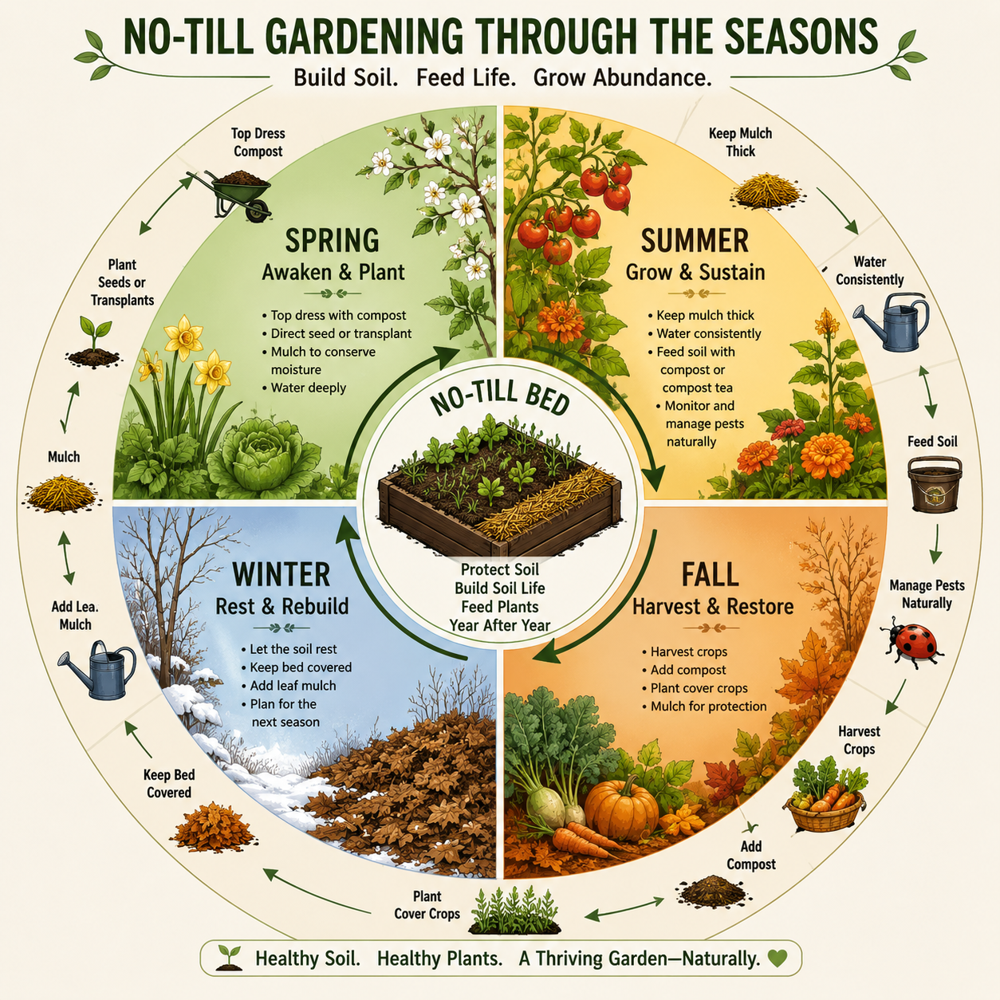
A common top-dressing application consists of three layers:
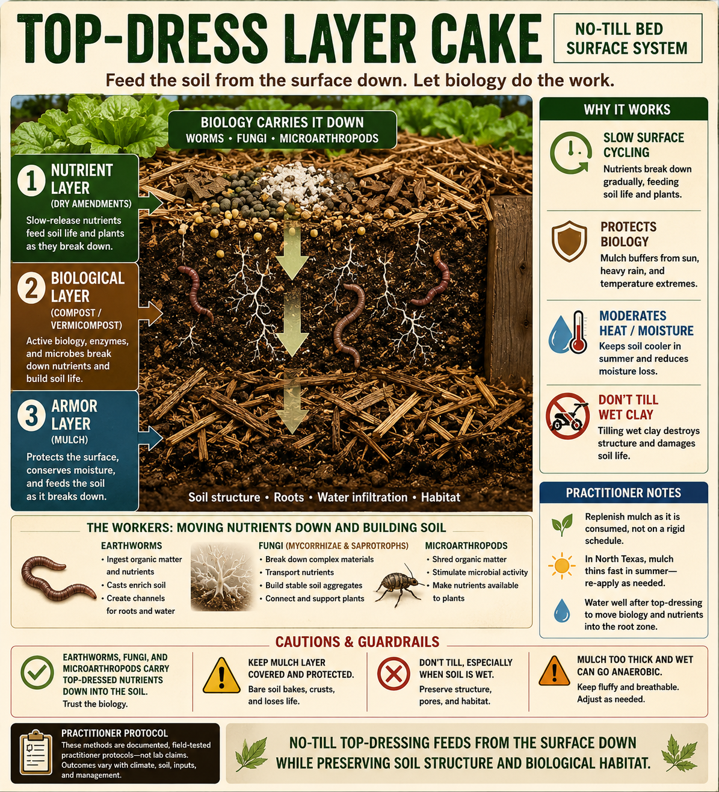
Top-dressing is often timed around transitional phases in the plant's life cycle. A spring application before planting can be useful, followed by targeted replenishment as crops transition from vegetative growth to flowering or fruiting. In a biologically active living soil, the mulch layer may be visibly consumed and should be replenished as needed rather than on a rigid schedule.
Methodology Comparison: Top-Dressing Cycles
- Soil Food Web (Ingham): As a practitioner framework, top-dressing is often used to add high-quality compost and move the soil toward desired biological trends; F:B ratios are practitioner monitoring targets, not universal crop requirements.
- Coot's Mix (Bennett): As a practitioner/community protocol, commonly top-dresses kelp, neem/karanja, crab meal, malted barley, and vermicompost to recharge a reusable soil bank between crop cycles.
- Bionutrient (Kittredge): As a Bionutrient practitioner framework, top-dressing is interpreted through soil and sap testing. Trace minerals such as boron should be applied only under test, label, or qualified agronomic guidance.
- KNF/JADAM (Cho): As practitioner protocols, often emphasize liquid drenches such as JLF, FPJ, JMS, or IMO-based applications rather than dry amendments; these inputs are batch-variable and protocol-dependent.
- Biodynamics (Steiner): As biodynamic practitioner doctrine, top-dressing may involve biodynamic compost treated with Preps 502-507 and timed according to the biodynamic calendar; this timing language should be presented as doctrine, not established mechanism proof.
North Texas Note: In the extreme heat of a Texas summer, mulch breakdown and physical loss can accelerate. A straw layer applied in May may be substantially thinned by July depending on irrigation, wind, crop canopy, and biological activity. Re-apply mulch mid-season as needed to prevent the soil surface from overheating and drying.
Cover cropping is one practical expression of Gabe Brown's principle of "maintaining living roots." Living roots provide a major carbon input to the rhizosphere through exudates, and bare soil loses that input when beds are left fallow (Wardle, 2002). Cover crops can provide this fuel during the off-season while performing ecological services that depend on species, timing, climate, and management.
Different cover crops are selected for specific ecological functions:
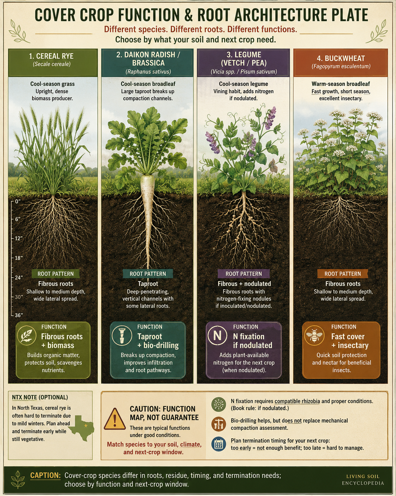
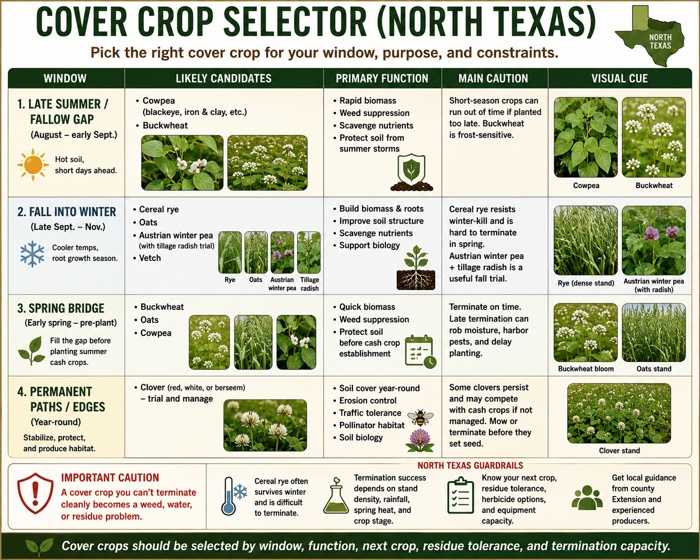
Monoculture cover crops can be useful when the goal is specific, such as winter-kill, erosion control, nitrogen fixation, or biomass. Multi-species cover-crop mixes are a common regenerative strategy, often blending several functional groups such as grasses, legumes, and brassicas. These mixes can broaden root architectures and exudate profiles, but they are context-dependent and are not automatically superior for every bed, season, or termination plan.
In a no-till system, cover crops are not tilled into the soil; they are managed via "chop-and-drop." This technique involves cutting the cover crop (or specific dynamic accumulator plants) at the base and laying the biomass directly on the soil surface as a living mulch.
If a cover crop needs to be fully terminated before planting a cash crop:
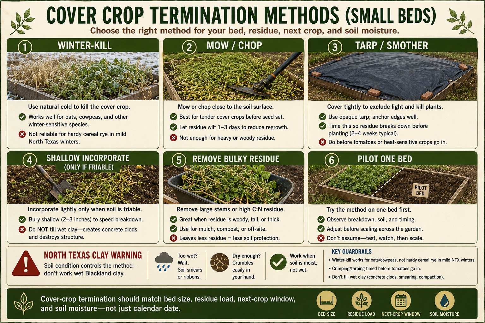
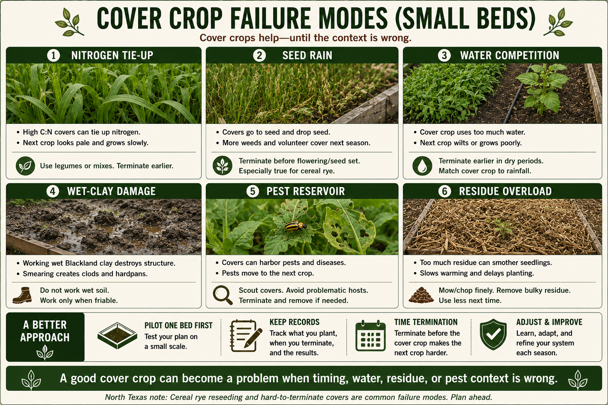
North Texas Note: Timing is everything in Texas. Our "winter" is often too mild to reliably winter-kill hardy cover crops like cereal rye, which can become difficult to terminate in spring. A fall mix such as Austrian winter peas and tillage radish can be a useful option to trial when planted in the appropriate local window, but termination success depends on stand density, rainfall, spring heat, crop stage, and whether crimping or tarping is timed well before tomatoes are planted.
Water is the universal solvent and the primary transport mechanism for the soil food web. In a living soil system, water management is not merely about preventing wilt; it is about maintaining a moisture range that supports roots, oxygen diffusion, and aerobic microbial respiration. Understanding the physics of water—specifically pressure, flow, and distribution—is the foundation of effective infrastructure.
Field photo brief (SP-10): Mulch thickness comparison with a clear cue: Show 1 inch vs 3 inch mulch ring and keep stems clear
Field photo brief (SP-01): Shade cloth over vegetables with a clear cue: Show shade cloth percentage/height/anchoring over real vegetable bed; include mulch and airflow if possible
Water moves through soil via capillary action, defying gravity to travel through microscopic pore spaces. The tension at which water is held by soil particles determines its availability to plants and microbes.
Designing an irrigation system requires a basic understanding of hydraulics.
North Texas Note: The Houston Black clay of North Texas has high water-holding capacity but a very slow infiltration rate. Applying water too quickly (e.g., via high-flow overhead sprinklers) can result in runoff before water moves deeply into the profile. Water should be applied slowly and steadily, with pauses if needed, to encourage infiltration and reduce surface sealing.
There is no single "best" irrigation system. The optimal choice depends on the scale of the garden, the soil type, and the specific crops being grown. A regenerative system often employs multiple methods simultaneously.
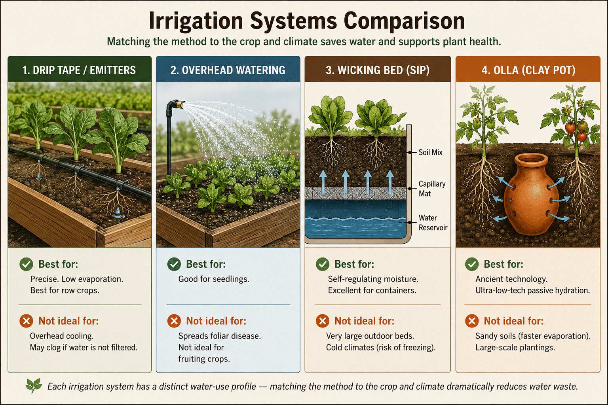
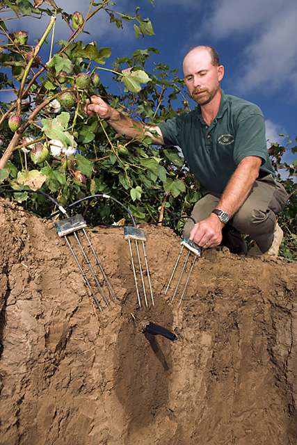
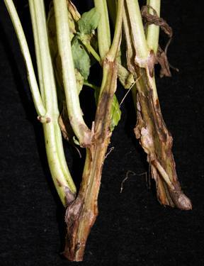
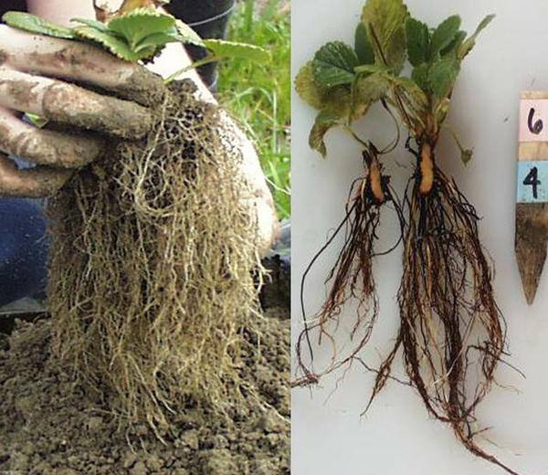
Field photo brief (SP-02): Drip line under mulch with a clear cue: Lift mulch edge to show drip emitter/tubing placement and moisture zone
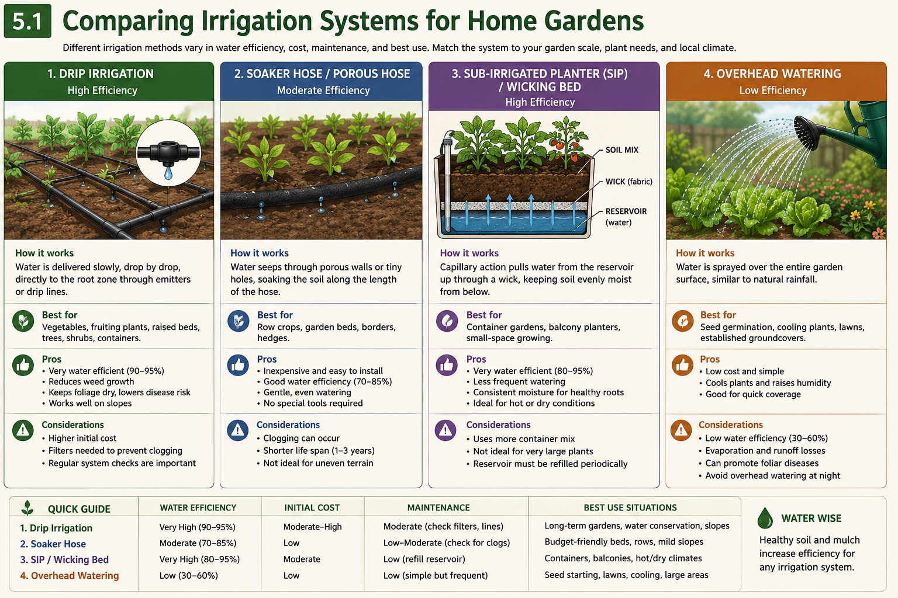
Drip irrigation delivers water directly to the soil surface via pressure-compensating emitters.
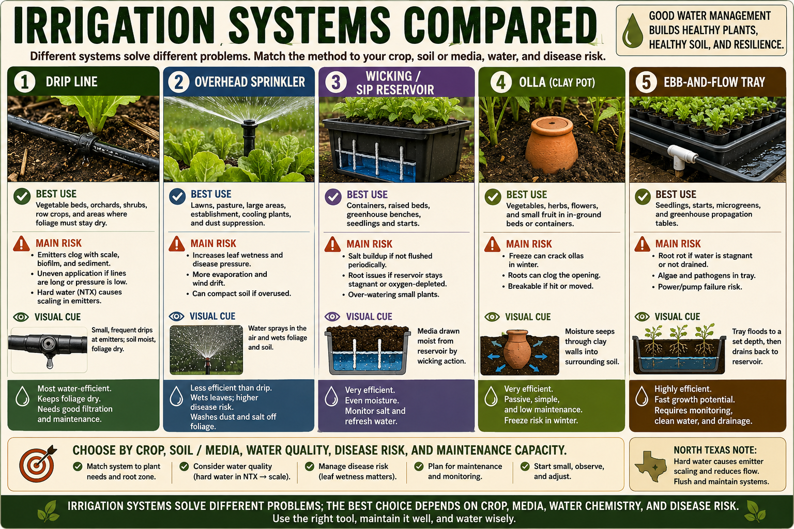
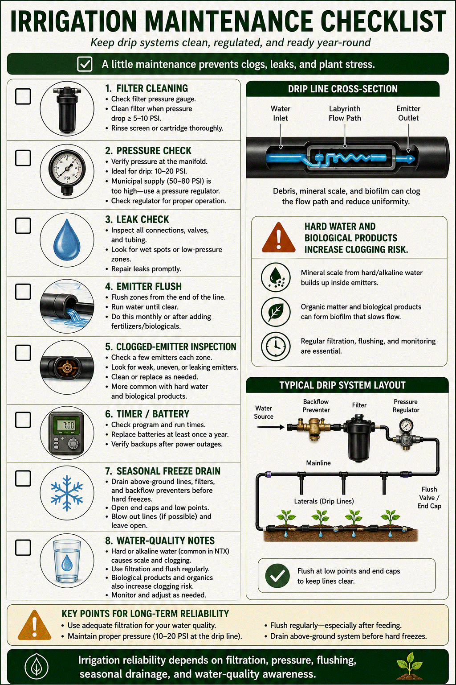
Overhead systems broadcast water through the air, simulating rainfall.
Wicking systems store water in a reservoir beneath the soil, relying on capillary action to draw moisture up into the root zone.
An ancient technology where unglazed clay vessels are buried in the soil and filled with water. The water slowly seeps through the porous clay directly into the root zone based on soil moisture tension.
Primarily used in greenhouse propagation, this system temporarily floods a tray of seedlings from below, then drains the excess water back into a reservoir.
Methodology Comparison: Irrigation Approaches These are practitioner-framework preferences, not universal irrigation rules.
- Soil Food Web (Ingham): Soil Food Web practitioners often favor drip irrigation for moisture management and may use compost teas or extracts as foliar or soil applications; compost-tea use requires batch-quality and food-safety caution.
- Coot's Mix (Bennett): Coot's Mix practitioner protocols commonly favor drip or wicking systems (like EarthBoxes) to keep peat-heavy mixes evenly moist without repeated disturbance.
- Bionutrient (Kittredge): Bionutrient practitioners emphasize water quality, including disinfectants, alkalinity, hardness, and mineral antagonisms, especially where foliar or fertigation programs are used.
- KNF/JADAM (Cho): KNF/JADAM practitioner protocols often use overhead or hand-watering to apply highly diluted ferments (JLF, FPJ) to soil or foliage; dilution, crop stage, edible-crop contact, and fermentation safety matter.
- Biodynamics (Steiner): Biodynamic practice may time irrigation or spray applications according to calendar-based doctrine. Mechanism not established in peer-reviewed literature; the methodology is surveyed at this level only per Book 1 scope.
North Texas Note: North Texas municipal water commonly has substantial hardness and alkalinity, which can contribute to mineral scale in small drip emitters. Acid injection should be based on a water test, target alkalinity, equipment compatibility, and safe handling instructions—not on regional assumptions alone. Larger turbulent-flow emitters, filtration, periodic flushing, and water-treatment equipment rated for the job may reduce clogging risk. Above-ground drip lines should also be drained before hard freezes to reduce rupture risk.
Municipal water is disinfected for public health, commonly with chlorine or chloramine. Those disinfectants can affect some microbes in brewing vessels or biological drenches depending on concentration, contact time, and organic matter load, so sensitive biological applications benefit from verified dechlorination or filtration. North Texas municipal water can also have substantial hardness and alkalinity, which can contribute to mineral scale in emitters and can influence soil or media pH over time.
Water chemistry terms should be kept separate. Hardness mainly refers to calcium and magnesium; alkalinity usually reflects bicarbonates and carbonates; pH measures acidity/alkalinity at that moment; EC and sodium are separate salinity concerns. North Texas water may have pH above 8.0 and elevated bicarbonate alkalinity. Repeated use can push container media or poorly buffered soils toward higher pH and can contribute to micronutrient availability problems such as iron or manganese chlorosis.
Safety Box: Water Treatment, Acid Injection, and Rainwater Verify disinfectant removal before brewing compost tea or mixing living microbial products. Use filters rated for the disinfectant you are trying to remove, and replace cartridges on schedule. Acid injection requires water-test data, compatible irrigation equipment, eye/skin protection, careful dilution, and secure storage away from children and pets. Rainwater lacks municipal disinfectants but is not automatically potable or sterile; roof surfaces, gutters, tanks, algae, birds, rodents, and mosquitoes can contaminate stored water. Screen tanks, use first-flush diversion where appropriate, keep tanks opaque and covered, and avoid using questionable stored water on edible plant parts near harvest.
Rainwater is often useful for living-soil applications because it is usually softer and lower in bicarbonate alkalinity than municipal water, though pH and cleanliness vary with roof, air, and storage conditions.
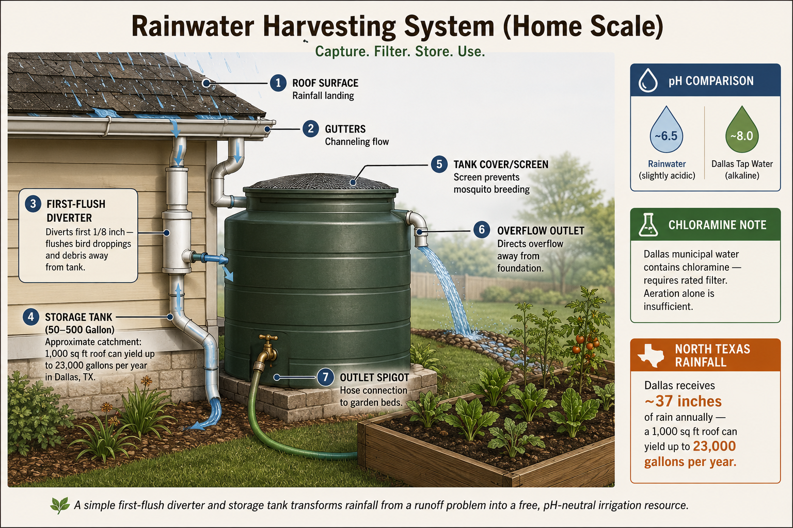
North Texas Note: If your municipal supply uses chloramines, you cannot simply let the water sit in a bucket to off-gas before brewing compost tea. Use a chloramine-rated filter or a verified neutralization method, and confirm with test strips or supplier specifications when biological viability matters.
In North Texas, a greenhouse is rarely used to stay warm in the winter; it is primarily used to control moisture in the spring and extend the season into the extreme heat of summer via shade.
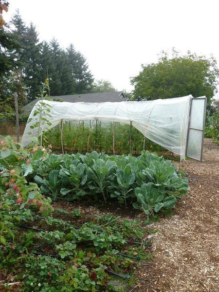
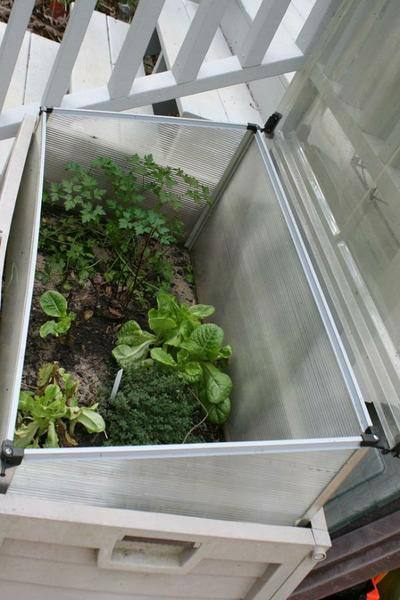
Field photo brief (SP-12): Cold frame / low tunnel setup with a clear cue: Show open/vented vs closed condition and crop inside
A high tunnel is a simple, unheated structure made of metal bows covered in greenhouse plastic. It is planted directly into the native soil.
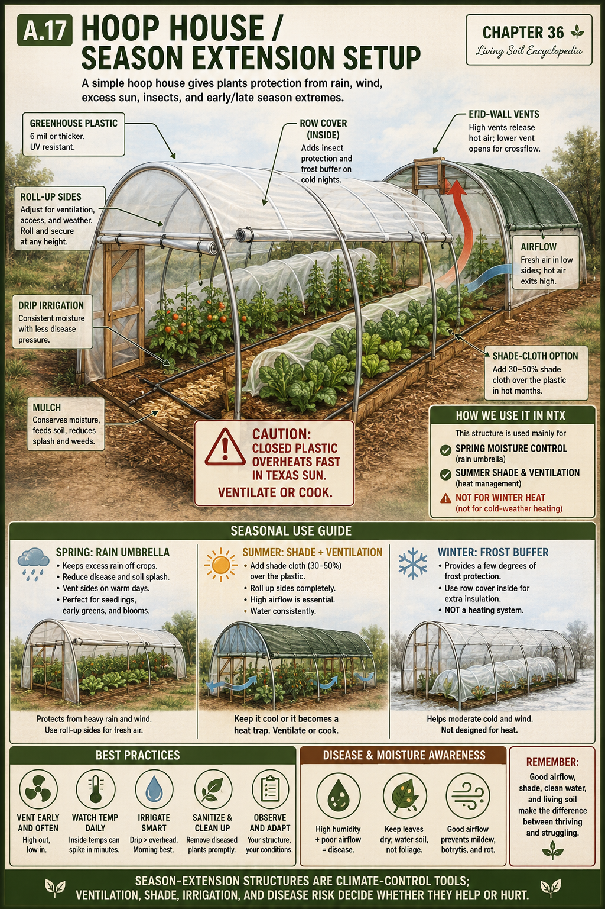
By late June, an enclosed greenhouse in Texas can overheat rapidly if ventilation and shading are inadequate. The plastic may need to be removed, vented, or heavily shaded depending on the structure and crop.
Passive ventilation is critical. A hoop house should have roll-up sides, end-wall openings, fans, or another ventilation strategy that can be adjusted daily. Stagnant air favors prolonged humidity and some foliar pathogens, and gentle air movement can help plants develop stronger stems.
North Texas Note: When orienting a hoop house in North Texas, a North-to-South alignment may improve summer ventilation when end-walls are open to prevailing southern breezes, but the best orientation still depends on site slope, shade, access, wind exposure, and drainage.
Indoor growing provides a high degree of environmental control, allowing the grower to propagate seedlings, cultivate culinary herbs, and produce leafy greens during weather extremes. This chapter focuses strictly on small-scale, personal food production (e.g., a 4x4 closet or wire shelving unit).
Plants do not perceive light in terms of "lumens" or "watts"; they perceive Photosynthetically Active Radiation (PAR).
A 4x4 tent or closet is a microclimate that can quickly become unbalanced.
Note: This chapter covers small-scale at-home indoor growing for personal food production only. Do not include cannabis, hemp, microgreens (Book 2), gourmet mushrooms (Book 2), or commercial herb production under lights (Book 2).
North Texas Note: The primary value of an indoor setup in North Texas is often summer continuity rather than winter production. When August heat causes outdoor herbs such as basil or cilantro to decline or bolt, a small indoor LED shelf can provide a more stable supply in an air-conditioned space. Starting tomato seeds indoors in winter is also one reliable way to produce transplants large enough to set fruit before early-summer heat reduces pollen viability.
In a no-till, living soil system, the toolset shifts dramatically from heavy machinery (rototillers, plows) to precision hand tools designed to minimize soil disturbance.
A dull tool requires excessive force, leading to grower fatigue and sloppy cuts that damage plants.
A biologically active soil can contribute to disease suppression, but it does not eliminate the need for sanitation. When pruning diseased tissue or moving between distinct garden zones, sanitation is critical to reduce mechanical transfer of pathogens such as Tobacco Mosaic Virus, bacterial canker organisms, or Southern Blight sclerotia.
Safety Box: Tool Sanitation Disinfectants work best after soil and sap are physically removed. Alcohol is flammable; bleach can irritate skin and eyes, corrode metal, and lose strength after mixing. Use ventilation, gloves when appropriate, labeled containers, and product-specific contact times. Do not mix bleach with acids, ammonia, or other cleaners.
North Texas Note: The Houston Black clay is unforgiving on tools. Avoid using a broadfork when the clay is wet, because it can bend tines and smear soil structure, or when it is bone-dry, because it may behave like concrete. Work during the narrow window of friability—often a few days after a soaking rain. The extreme humidity of a Texas spring can also rust a carbon-steel hoe quickly if it is not cleaned, oiled, and stored in a dry shed.
Nitrogen is one of the main reasons living soil cannot be managed like an inert growing medium. It moves continuously through plant tissue, compost, mulch, microbial biomass, mineral surfaces, water, and the atmosphere. A gardener may buy nitrogen in a bag or import it in compost, but the crop only experiences nitrogen through the timing and form in which the soil system releases, holds, transforms, loses, or withholds it.
In a living bed, nitrogen exists in several different pools at once. Some of it is organic nitrogen locked inside compost, manure, cover-crop residue, roots, fungal hyphae, bacterial cells, and stable soil organic matter. Some of it is present as ammonium, the positively charged mineral form that can be held on cation exchange sites and taken up by roots. Some is present as nitrate, the highly mobile form that plants can use quickly but that water can also carry below the root zone. Smaller, short-lived forms such as nitrite appear during transformations, while gaseous forms such as ammonia, nitrous oxide, nitric oxide, and dinitrogen represent loss pathways or atmospheric reservoirs. Total nitrogen tells only part of the story; the active question is where the nitrogen is, what form it is in, and whether the crop can reach it when demand is highest.
The cycle begins when organic residues enter the decomposer system. Bacteria, fungi, earthworms, microarthropods, and other detritivores fragment and digest plant tissue, manure, dead roots, and microbial remains. As proteins, amino sugars, nucleic acids, and other nitrogen-bearing compounds are broken down, microbes convert organic nitrogen into ammonium. This is the mineralization side of the cycle. At the same time, microbes may pull ammonium or nitrate out of the soil solution and hold it inside their own bodies while they decompose carbon-rich material. That is immobilization. These two processes are not opposites that happen in separate worlds; they can occur in the same bed on the same day. A fresh alfalfa residue may release nitrogen quickly, while a thick layer of straw or coarse wood chips may temporarily tie up nitrogen near the surface as microbes build biomass.
Once ammonium is present in aerated soil, nitrifying organisms can convert it first to nitrite and then to nitrate. Nitrification needs oxygen, moisture, and suitable temperatures, so it slows when soil is too cold, too dry, compacted, or waterlogged. Nitrate is easy for roots to absorb, but it is also easy to lose. Because nitrate carries a negative charge, it is not held strongly by most soil exchange surfaces. A heavy rain or a long irrigation set can move nitrate below shallow roots, especially in sandy soils or raised-bed mixes with low buffering capacity.
When oxygen becomes limited, a different loss pathway opens. In saturated, compacted, or poorly drained soil, microbes may use nitrate as an electron acceptor and convert it into gaseous nitrogen forms. That process, denitrification, can remove nitrogen from the bed entirely. This is one reason a nitrogen problem is often really a water and oxygen problem. A grower who keeps adding fertility to a waterlogged bed may be feeding a loss pathway rather than feeding the crop.
Volatilization is another common failure mode, especially in alkaline conditions. Ammonium-producing materials, fresh manures, urea-type nitrogen sources, and some high-nitrogen meals can lose nitrogen as ammonia gas when they sit exposed near the soil surface in warm, high-pH conditions. Covering the material with compost or mulch, watering appropriately, timing applications before gentle rain, and following product labels or soil-test guidance can reduce waste. This is not about burying everything deeply; it is about avoiding the hot, dry, exposed conditions that turn useful nitrogen into air.
Nitrogen fixation is one entry point into the cycle, but it is often misunderstood. Rhizobia in legume nodules, Frankia in compatible actinorhizal plants, and some free-living or associative organisms can convert atmospheric nitrogen into biologically usable forms. That fixed nitrogen still has to move into plant tissue, root turnover, residues, microbial biomass, compost, manure, or mineral pools before it benefits another crop. A clover cover crop is not a cash machine that instantly deposits nitrate into the next tomato bed. It is a biological investment whose value depends on nodulation, biomass, termination timing, residue handling, moisture, and decomposition.
This is the locked position for the manuscript: nitrogen fertility is not the same as adding nitrogen. A bed can contain nitrogen that is unavailable, nitrogen that is available but leaching, nitrogen immobilized in microbes, nitrogen leaving as gas, or nitrogen released too early or too late for crop demand. Living soil management improves the timing and buffering of the cycle; it does not suspend chemistry, water movement, or crop physiology.
Use nitrogen-cycle thinking before applying any nitrogen input. First read the crop. Leafy greens, corn, onions, garlic, and brassicas often need steady nitrogen during active growth. Fruiting crops such as tomatoes, peppers, squash, cucumbers, and melons need enough nitrogen to build canopy and roots, but too much late nitrogen can push soft vegetative growth at the expense of flowering, fruit set, and disease tolerance. Then read the bed. Ask whether the soil is moist enough for decomposition, aerated enough for nitrification, warm enough for mineralization, protected from leaching, and buffered against volatilization.
In organic systems, smaller timed applications are usually safer than one large nitrogen event. Finished compost builds the cycling system and contributes nutrients, but it may not supply enough timed mineral nitrogen for every heavy crop. Young legume residue, alfalfa meal, fish hydrolysate, soybean meal, blood meal, feather meal, poultry compost, and similar inputs all behave differently. Their release depends on processing, particle size, moisture, temperature, microbial activity, salt load, and product analysis. Product labels, soil tests, crop stage, and observation should govern the application rather than a universal recipe.
Avoid using pale leaves as a stand-alone nitrogen diagnosis. General yellowing of older leaves can indicate nitrogen shortage because nitrogen is mobile in the plant, but the same garden may show yellowing from waterlogging, drought, root disease, herbicide injury, high-pH iron or manganese limitation, magnesium deficiency, salinity, or simple leaf aging. Do not correct an unknown problem with repeated high-nitrogen inputs. A rapid green-up may look satisfying while masking a root, water, or pH problem.
Good monitoring is practical. Record the date, material, approximate amount, weather, irrigation, and crop response. Use soil nitrate tests, tissue testing, sap testing, or small side-dress comparison strips when the decision matters. A small treated strip that greens up in new growth while an untreated strip stays pale suggests nitrogen was limiting. If both strips remain poor, look for water, roots, compaction, pH, salts, disease, or temperature stress before adding more.
North Texas growing note: In Lewisville, Denton, and the broader north DFW Blackland Prairie, nitrogen management is shaped by alkaline clay, heat, drought, heavy rain events, and hard municipal water. Warm soil can accelerate mineralization when moisture and oxygen are adequate, but July and August heat can shut roots down even while the surface dries and cracks. A thunderstorm after a dry spell can create nitrate flushes, leaching, or denitrification in tight wet clay. High pH and hot exposed surfaces increase ammonia-volatilization risk from surface ammonium sources. Mulch, drip irrigation, split applications, soil testing, and crop-stage timing are more reliable than one large nitrogen push. Hard, bicarbonate-rich irrigation water and high CEC do not protect nitrate from loss.
Soil pedology is the discipline of reading soil as a natural body rather than as a bagged ingredient list. It asks how the soil formed, what parent material shaped it, how water moves through it, how horizons developed, and how texture, structure, slope, climate, organisms, and time created the profile a gardener now has to manage. For a living-soil grower, pedology is the difference between improving a soil and arguing with it.
A soil profile is built in layers called horizons. The O horizon is surface organic material where it exists. The A horizon is mineral topsoil enriched by roots and organic matter. The E horizon, when present, is a leached zone. The B horizon is subsoil where clay, carbonates, iron, structure, or other features accumulate or develop. The C horizon is less-altered parent material, and R is hard bedrock. A home garden may not show a clean textbook sequence. Raised beds, imported mixes, construction disturbance, grading, trenching, compaction, erosion, and fill can scramble horizons. Still, the native soil beneath the garden carries inherited behavior from the landscape.
Texture and structure are the two words growers most often blur together. Texture is the proportion of sand, silt, and clay. It is a particle-size property and changes very slowly. Structure is the way those particles assemble into crumbs, blocks, plates, aggregates, cracks, pores, and dense layers. Structure can improve or collapse much faster than texture. A clay soil with stable aggregation can drain, breathe, and root better than a compacted sandy loam with a crusted surface. A sandy soil with poor organic matter can drain quickly but fail to hold water and nutrients. A silty soil can seem soft when moist and then seal or crust after rain.
This distinction controls amendment decisions. Clay is not “bad soil.” Sand is not automatically “good drainage.” Compost is not a magic conversion tool that turns one texture into another. A Blackland clay will remain clay, but its structure, biological activity, infiltration, rootability, and surface behavior can improve dramatically under mulch, living roots, traffic control, and organic-matter cycling. A sandy soil will remain sandy, but it can become more water-stable and biologically buffered when protected with compost, mulch, roots, and careful irrigation.
Pedology also explains why North Texas soils behave differently from many gardening examples written for acidic forest soils or loamy coastal gardens. Much of the Blackland Prairie formed from calcareous clays, marls, mudstones, and prairie organic inputs. These soils commonly have alkaline pH, high cation exchange capacity, and shrink-swell clay mineralogy. They can crack open in drought, become sticky and plastic when wet, and form hard clods if worked at the wrong time. Those behaviors are not proof that the soil is dead; they are inherited from parent material and mineralogy. The task is to manage timing, surface cover, roots, water, and structure so the biology can function within that inherited framework.
Water movement requires the same precision. Infiltration means water entering the soil surface. Permeability and hydraulic conductivity refer to movement through the profile. Drainage is the whole-profile ability to remove excess water. Compaction is reduced pore space, especially the large pores needed for air, roots, and drainage. A bed can accept water at the surface and still perch water above a dense layer. A dry cracked clay can swallow water through cracks while remaining hard and dry between them. A raised bed can drain through the top mix and then stall at a compacted native interface below.
This is the locked editorial boundary: pedology does not equal an NPK test. A nutrient report can tell you pH, phosphorus, potassium, calcium, magnesium, sodium, cation exchange capacity, organic matter, and trace elements, depending on the test. It does not fully describe horizons, parent material, shrink-swell behavior, compaction, carbonate presence, root restriction, drainage class, slope, or landscape position. At the same time, pedology should not be used to decorate unsupported claims. Terms such as mineral balance, living soil, soil energy, and biological activation must be tied to measurable properties or clearly labeled as practitioner doctrine.
A practical site reading begins with observation. Identify whether the growing area is native soil, imported raised-bed mix, container media, mixed native/imported soil, or a layered bed. Dig a small inspection pit or use a probe. Look for color changes, roots, smell, clods, pores, cracks, mottling, gray or orange waterlogging marks, carbonate flecks, gravel, construction debris, and dense layers. Wet a small sample and feel whether it forms a ribbon, crumbles, grits, or smears. Then watch how water behaves after irrigation or rain. Does it run off? Pond? Enter cracks? Perch? Drain quickly and leave plants thirsty? These observations are not replacements for testing; they tell you what kind of testing and intervention will be meaningful.
Use the findings to choose management, not to chase a fantasy soil. Clay soils need protection from compaction, no working when wet, surface armor, biological aggregation, slow irrigation, and living roots when possible. Sandy soils need organic matter, frequent but measured irrigation, mulch, and fertility applied in smaller pulses because nutrients leach more easily. Silty soils need crust prevention, erosion control, and surface cover. Imported mixes need attention to drainage, settling, salinity, hydrophobic peat or coir behavior, and the interface with native soil below.
The common mistakes are predictable. Do not add small amounts of sand to clay and expect loam; that often creates a denser mineral blend. Do not till wet clay because it will smear and clod. Do not assume a raised bed eliminates drainage problems if water cannot leave below the frame. Do not interpret high pH as a simple sulfur deficiency. Do not assume that compost alone will fix a compacted subsoil, a buried construction layer, or a site that receives runoff from a roof or neighbor’s slope.
Results show up in water, roots, and structure before they show up in ideology. Over time, improved pedological management should produce better infiltration, fewer sealed surfaces, more stable aggregates, deeper rooting, easier digging in the right moisture window, less runoff, and fewer standing-water problems. A simple annual check can include an infiltration comparison, a slake test on small aggregates, repeat photographs of an inspection pit, and soil testing that includes organic matter, pH, CEC, salts where relevant, and sodium where structure problems suggest it.
North Texas growing note: In Blackland Prairie clay, timing is everything. The same soil can be workable, sticky, and brick-hard in the same month depending on rainfall and drying. Work it only when friable: moist enough to crumble, not wet enough to smear, and not dry enough to fracture into concrete clods. Build structure from the top with mulch, compost, roots, and traffic control. Expect alkaline pH and carbonate buffering. Do not fight the whole parent material with routine acidification; use tests, targeted amendments, water-quality awareness, and rhizosphere-supporting organic matter instead.
Vapor pressure deficit, usually written as VPD, describes how strongly the air is pulling water from leaves and exposed soil surfaces. Technically, it is the difference between the saturation vapor pressure of air and the actual vapor pressure in that air, expressed in kilopascals. Practically, it explains why a plant can be rooted in moist soil and still wilt at 3 p.m. during a North Texas summer afternoon.
VPD is calculated from temperature and humidity: saturation vapor pressure minus actual vapor pressure. Saturation vapor pressure rises sharply as temperature rises, so 50% relative humidity at 100°F is much more drying than 50% relative humidity at 70°F. For foliar spray decisions, leaf-temperature VPD is more useful than air-temperature VPD when leaf temperature is available. When it is not, air temperature and relative humidity still give a useful field estimate.
Outdoor VPD changes by the hour. Wind, sun, cloud cover, canopy density, mulch temperature, irrigation status, pavement, walls, and nearby structures all alter the drying force experienced by a crop. Greenhouse VPD charts can teach the concept, but they should not be imposed rigidly on outdoor vegetable beds. In North Texas, midday summer VPD commonly enters a high-stress range, and the grower should treat those conditions as a stop-work signal for foliar nutrition and living biological sprays.
At low VPD, the air is close to saturated and water leaves the leaf slowly. Foliar sprays stay wet longer, humidity remains high around leaf surfaces, and disease risk can rise if leaves stay wet into evening. At moderate VPD, transpiration supports water movement from roots to leaves, helps move dissolved nutrients through the xylem, and allows normal stomatal behavior. At high VPD, water exits the leaf faster than roots can replace it. Plants respond by reducing stomatal conductance, closing stomata, slowing carbon uptake, and shifting from growth toward hydraulic protection.
This is why VPD is a decision filter, not a diagnosis. It does not measure soil moisture, root health, irrigation adequacy, salinity, or nutrient status by itself. A low-VPD morning can occur above a dry root zone. A high-VPD afternoon can occur above a fully watered bed. The number tells you what the atmosphere is demanding, not whether the plant can meet that demand.
Use VPD to decide when not to spray, when transplants need protection, and when root-zone water demand is likely to rise. For North Texas summer foliar nutrition, compost extract, microbial inoculants, seaweed, amino acids, or low-salt biostimulants, the safest primary window is early morning, roughly 5:45–8:30 a.m. during June through August. Start as soon as light and visibility allow. Stop when wind rises, leaf temperature climbs, or droplets begin to flash-dry. Product labels, TDA regulations, and soil tests always override any rate, timing, or recommendation in the book.
Evening decisions need more care. Soil drenches, transplant watering, and drip-applied biologicals can often fit a 7:30–9:00 p.m. window once soil-surface temperature is falling. Foliar sprays are different. A conservative summer evening foliar window is roughly 7:30–8:15 p.m., and only when foliage will dry before darkness. Skip evening foliar sprays on tomatoes, cucurbits, beans, basil, roses, and other disease-prone crops when leaf wetness would linger.
For irrigation, VPD flags demand but does not set runtime. Increase drip frequency or depth only after checking root-zone moisture. In clay, one long fast irrigation can puddle, run off, or move down cracks while aggregate interiors remain dry. In sand, shallow raised beds, containers, and new transplants, high VPD may justify shorter return intervals because stored water is limited.
NORTH TEXAS NOTE: North Texas summer VPD is a real management constraint. In Blackland Prairie clay, a bed can hold water unevenly while the canopy is under severe atmospheric pull. Separate root-zone watering from leaf-surface wetting. Use drip under mulch to maintain a steady root reservoir. Do not use overhead irrigation as a VPD response on disease-susceptible crops such as tomato, cucumber, melon, squash, beans, basil, or roses. Shade cloth, mulch, stable aggregates, and drip uniformity do more for plant water status than trying to spray through atmospheric demand.
Soil water physics explains how water is stored, released, and moved through soil pores, and it matters because “wet soil,” “available water,” and a “well-drained root zone” are not the same condition. A soil can look damp and still hold water too tightly for roots to use. It can contain plenty of water and still suffocate roots if oxygen has been pushed out of the pore space. Good irrigation depends on understanding that difference.
Water is held in pores and thin films around soil particles and organic surfaces, not in a uniform underground tank. Large macropores drain first under gravity and provide the air exchange roots need. Smaller mesopores hold much of the plant-available water. Very small micropores can hold water so tightly that roots cannot extract it efficiently. This is why total water-holding capacity is not the same as useful water-holding capacity.
At saturation, most pore space is filled with water and oxygen is limited. At field capacity, free drainage has mostly stopped, but capillary pores still hold water that plants can use. At the permanent wilting point, water remains in the soil, but it is held at a tension too high for most crops to regain turgor. Field capacity is commonly placed between about -10 and -33 kPa, depending on texture, with sandy soils often closer to -10 kPa and finer soils often closer to -33 kPa. Permanent wilting point is commonly approximated at -1500 kPa. Clay can hold more total water than sand, but it also holds a larger fraction of unavailable water. Loams and silt loams often give the best balance between storage and release.
Water moves through soil according to gradients in water potential. Gravity pulls free water downward through connected macropores. Capillary forces pull water through smaller pores and films along mineral and organic surfaces. Evaporation from the soil surface creates an upward pull, moving water toward the surface and leaving salts behind as that water evaporates. Roots create their own local gradients by extracting water from the rhizosphere, so the real question is not simply whether the soil is wet, but whether water can move to the active root zone at the rate the plant needs it.
Texture sets the broad framework. Sand has large pores, rapid drainage, low capillary storage, and relatively low plant-available water per inch. Clay has many small pores, high total water storage, slow drainage, and a large fraction of water held tightly. Structure determines how that texture behaves in the field. Aggregated clay behaves very differently from smeared or compacted clay because aggregation creates connected pores between aggregates and protected smaller pores within aggregates. Soil biology, roots, organic matter, compaction, crusting, mulch, and tillage history all change how water actually enters, drains, and remains available.
This does not mean clay is automatically waterlogged or sand is automatically droughty. A compacted sandy soil can shed water, dry unevenly, and stress plants. A well-aggregated clay soil can infiltrate, store, and release water effectively. A dry shrink-swell clay can crack open and move irrigation water quickly downward while bypassing fine roots. A saturated clay can hold abundant water while leaving roots short of oxygen. Both conditions can produce wilt-like symptoms, but they require different management responses.
For the grower, soil water physics is the reason irrigation should be managed by root-zone moisture, not by surface appearance or a fixed calendar alone. The goal is to refill the active root zone without keeping it saturated. Before irrigating vegetables, check moisture at the depth where most active roots are feeding, not just in the top crust. Irrigate deeply enough to move water into that zone, then allow enough drainage and air exchange before the next watering. Mulch, stable aggregates, living roots, and reduced compaction all improve the odds that water enters the soil, spreads through usable pore space, and remains available instead of running off, evaporating, or sitting in anaerobic pockets.
NORTH TEXAS NOTE: In North Texas Blackland Prairie clay, the irrigation problem is rarely as simple as “clay holds water.” These alkaline shrink-swell soils can be saturated and oxygen-poor after heavy rain, then crack and bypass water during dry heat. Surface crusting can make a bed look sealed while deeper cracks carry water past the fine root zone. In Dallas-Fort Worth vegetable beds, manage for infiltration, aggregation, mulch cover, and root-depth moisture checks. The target is a moist, aerated root zone — not a constantly wet bed.
Aggregate stability is the ability of soil crumbs to hold together under rain, irrigation, wind, traffic, and tillage; infiltration is the movement of water through the soil surface into connected pore space. Together, they determine whether water enters the root zone, ponds, runs off, seals the surface, or disappears down cracks without wetting the soil matrix where fine roots are feeding.
A soil aggregate is a cluster of sand, silt, clay, organic matter, roots, fungal hyphae, microbial residues, and binding cations. Small microaggregates are less than 250 micrometers across. Larger macroaggregates are greater than 250 micrometers. Stable aggregates hold their shape when wetted. Unstable aggregates slake, disperse, clog pores, and form crusts. Once the surface seals, even a soil that can store a large amount of water belowground may shed rainfall or irrigation because intake at the surface has collapsed.
Infiltration depends on more than texture. Surface cover, slope, compaction, prior moisture, pore continuity, biological channels, rainfall intensity, irrigation rate, and clay chemistry all matter. Clay is not automatically unable to infiltrate water. It infiltrates poorly when it is dispersed, compacted, crusted, or smeared. Shrink-swell clay can also deceive the grower: deep cracks may accept water quickly, but crack flow is not the same as uniform root-zone wetting. Water can race below the bed while aggregate interiors remain dry and feeder roots stay under-supplied.
Stable structure creates a pore hierarchy. Larger pores between aggregates admit water and oxygen. Smaller pores within aggregates store water against gravity. Roots and microbes use both spaces. When bare, unstable soil is struck by heavy rain or high-impact overhead irrigation, aggregates break apart. Fine particles detach and plug the surface. The top layer becomes a seal, and water begins to move sideways, pond, or run off.
Biology is central to aggregation, but biology is not magic. Roots enmesh particles and release exudates. Fungal hyphae bridge pores and bind particles. Bacterial and fungal by-products act as temporary glues. Organic matter feeds the organisms that make those binding agents. Calcium and other polyvalent cations help flocculate clay; sodium, when present at damaging ratios, encourages dispersion. Gypsum can help sodic or dispersive soils where calcium is needed to displace sodium, but it should not be sold as a universal clay fixer. Product labels, TDA regulations, and soil tests always override any rate, timing, or recommendation in the book.
Tillage is the classic structural reset. It may make a bed look loose for a few days, but it breaks macroaggregates, exposes protected organic matter, slices fungal hyphae, disrupts pore continuity, and leaves the surface vulnerable to sealing after the next storm. That creates the grower’s paradox: fluffy soil today, poorer infiltration after the next hard rain.
The practical program is cover, carbon, roots, and reduced disturbance. Keep soil covered with mulch, crop residue, cover crops, or living roots. Add finished compost as a surface amendment or as shallow incorporation only where bed preparation requires it. Avoid working clay when it is wet enough to smear or polish under a tool. Use permanent beds and defined paths to keep foot traffic out of the growing zone. Where crusting limits seed emergence, use fine compost, light seed-row mulch, shade cloth, or drip germination rather than repeated surface tillage. Measure progress with a slake test, a simple infiltration ring, root inspection, and repeated observations after rain.
NORTH TEXAS NOTE: Blackland Prairie clay has high shrink-swell capacity and can form deep summer cracks. Do not mistake cracks for good infiltration. Crack flow can move water downward quickly while leaving the aggregate matrix dry. The North Texas goal is not to make clay behave like sand; it is to build stable aggregates, protect the surface, and apply water slowly enough for the matrix to rehydrate. The highest-risk practices are tilling wet clay, leaving summer soil bare, and using high-impact overhead watering on disease-susceptible crops. For tomatoes, cucurbits, beans, basil, roses, and similar crops, use drip under mulch and inspect after storms for sealed surfaces and runoff paths.
Mulch is a protective surface layer placed over soil to reduce evaporation, buffer temperature, protect soil structure, slow erosion, and preserve the living interface where roots, fungi, arthropods, and decomposers operate. In water management, mulch is not decoration. It is part of the irrigation system. A mulched bed loses less water from the surface, receives less crusting impact from rainfall or sprinklers, and keeps the root zone more stable between irrigation events.
Different mulches behave differently. Arborist wood chips are coarse, carbon-rich, persistent, and especially useful around paths, perennials, fruit trees, bed edges, and longer-lived plantings. Straw and shredded leaves settle faster, are easier to pull back around annual vegetables, and break down more quickly, but they carry more sourcing risk if they contain weed seed or persistent herbicide residues. Compost used as mulch adds fine organic material and biology but can crust, dry, or wash if it is left exposed without a coarser cover. Living mulch shades the soil and feeds the rhizosphere, but it also transpires water and competes with the crop.
Mulch works physically before it works biologically. It intercepts sun and wind, slows the speed of falling rain or irrigation, and reduces the exposed surface area from which water can evaporate. Coarse mulch creates a rough boundary layer at the soil surface, reducing direct drying. It also protects aggregates from slaking and crusting, which improves infiltration over time. As mulch decomposes, it feeds fungi, bacteria, microarthropods, and earthworms, and those organisms help create pore structure that makes future irrigation more effective.
The practical goal is not to keep the surface permanently wet. The goal is to keep the active root zone moist and aerated while protecting the soil surface from heat, erosion, and drying. Mulch should be thick enough to shade the soil, but not piled against stems or trunks. Around annual vegetables, the grower should be able to pull it back to inspect the soil, check drip lines, and evaluate root-zone moisture. In perennial systems, wood chips can remain in place longer, but the grower still needs to watch for vole habitat, buried crowns, irrigation blockage, and nitrogen drawdown if fresh wood is mixed into the soil rather than kept on the surface.
Mulch also changes how irrigation should be read. A wet-looking mulch layer may hide dry soil below it. A dry mulch layer may cover an adequately moist root zone. The only reliable check is to dig or probe beneath the mulch at root depth. If the top inch is dry but the crop root zone is moist, do not irrigate just to satisfy the surface. If the mulch is wet but the soil below 4–6 inches is dry, increase irrigation duration, improve cycle-and-soak timing, or fix emitter placement rather than adding fertilizer.
Use mulch with drip irrigation whenever possible. Drip under mulch delivers water to the root zone while the mulch reduces evaporation and protects the line from heat and ultraviolet exposure. Overhead irrigation on top of mulch is sometimes useful for germinating cover crops or settling a new bed, but it is not the default for disease-susceptible vegetables. Wet foliage plus warm nights is a disease-management problem, not a heat-management solution.
NORTH TEXAS NOTE: In North Texas, mulch is a summer survival tool. Blackland clay can swing from saturated and sticky to cracked and hydrophobic, while sandy loams can lose moisture rapidly under hot wind. Wood chips are excellent around perennials, fruit trees, paths, and long-lived beds; straw and shredded leaves are easier for annual vegetable beds. During 100–110°F weather, mulch can reduce surface temperature and evaporation, but it cannot compensate for a depleted root zone. Dig under it before changing the irrigation schedule.
Chloramine neutralization is the reduction or removal of chloramine disinfectant from water before that water contacts sensitive biology. Municipal utilities use chloramine by combining chlorine with ammonia to create a longer-lasting disinfectant residual than free chlorine. For the grower, the issue is not that chloramine sterilizes outdoor soil. It is that residual disinfectant can interfere with compost tea, microbial inoculants, worm-bin drenches, biological fertigation, seedling production, aquatics, brewing, and other applications where living organisms are the point of the practice.
Municipal chloramine is usually monochloramine, though water chemistry can produce other chloramine species under different pH and chlorine-ammonia conditions. Growers usually track it as total chlorine using DPD strips or a pool/aquarium colorimetric kit. This matters because chloramine is more stable than free chlorine. Leaving water in an open bucket overnight may reduce free chlorine, but it does not reliably remove chloramine.
Common neutralizers include ascorbic acid, sodium ascorbate, potassium metabisulfite, sodium metabisulfite, activated carbon, catalytic carbon, and rainwater substitution. Ascorbic acid reduces chlorine residuals and slightly lowers pH. Sodium ascorbate has less pH effect. Metabisulfite products, including Campden tablets, reduce chlorine residuals quickly but can leave residual reducing capacity if overdosed. Carbon works only when the filter is explicitly rated for chloramine at the flow rate being used; ordinary taste-and-odor carbon filters may remove free chlorine while allowing chloramine breakthrough.
The chemistry is a redox reaction. Reducing agents consume the disinfectant residual so it no longer oxidizes cell membranes, enzymes, and other biological structures in a brew or application tank. In a compost tea brewer, residual disinfectant can suppress microbial growth during the exact period the grower is trying to increase activity. In an inoculant drench, it can reduce viability before organisms reach the rhizosphere. In established in-ground beds, the effect is usually smaller because organic matter, clay surfaces, reduced compounds, and dilution consume oxidants quickly.
That boundary is important. Chloramine at normal municipal residuals does not sterilize living soil. It is also not the main reason most soil biology fails. In North Texas, heat, drought, compaction, low mulch cover, alkaline soil, poor moisture management, and bad storage of living products usually matter more. Chloramine matters most when the application depends on live organisms surviving in the mixing water.
Use a test-first approach. If total chlorine is detectable and the water will be used for biological brewing or inoculation, neutralize it and retest. A commonly cited dechlorination starting point for ascorbic acid is 1 gram per 1 mg/L chlorine in 100 gallons of water, or: grams ascorbic acid = total chlorine mg/L × gallons / 100. Thus, 5 gallons at 4 mg/L total chlorine would start around 0.2 grams, and a 55-gallon barrel at 3 mg/L would start around 1.65 grams. Because chloramine chemistry, pH, alkalinity, and contact time change the result, this is only a starting dose; verify with total-chlorine testing. Product labels, TDA regulations, and soil tests always override any rate, timing, or recommendation in the book.
Neutralize before adding compost tea ingredients, microbial inoculants, fish hydrolysate, kelp, molasses, or biological fertigation materials. If using ascorbic acid, remember it can lower pH slightly, though hard North Texas water may buffer much of that acidity. If using Campden tablets, confirm the active ingredient and tablet strength; do not dose by folklore in small batches. If using carbon, confirm chloramine performance, rated gallons, flow rate, and replacement schedule. Rainwater is often the cleanest substitution when collected safely, but roof runoff is not automatically sterile or appropriate for edible foliar contact.
Do not dechlorinate water and store it warm for days. Once residual disinfectant is removed, the water becomes biologically permissive. In summer, use shaded, covered storage and prefer same-day use. Do not use vitamin C tablets with flavors, sugars, binders, or unknown additives. Do not mix acids with bleach or chlorinated cleaners. Do not neutralize water in a dirty container and assume it is biologically safe.
NORTH TEXAS NOTE: Many North Texas municipal supplies use chloramine or other stable disinfectant programs, and local water is often hard and alkaline. For ordinary established outdoor beds, neutralizing every gallon may not be necessary. For compost tea, microbial inoculants, worm bins, seedling trays, and biological drenches, test total chlorine, neutralize to 0 mg/L, and retest before adding living materials. Even after chloramine is removed, the same water may still have high bicarbonate alkalinity, high pH, or hardness issues that affect foliar sprays, fertigation, and container media. Dechlorination solves one problem; it does not make the water universally suitable.
Water pH and alkalinity management is the practice of understanding and, when necessary, adjusting irrigation or spray water so bicarbonates, carbonate alkalinity, nutrient solubility, media pH drift, and product compatibility do not quietly undermine the crop. pH tells you the current hydrogen-ion activity of the water. Alkalinity tells you how strongly that water resists acidification, usually because bicarbonate and carbonate are present. For growers, alkalinity is often the more important number because it predicts how repeated irrigation may push seedling media, containers, fertigation solutions, and sensitive crops out of the desired chemical range over time.
A pH number by itself is easy to overread. Water at pH 8 may look alarming, but the real management question is how much acid-neutralizing capacity comes with that pH. Water with low alkalinity may shift easily. Water with high bicarbonate alkalinity can keep pushing the root zone upward even when the pH reading looks only moderately alkaline. Hardness is related but separate: hardness describes calcium and magnesium, while alkalinity describes the carbonate and bicarbonate load. Electrical conductivity, sodium, chloride, and boron are separate water-quality concerns and should not be collapsed into one vague “hard water” problem.
The mechanism is chemical and cumulative. Each irrigation brings dissolved ions into the root zone. Plants remove water, evaporation removes water, and the minerals remain behind. In a deep, well-drained field, rainfall and leaching may dilute that pressure. In a container, seedling tray, greenhouse bench, or raised bed with frequent irrigation, the effect can accumulate quickly. High bicarbonate water can keep pH elevated, reduce micronutrient availability, precipitate nutrients in fertigation solutions, interfere with some tank mixes, and contribute to scale in drip systems.
Management begins with a water test, not guesswork. A useful report should separate pH, alkalinity, hardness, EC or TDS, sodium, chloride, bicarbonate, and other relevant ions. If water is being used for soluble fertigation, foliar nutrition, living microbial products, seedling trays, or acid-sensitive container crops, the standard should be higher than “the plants look fine.” Product labels, TDA regulations, soil and water tests, SDS documents, and current extension guidance always override any rate, timing, or recommendation in this book. Acidification, where justified, should be based on a target alkalinity, compatible equipment, safe handling, and a verified material; it should not be improvised with kitchen acids or folk recipes.
For most in-ground vegetable beds, the goal is not to micromanage every irrigation event. The goal is to know when water chemistry is important enough to act. Seed starting, peat- or coir-based containers, blueberry or azalea-style specialty media, soluble mineral fertigation, foliar sprays, and living microbial applications are the high-value zones. Broad overhead irrigation of large beds is rarely the right place to spend effort on water pH adjustment unless testing and crop history show a specific problem.
Water treatment also does not change irrigation biology or disease risk. Dechlorinated or pH-adjusted water should still go to the root zone by drip or soil drench when the crop is disease-susceptible. A leaf-wetting decision is a foliar-spray decision, not a water-chemistry decision. Tomatoes, cucurbits, beans, basil, roses, and dense summer canopies should not be watered overhead simply because the water has been adjusted.
NORTH TEXAS NOTE: North Texas municipal and well waters commonly combine elevated pH, bicarbonate alkalinity, hardness, and sometimes chloramine treatment. That matters most in seedling trays, containers, foliar sprays, fertigation, microbial drenches, and acid-loving specialty crops. Do not assume all Dallas-Fort Worth water is the same. Test the actual source, then decide whether filtration, dechlorination, acidification, blending with rainwater, or a different crop/media strategy is justified. For native Blackland clay, routine acidification is usually less realistic than mulch, organic matter, drainage management, test-guided micronutrients, and using containers for truly acid-loving plants.
Drip irrigation design is the planned delivery of water through low-flow emitters, dripline, drip tape, or point-source devices directly to the root zone. A good drip system is not just tubing on the ground. It is a matched hydraulic system that connects water source, pressure, filtration, flow rate, emitter spacing, crop spacing, soil texture, root depth, bed layout, and maintenance capacity.
A complete drip setup usually includes a water source, backflow preventer, filter, pressure regulator, mainline or header, valves, dripline or drip tape, emitters, fittings, end caps, and flush points. Emitters are commonly sold in rates such as 0.25, 0.5, 0.6, 1.0, or 2.0 gallons per hour, and inline spacing may be 6, 9, 12, 18, or 24 inches depending on product and crop use. The numbers are not interchangeable. A long bed of heavy clay, a container row, a fruit tree, and a sandy loam vegetable bed do not need the same flow pattern.
Pressure regulation is non-negotiable. Many drip tapes operate near low pressures, while heavier dripline and point-source systems may use different operating ranges. Municipal water often arrives at pressures far above what drip components can tolerate. Without the correct regulator, emitters may pop, fittings may leak, tape may split, and uniformity will collapse. Filtration is equally important. Mineral scale, sediment, algae, organic particles, biological products, fish hydrolysate, compost extracts, and hard-water deposits can all clog emitters.
The design should begin with the wetting pattern, not the product display. Sandy soils tend to move water downward quickly with less lateral spread. Clay soils may spread water more slowly and unevenly, especially if compacted, crusted, or cracked. Aggregated clay behaves differently from smeared clay. The practical test is to irrigate, wait, then dig. A correct runtime creates a moist band at the active root depth, not isolated wet spots under emitters and dry soil between plants.
Drip excels because it keeps water near roots and keeps foliage dry. That matters in living soil because the grower is trying to maintain moisture without destroying oxygen, soil structure, or leaf-disease management. It also allows soil drenches and compatible fertigation products to be delivered to the wetted zone, but only if the product label, injector, filter, emitter size, and irrigation design support that use. Product labels, TDA regulations, soil and water tests, equipment manuals, and current extension guidance override any generic rate or timing recommendation.
Maintenance has to be designed in from the start. Lines need flush points. Filters need access. Pressure should be checked with a gauge. Spare couplers, goof plugs, end caps, and repair fittings should be on hand before summer heat arrives. The system should be inspected after installation, after repairs, after fertigation, after utility line work, and at the end of the season. A single failed emitter in July can look like nutrient deficiency or disease until the grower checks the line.
NORTH TEXAS NOTE: North Texas clay rewards slow, uniform drip and punishes fast surface application. Put drip under mulch before June heat arrives. In Blackland beds, use pulse irrigation when water begins to run along cracks, paths, or bed edges. Early morning is the default water-supply window; evening is better reserved for root-zone recovery drenches or compatible biological applications that keep foliage dry. Do not use overhead irrigation on tomatoes, cucurbits, beans, basil, roses, or other disease-susceptible crops as a routine heat response. Hard municipal water and chloramine also make filtration, flushing, and water-quality awareness part of the drip design, not optional maintenance.
Fertigation is the injection of dissolved fertilizer, soluble organic inputs, or compatible biological products into irrigation water so the material moves into the wetted root zone. In regenerative garden practice, it is usually done through drip irrigation with a hose-end injector, Venturi injector, proportional doser, dosing pump, or batch tank. The hydraulic principles are strong; the biological claims depend on the product, water quality, filtration, temperature, storage, and whether the organisms or compounds survive delivery.
A fertigation material must be water-compatible, emitter-compatible, crop-compatible, and label-compatible. Soluble mineral fertilizers dissolve into ions. Liquid organic inputs vary widely in solids, oils, salts, sugars, biological load, and clogging risk. Fish hydrolysate, kelp extract, humic or fulvic products, amino acids, compost extracts, microbial inoculants, and biological drenches may be fertigated only when the product label, injector, filter, line size, emitter design, and crop context support that use. Product labels, TDA regulations, soil and water tests, SDS documents, equipment manuals, and current extension guidance always override any rate, timing, or recommendation in this book.
Fertigation works by putting water and soluble or suspended inputs into the same delivery event. That can be efficient because the input arrives in the active wetted zone rather than sitting dry on the surface. It can also be risky because the input travels through narrow passages. Anything that precipitates, separates, curdles, foams, thickens, grows biofilm, or carries fine particles can clog emitters. Water pH, alkalinity, hardness, EC, chloramine, temperature, product compatibility, and tank-mix order all matter.
The safest sequence is simple: test the water, read the label, jar-test the mix, filter aggressively, inject only compatible materials, and flush the system afterward. If biological products are involved, protect them from heat, direct sun, incompatible disinfectants, and long hold times. If compost extract or tea is involved, keep food-safety boundaries clear and never treat it as a standardized fertilizer or guaranteed disease-control product. If fish or molasses-like materials are involved, be especially conservative; warm nutrient solution left in dripline can feed biofilm and create clogging or odor problems.
Fertigation should match crop stage and root-zone demand. It is most useful when a crop needs a soluble, timed input that can be delivered evenly through an existing irrigation zone. It is not a substitute for soil testing, compost quality, mineral balance, drainage, or root-zone inspection. A plant that is wilting from clogged emitters, salt buildup, root disease, compaction, or high VPD does not need more fertigation until the underlying problem is identified.
Verification is practical. Check injector ratio, start and end tank volume, line pressure, filter condition, emitter flow, runoff, wetting depth, and crop response. Monitor EC and pH before and after injection when soluble nutrients are used. Flush lines after fertigation, especially after organics or biologicals. Keep records of product, rate, date, water source, weather, crop stage, and any observed clogging or burn.
NORTH TEXAS NOTE: In North Texas, fertigation has to account for hard, alkaline, often chloraminated municipal water and extreme summer line temperatures. Apply fertigation early in the morning when crop water flow is active and lines are cooler. Evening can work for root-zone biologicals, but flush lines and avoid leaving warm nutrient solution stagnant overnight. Do not inject thick fish products, molasses-heavy brews, or unfiltered compost tea into narrow emitters during July heat and expect the system to survive. Drip fertigation plus mulch is the correct pattern; overhead fertigation on disease-susceptible crops is a separate foliar-risk decision, not routine irrigation.
Glomalin and soil aggregation describes the relationship between arbuscular mycorrhizal fungi, glomalin-related soil protein, fungal hyphae, roots, organic matter, mineral particles, and the formation of stable soil structure. The important point for growers is not that “glomalin” is a product or magic glue. It is that living roots, compatible mycorrhizal fungi, microbial residues, organic matter, and low-disturbance management can help soil form aggregates that resist slaking and improve water movement.
The term glomalin was originally used for a heat-stable fungal glycoprotein associated with arbuscular mycorrhizal fungal hyphae and spores. Current technical writing is more cautious and often uses “glomalin-related soil protein,” or GRSP, because common extraction methods recover a mixed soil fraction rather than one purified compound. That fraction may include fungal material, non-AMF proteins, humic substances, lipids, plant-derived compounds, bacterial residues, and mineral-associated organic matter. A GRSP value is therefore not a simple glomalin gauge. It is a method-sensitive proxy associated with biological aggregation.
The grower does not need to manage a lab fraction. The practical question is whether the soil holds together, admits water, supports roots, and resists crusting after rain. Glomalin-related materials tend to be sticky, partly water-resistant, and more persistent than many fresh microbial exudates. They can coat or bind particles, interact with organic matter, and become embedded in the mineral-organic matrix. In clay, though, the effect is not simply glue. Clay charge, calcium bridging, fungal hyphal enmeshment, root exudates, bacterial extracellular polymers, microbial necromass, and wet-dry cycling all participate.
Aggregation develops when sand, silt, clay, organic residues, roots, fungal hyphae, microbial residues, and cations form stable physical units. Arbuscular mycorrhizal fungi contribute in several ways: living hyphae physically enmesh particles, fungal turnover contributes necromass, and glomalin-related substances help bind mineral and organic surfaces. Roots supply the carbon. Bacteria and fungi transform that carbon into polymers, biomass, and residues. Calcium and other cations can bridge negatively charged clay and organic surfaces. Over time, small aggregates are protected inside larger aggregates, and the soil becomes more resistant to crusting and slaking.
This does not mean a grower can apply glomalin directly. The field practice is to manage for the biology that produces hyphae, residues, and stable aggregates. Permanent or semi-permanent beds help. Living roots through production crops, cover crops, or shoulder-season plantings help. AMF-compatible hosts such as grasses, legumes, and many broadleaf crops help. Brassica-only cover crops should not be assumed to maintain AMF, because many brassicas are non-mycorrhizal or weakly mycorrhizal.
Moderate fertility matters. High soluble phosphorus at transplant can reduce mycorrhizal colonization or benefit. Repeated deep tillage cuts hyphae. Bare fallow cuts off plant carbon flow. Waterlogging limits oxygen. Chronic salinity or sodium dispersion can destroy structure faster than biology can rebuild it. Compost supports carbon and microbial habitat, but compost is not the same as AMF inoculation. Arbuscular mycorrhizal fungi need compatible living roots; they do not multiply in a finished compost pile the way many saprophytic microbes do.
In compacted clay, biology should be paired with physical discipline. Use broadforking or low-disturbance aeration only when the soil is moist enough to fracture but not wet enough to smear. Keep mulch on the surface. Add mature compost where it fits the soil plan. Keep traffic out of beds. Diagnose suspected sodium dispersion with a soil test before reaching for gypsum. Product labels, TDA regulations, and soil tests always override any rate, timing, or recommendation in the book.
NORTH TEXAS NOTE: In Lewisville, Denton, and the north DFW Blackland Prairie context, glomalin and aggregation matter because the baseline soil is often alkaline, high-CEC clay that can hold nutrients well but become dense, slick, crusted, or blocky when mismanaged. Summer heat, erratic rain, hard irrigation water, and shrink-swell cycles make aggregation a production issue. The best strategy is permanent raised or broad beds, mulch, compost, controlled traffic, shoulder-season living roots, and reduced disturbance. Do not try to “fix” alkaline clay with wood ash, routine lime, or high-phosphorus transplant drenches. Build structure through roots, carbon flow, calcium-aware soil testing, and moisture management.
The rhizophagy cycle is a proposed plant-microbe nutrient-transfer process in which plants recruit microbes near root tips, internalize some of them into root tissues, expose them to reactive oxygen, extract nutrients or electrolytes from them, and release surviving microbes back into the rhizosphere through root hairs. It is associated most strongly with the work of James F. White and collaborators. For growers, the concept reinforces a larger point: roots are active biological interfaces, not passive straws.
Rhizophagy is not a fertilizer, inoculant category, compost-tea guarantee, or product claim. It is a proposed mechanism involving living roots and selected seed-vectored or rhizosphere-associated microbes. The participants are not one species or one marketed organism. Reported examples include bacteria associated with seeds, root tips, root hairs, and root-surface biofilms. The plant structures involved include the root meristem, epidermal cells, periplasmic spaces, root hairs, reactive oxygen systems, and exudate zones.
The proposed cycle begins in the rhizosphere. Young roots release carbohydrates, amino acids, organic acids, phenolics, and signaling compounds. Those exudates stimulate microbial growth near the root tip, where tissues are actively developing. Some microbes enter the root surface region and occupy spaces between the cell wall and plasma membrane. Inside the root, they may lose cell walls or become protoplast-like forms.
Plant cells then produce reactive oxygen species through oxidative systems. In the rhizophagy model, that oxidative environment damages some microbes or causes leakage of nutrients and electrolytes. The plant gains access to part of that microbial nutrient pool. Surviving microbes move into elongating root hairs, exit near root-hair tips, reform cell walls, and return to the soil phase, where they can acquire more nutrients before the cycle repeats.
That mechanism should be handled carefully. It does not mean plants simply eat microbes in the same way protozoa graze bacteria. It does not prove that any microbial drench will feed a crop through rhizophagy. The process is specific, regulated, and still being resolved. The existence of rhizophagy does not justify abandoning soil tests, balanced fertility, disease prevention, crop-specific nutrient management, or sanitation.
The practical grower response is to protect the living root-microbe interface. Maintain biologically mature compost, mulch, living roots, and reduced disturbance. Keep soils aerated but moist. Avoid waterlogging, chronic drought cycling, excessive soluble salts, repeated harsh disinfectant exposure, overheated inoculants, and severe nitrogen or phosphorus imbalances. Biological seed treatments and inoculants should be crop-appropriate, viable, and used according to product labels.
A living-soil approach does not mean using unsafe or dirty materials. Seed-starting systems still need to prevent damping-off. Compost extracts, microbial products, and biological drenches still need clean equipment, safe water, non-pathogenic materials, and crop-safe timing. Do not apply unverified microbial brews to edible leaves close to harvest. Product labels, TDA regulations, and soil tests always override any rate, timing, or recommendation in the book.
Rhizophagy is not easy to diagnose in a home garden. Visual crop response is not proof. Strong verification requires microscopy, staining, fluorescent labeling, controlled microbial isolates, root-hair observation, and experimental controls. In practical growing, watch the conditions that support the process: white branching roots, abundant fine roots, good transplant recovery, steady growth without repeated rescue fertilization, active rhizosphere smell without sour anaerobic odor, and soil that stays moist without staying saturated. Brown roots, damping-off, salt burn, sour smell, persistent chlorosis, and weak transplant establishment point to root-zone dysfunction, not necessarily “lack of rhizophagy.”
NORTH TEXAS NOTE: In North Texas vegetable beds, the rhizophagy concept is useful because crops often face alkaline pH, high-CEC clay, chloraminated municipal water, hard irrigation water, drought swings, and extreme heat. These conditions can reduce fine-root function and disrupt microbial handling when beds are compacted, overwatered, or allowed to bake bare. The answer is not a miracle microbe. Keep beds mulched, maintain living roots in shoulder seasons, neutralize chloramine for biological drenches, protect root oxygen in heavy clay, and avoid storing inoculants in hot sheds, vehicles, mailboxes, or greenhouses. Spring and fall are better windows for root-building, compost integration, cover crops, and transplant establishment than 100–110°F weather.
Site assessment is the pre-construction reading of a garden location before money, labor, soil, lumber, irrigation parts, or perennial plantings are committed. It is the point where a grower asks whether a site can actually support productive vegetables and what must be changed before planting. In North Texas, that question matters because a yard can combine strong winter sun, brutal August exposure, slow-draining clay, hard municipal water, tree-root competition, and storm runoff in the same small space.
A good site assessment looks at the place as a working system. Sunlight drives photosynthesis and crop choice. Drainage determines whether roots receive oxygen after rain. Slope controls where water, mulch, soil, and nutrients move during thunderstorms. Soil texture and compaction determine whether roots can enter the profile or remain trapped in a shallow amended layer. Water access determines whether irrigation will be consistent during heat. Human access determines whether the bed will actually be scouted, watered, harvested, mulched, and maintained when the weather is unpleasant.
This is not the same as standing in the yard once and deciding that a patch “looks sunny.” Spring sun can be misleading. Winter shadows are not summer shadows. A site that produces good lettuce in March may burn out fruiting crops in July, while a site protected from afternoon heat may lack enough light for spring tomatoes. A low spot may look convenient in drought but remain saturated after a storm. A corner near a faucet may be efficient for irrigation but may also sit under roof runoff, beside competing tree roots, or near old treated lumber.
The practical work begins with mapping. Mark fences, buildings, trees, rooflines, downspouts, gates, hose bibs, slopes, low spots, utility routes, foot traffic, and places where wheelbarrows can actually move. Track sun in the morning, midday, and late afternoon, and repeat the observation by season when possible. Watch the site during and after hard rain. Note where water sheets across the surface, where puddles linger, where roof runoff concentrates, and where clay stays wet below the surface even after the top appears workable.
Soil and water testing belong inside site assessment, not after the bed fails. Soil tests should guide major decisions about pH, organic matter, phosphorus, potassium, calcium, magnesium, sodium, salinity, and micronutrients. Water testing matters where municipal water is hard, alkaline, chlorinated, or chloraminated, especially if drip irrigation, compost teas, microbial inoculants, or biological drenches will be used. Product labels, soil tests, water tests, local rules, and current extension guidance override recipe rates or generic recommendations.
Contamination history also matters. Old paint, garages, alleys, driveways, utility poles, treated wood, industrial fill, unknown imported soil, petroleum spills, and pesticide drift can make a food garden unsuitable without physical separation and clean imported media. Raised beds can reduce exposure, but they do not erase contamination if native soil is mixed into the bed, tree roots invade from below, or runoff carries contaminated soil back into the growing zone.
Access is often underestimated. Beds that are too far from water, too narrow to walk around, too wide to reach across, or blocked from wheelbarrow traffic are more likely to be neglected. In living soil, delayed management has consequences. Mulch needs replenishing. Drip lines need flushing. Plants need scouting before pest populations multiply. Harvest windows need attention. A bed placed where daily observation is inconvenient becomes a hidden problem.
The result of site assessment should be a practical design decision. A well-drained, sunny, accessible area with reliable water may be suitable for main vegetable beds. A partly shaded strip may be better for herbs, insectary plants, nursery work, or summer greens. A wet low spot may be better for a rain garden or non-food planting unless drainage can be corrected. A contaminated area may need ornamental plantings, containers, or fully isolated raised beds rather than direct food production.
A site assessment is provisional. It should be updated after major storms, summer heat waves, tree growth or pruning, fence changes, irrigation changes, soil-test results, crop failures, repeated pest pressure, or changes in physical access needs. Keep maps, photos, soil reports, water reports, bed dimensions, irrigation notes, and crop history together. Those records become more valuable every season because they show which failures were caused by the site rather than by fertility.
NORTH TEXAS NOTE: In Lewisville, Denton, and north DFW, site assessment is not optional. Blackland Prairie clay can stay saturated after spring storms, then crack and bake in summer drought. Hard or chloraminated municipal water can complicate drip systems, microbial products, and high-pH nutrient availability. A good local site usually combines morning-to-midday sun, manageable afternoon heat, drainage that has been observed after storms, reliable drip-irrigation access, mulch access, and enough airflow to reduce disease pressure without creating wind desiccation.
Hugelkultur core fill is the use of buried woody material as the lower volume of a raised bed or mound. In modern raised-bed practice, it usually means placing logs, rotten wood, limbs, branches, brush, leaves, or coarse wood chips below a finished growing layer. Used well, it can turn woody biomass into long-term carbon, lower bed fill, and moisture-buffering material. Used poorly, it becomes raw carbon in the root zone, a nitrogen sink, a pest shelter, or an anaerobic pocket.
The method works through decomposition, pore formation, moisture storage, and gradual transformation of wood into soil organic matter. Buried wood absorbs water, creates voids, and decomposes slowly as fungi, bacteria, insects, and soil fauna colonize it. Over time, the core shrinks, collapses, and becomes darker and more soil-like. That process can improve moisture buffering and reduce the cost of filling deep beds, especially where large amounts of safe woody material are available.
The mechanism is not instant fertility. Wood is carbon-heavy and nitrogen-poor. Fresh wood and coarse chips have high carbon-to-nitrogen ratios, so decomposers require nitrogen to build their own biomass. When raw wood is mixed into the active vegetable root zone, microbes can temporarily immobilize nitrogen and reduce crop access. When woody material is placed deep and covered with enough finished soil and compost, annual vegetables are better buffered from that raw-carbon effect.
Hugelkultur also does not rescue bad drainage. A buried wood core in a waterlogged clay basin can become sour, anaerobic, or structurally unstable rather than sponge-like. The process requires oxygen as well as moisture. A deep bed with controlled drainage, a real root-zone mix, and a protected surface is different from a low spot filled with logs and capped with a shallow layer of compost.
For annual vegetable beds, the safest version is a deep-bed adaptation. Assess drainage first. Use only untreated, unpainted, uncreosoted, uncontaminated wood from a known source. Prefer aged or partly rotten material where possible. Place the largest pieces deepest, fill voids with soil, compost, leaves, or smaller organic matter, and cap the core with a substantial finished growing layer. Water the bed thoroughly before planting and expect settling. After the first season, top off with finished compost or a tested compatible soil mix, not more raw wood in the root zone.
Wood species and source matter. Avoid railroad ties, utility poles, pressure-treated scraps, painted demolition lumber, chemically contaminated pallets, and unknown urban debris. Black walnut should be treated cautiously because of allelopathy concerns. Fresh municipal brush chips may carry herbicide or contamination risk unless the source is known. Diseased oak or other material with pathogen concerns should not be moved casually into food beds.
The bed must still be managed like a growing system. Crops need a functional root zone, nitrogen timing, mineral balance, irrigation, mulch, and drainage. Nitrogen deficiency in a new hugelkultur bed may appear as pale older leaves, slow growth, and poor vigor, but those symptoms can also come from cold soil, overwatering, compaction, high pH, root disease, or transplant stress. A small side-dress response trial is more useful than guessing.
Hugelkultur core fill has a multi-year lifecycle. In the first year, the wood absorbs water, begins active decomposition, and may immobilize nitrogen if raw carbon is close to roots. In years two through five, settling and moisture buffering may become more noticeable. Later, the core becomes smaller and more integrated into the bed. Soft, rotten wood decomposes faster than dense fresh hardwood; wood chips decompose faster than logs but create more nitrogen competition if mixed into the root zone.
NORTH TEXAS NOTE: In Lewisville, Denton, and north DFW, hugelkultur core fill can be useful in deep raised beds, but it must be adapted to Blackland Prairie clay and extreme heat. Drainage observation comes before burying wood because clay can stay saturated after storms and then crack hard in drought. A wood core in a poorly drained low spot can become anaerobic. In 100–110°F weather, buried wood buffers moisture only if the bed is already well watered and mulched; dry wood does not irrigate crops. Termites, ants, rodents, fences, sheds, and house foundations also matter. Use aged untreated wood deep, cap it with a real soil layer, water thoroughly, and treat first-season nitrogen management as mandatory.
Layering versus uniform mixing is a bed-building decision about where materials belong. Layering places soil, compost, cardboard, leaves, straw, wood, amendments, or mulch in distinct bands. Uniform mixing blends components into a more consistent root-zone medium. Both methods can be useful. Both can fail. The practical question is whether the crop roots need to grow through the material now or whether the material is serving a deeper, slower, or surface-protection function.
Layering is useful when layers are doing jobs that do not require immediate uniform root access. Cardboard can smother turf at the bottom of a new bed. Woody material can serve as deep core fill in a properly designed hugelkultur bed. Compost and mulch can be layered on the surface in a no-till system so worms, roots, irrigation, and soil fauna incorporate material over time. Sheet mulching and lasagna-style bed building use layers of carbon and nitrogen materials to suppress vegetation and build organic matter before planting.
Uniform mixing is safer when the material will function as the active root zone. Roots need continuous access to air, water, nutrients, and physical space. If the top 6–10 inches of a vegetable bed contain abrupt layers of raw carbon, rich compost, clay, sand, manure, amendments, or cardboard, water and roots may behave unevenly. A seedling does not care that a lasagna bed is elegant in theory if its roots hit an anaerobic grass-clipping mat, a dry hydrophobic layer, a salt-heavy manure band, or cardboard placed too high in the profile.
The physical problem is continuity. Water moves differently across abrupt texture changes. Fine material over coarse material can create perched water. Coarse material over fine material can dry unevenly. Concentrated amendments in a layer can create hot spots of salt, ammonia, pH shift, or phosphorus. Raw woody material mixed into the root zone can immobilize nitrogen. Immature compost can continue decomposing around young roots. A uniform growing mix reduces those risks by distributing texture, fertility, salts, and pH more evenly.
No-dig systems are often misunderstood here. No-dig is not random layering. A mature no-dig bed usually receives finished compost on the surface, keeps the soil undisturbed, and relies on biological incorporation over time. That is different from filling a new bed with alternating unfinished layers and planting immediately. Time and maturity decide whether layering is helpful or risky.
For a new bed that must be planted immediately, build a uniform, finished root zone. Use mature compost, clean mineral soil or suitable topsoil where appropriate, and structure materials that are compatible with the crop. Keep cardboard low enough that roots are not blocked during the first crop. Keep raw wood deep or on the surface as mulch, not blended through the active root zone. Keep concentrated fertilizers and minerals mixed according to soil tests, product labels, and crop needs rather than layered in bands.
Layering is more forgiving when the bed is built months ahead of planting. Leaves collapse. Cardboard softens. Compost blends downward. Grass clippings either mineralize or reveal that they were too thick and anaerobic. Wood begins a slower decomposition path. By the third year, a layered bed may behave very differently from its first season. A first-year layered bed should not be judged by the same expectations as a mature no-till bed.
Check results by slicing into the bed after rain or after the first crop. Look for roots stopping at layer boundaries, water perched above a layer, sour odor, gray anaerobic zones, dry hydrophobic pockets, uneven seedling emergence, patchy nitrogen deficiency, salt burn above a compost or manure band, and uneven settling. Those signs mean the next bed needs better mixing in the root zone, with layering reserved for surface mulch, turf smothering, or deep core functions only.
Quality control applies to each material. Cardboard should be free of excessive tape, plastic, glossy coatings, and contamination. Straw and hay should be checked for persistent herbicides. Manure compost should be mature and food-safe for the intended use. Wood should be untreated and uncontaminated. Amendments should be labeled, measured, and applied under soil-test and product-label guidance.
NORTH TEXAS NOTE: In North Texas clay, layering mistakes are amplified by slow drainage, strong shrink-swell behavior, high pH, and intense heat. A buried raw layer can stay wet after storms, then dry into a hard barrier. A compost-heavy layer can accumulate salts where hard irrigation water is used. For annual vegetable beds, keep the active root zone uniform, mature, and well drained. Use layering mostly for surface mulch, low cardboard smothering, and deep woody core fill where drainage and bed depth are adequate.
A raised bed frame is not just a container for soil. It is a long-term infrastructure decision that affects durability, safety, heat behavior, drainage, cost, repairability, appearance, and how easily the bed can be managed over years of irrigation, mulch, roots, insects, weather, and seasonal expansion. The frame does not make the soil alive; it simply defines the boundary within which the soil system will function.
The first decision is whether a bed needs a frame at all. In some gardens, a mounded no-till bed with mulched paths is cheaper, cooler, and easier to modify than a framed box. A frame becomes more useful where native soil is compacted or shallow, where paths must stay defined, where accessibility matters, where imported mix must be contained, or where Bermuda grass and runoff require clearer edges. Once a frame is needed, the material should be chosen for the site rather than for aesthetics alone.
Untreated rot-resistant wood remains one of the most forgiving materials for food gardens. Cedar, redwood, cypress, juniper, black locust, and similar woods are easy to cut, repair, replace, and modify. They do not conduct heat like metal, and they age in a way most gardeners understand. Their weaknesses are cost, availability, warping, and eventual decay. In warm irrigated beds, even rot-resistant wood is temporary infrastructure. It buys time; it does not become permanent.
Untreated pine or fir is cheaper and widely available, but it breaks down faster. That may be acceptable for a short-term garden, a rental property, or a test bed where the grower expects to redesign the layout. It is less attractive where the soil mix is expensive and the bed must hold shape for many years. Fast decay is not a moral failure; it is simply a lifecycle cost.
Modern pressure-treated lumber needs careful language. Current residential pressure-treated lumber is generally copper-based rather than the older residential CCA lumber associated with arsenic. That distinction matters, but it does not mean every board is appropriate for every organic or food-production context. Use current product information, certification needs, local rules, and personal risk tolerance. Older reclaimed treated lumber is a different category. Do not assume a salvaged board is modern, food-garden appropriate, or safe because it looks weathered.
Railroad ties, utility poles, creosote-treated timbers, unknown industrial lumber, painted boards, and demolition wood should be avoided for edible beds. These materials may contain preservatives, petroleum compounds, heavy metals, lead paint, glues, or other contaminants that do not belong next to vegetable roots. Reclaimed material is only as safe as its history is known.
Galvanized steel, corrugated metal beds, and stock tanks are durable and visually clean, but they change the thermal behavior of a bed. Metal heats quickly in sun and can raise root-zone stress near the wall, especially in hot climates. Larger soil volumes buffer this better than narrow shallow beds. Metal edges must be safely finished so they do not cut hands, hoses, animals, or children. Stock tanks also require drainage modification. A stock tank without adequate drainage is not a raised bed; it is a bathtub.
Masonry block, brick, stone, and concrete units offer mass, longevity, and modularity. They can be useful where permanent bed lines are desired. Their drawbacks are labor, weight, cost, heat storage, and the difficulty of rearranging a garden later. Concrete block cores can be planted or capped, but the material can become hot in full sun. Mortared masonry is even more permanent and should be placed only after water flow, path width, cart access, and future tree roots are considered.
Composite lumber and recycled plastic lumber resist rot and can last a long time, but they vary widely in formulation, stiffness, heat behavior, UV stability, and fastener requirements. Some products bow under soil pressure unless properly supported. “Composite” is not a safety category by itself. Use manufacturer specifications, food-garden suitability statements where available, structural guidance, and hardware compatibility.
Logs, wattle, stone from the site, and natural edges can work beautifully in low-budget or permaculture-style gardens. They are also irregular. They decay, shift, harbor insects, and make straight edges difficult. That may be perfectly acceptable in a perennial guild or informal herb bed and frustrating in a high-rotation vegetable area.
The most important design detail is not the material alone, but the complete assembly. Corners fail before boards do. Fasteners corrode. Thin metal flexes. Tall beds bow. Bottoms trap water if native soil is sealed or compacted. Beds placed over aggressive rhizomatous grasses may be invaded from below or the sides. Hardware should be exterior-rated and compatible with the material. If metal and treated materials contact each other, corrosion compatibility matters. If the bed is tall, use internal bracing or posts. If the site floods, route water around the bed before filling it with expensive soil.
A safe frame does not compensate for unsafe fill. The soil mix, compost, manure, straw, hay, wood chips, cardboard, and amendments must also be appropriate. Persistent herbicide contamination can arrive in compost, manure, hay, or straw even when the frame is perfect. Likewise, an expensive cedar bed can still fail horticulturally if it is filled with dense, salty, immature, or poorly drained material.
For food gardens, avoid binary thinking. The question is not simply “toxic or non-toxic.” It is: what is the material’s treatment history, expected lifespan, heat behavior, repair path, drainage strategy, edge safety, cost, availability, and compatibility with how the bed will be used? A salad bed, a tomato bed, an herb bed, a perennial berry edge, and an accessible waist-high planter may justify different materials.
Inspect raised beds annually. Look for rot, bowing, loose corners, sharp edges, rust, drainage failure, soil loss, pest nesting, and grass intrusion. Tighten or replace hardware before a sidewall fails. Re-level beds if water pools at one end. Top up soil that settles. Keep mulch away from wooden exterior faces where constant wet contact accelerates decay, while still protecting the soil surface inside the bed.
North Texas growing note: In North Texas heat, material choice affects root stress. Narrow metal beds and black containers can become punishing in full western sun. If metal beds are used, choose adequate soil volume, mulch heavily, consider afternoon shade or exterior insulation, and keep drip irrigation consistent. For Blackland clay sites, raised beds are often useful because they let the grower build a friable planting zone above sticky native soil, but drainage still matters at the interface. Over Bermuda or Johnsongrass, cardboard alone is not enough; use edge trenching, physical barriers, persistent monitoring, or a design that admits the site will fight back.
Mulch is a soil-surface covering, not a soil amendment in the strict incorporation sense. It sits between atmosphere and soil, moderating the conditions that roots, microbes, water, and residues experience. Organic mulch classes include arborist wood chips, shredded bark, straw, shredded leaves, leaf mold, compost mulch, grass clippings, and living mulch. The functional purpose is to protect the soil surface, buffer temperature and moisture, suppress weed germination, reduce splash, and feed surface decomposition over time.
The first mechanism is physical. Mulch intercepts raindrop impact, reduces crusting, slows runoff, reduces evaporation, blocks some light from reaching weed seeds, and moderates soil-surface temperature. The nutrient mechanism is slower and usually secondary. A new mulch layer does not feed crops like a fertilizer. It changes the environment where water, roots, microbes, and organic residues interact.
Different mulches behave differently. Arborist wood chips and bark are high-carbon, lignified materials that decompose slowly and usually provide little immediately available nitrogen. Straw is a cereal stem residue with a high carbon-to-nitrogen ratio but lower lignin than woody mulch, so it is easier to move and faster to break down. Shredded leaves decompose at a moderate rate, but whole leaves can mat and shed water. Grass clippings are nitrogen-rich and fast, but they become slimy and anaerobic when applied too thickly. Compost mulch is already partially decomposed and can provide gentle top-dressing, but it suppresses weeds less reliably than coarse mulch. Living mulch is different from all of these because it is actively growing; it contributes roots and exudates, but it also competes.
The fungal-versus-bacterial language around mulch should stay modest. Coarse woody mulch supplies lignin and cellulose that favor fungi, actinomycetes, and other decomposers capable of slower carbon breakdown. Straw and grassier residues decompose faster and may support a quicker bacterial and nitrogen-cycling flush. But wood chips do not automatically create a mature forest soil food web, and straw does not automatically make a soil “bacterial.” Those are practitioner shorthand unless verified by microscopy, molecular methods, or careful field trend monitoring.
Mulch also has limits. It does not fix compacted subsoil by itself. It protects the surface, but deeper compaction still needs roots, aggregation, shrink-swell or freeze-thaw cycles, broadforking where appropriate, and time. Mulch does not eliminate irrigation demand; it reduces evaporation while crops continue to transpire. Surface mulch also does not usually tie up crop nitrogen in ordinary garden use. Nitrogen immobilization becomes a practical problem when high-carbon materials such as fresh chips, sawdust, or straw are mixed into the rooting zone.
Choose mulch by bed function. Arborist wood chips are excellent for paths, perennial borders, tree guilds, shrub plantings, and no-till bed margins. In annual vegetable beds, wood chips are safest as surface mulch pulled back from direct-seeded rows and transplant crowns; they should not be mixed into the topsoil. Straw is easier to manage around annual crops such as tomatoes, peppers, squash, garlic, onions after establishment, and winter-covered beds. Shredded leaves are useful as fall and winter blankets or light summer mulch around established crops. Compost mulch works where the goal is surface protection plus mild fertility. Grass clippings belong in thin layers. Living mulch belongs where water competition is planned for, not where it surprises the main crop.
Depth should match particle size and crop stage. Coarse wood chips can run deeper in paths and perennial zones, often around three to four inches. Annual vegetable beds generally need lighter coverage around small plants and more coverage after crops are established. Straw can be applied loosely and allowed to settle. Shredded leaves should be shallow enough to avoid matting. Grass clippings should be applied in repeated thin layers, not thick piles. Keep all mulch off stems, crowns, and trunks. Around transplants, leave a small breathing ring until stems harden. Around direct-seeded crops, wait until seedlings are large enough not to be buried.
Timing matters. Thick mulch over cold spring soil can slow warm-season crops. Summer mulch should be applied before the first serious heat dome, not after the bed has baked and cracked. Fall mulch protects soil aggregates from winter rain after cleanup or cover-crop termination. In no-till bed establishment, mulch should come after major shaping, irrigation-line placement, compost top-dressing, transplanting or seeding layout, and any needed access planning.
The main failures are excess, incorporation, and contamination. Six inches of fine leaves or straw can mat, exclude oxygen, shed water, and create sour layers. Tilling wood chips into clay to loosen it can cause short-term nitrogen drawdown and does not build stable aggregation. Unknown hay, manure-contaminated bedding, municipal brush, or straw can carry persistent herbicide residues. Dyed landscape mulch and ground pallet waste do not belong in food beds unless feedstock and dye safety are verified.
Pest habitat must be managed, not ignored. Thick straw can shelter pillbugs, slugs, rodents, and squash bugs. Wood chip paths may support beneficial predators but can also harbor ants or termites near structures. Fine wet mulch on poorly drained clay can keep crowns damp and invite rot. Pine needles and oak leaves do not meaningfully acidify alkaline garden soil at practical mulch rates. Compost mulch with high salts can stress seedlings. Living mulch can protect soil and still reduce yield if it steals water, nitrogen, or light.
Check mulch by looking underneath. Successful mulch leaves the soil cooler, moister, less crusted, and less weedy, with decomposition visible at the mulch-soil interface. If plants yellow after mulching, rule out nitrogen deficiency, overwatering, herbicide contamination, crown burial, and salt stress before adding more inputs. If water runs off, the mulch may be matted or the soil surface below may be hydrophobic or crusted. Pull mulch aside after both rain and irrigation; the top view is often misleading.
North Texas growing note: In North Texas Blackland Prairie clay, mulch is heat and water infrastructure, not decoration. Apply summer mulch before June heat, but do not bury spring beds too early when warm-season crops need soil warming. Wood chips are excellent for permanent paths because they reduce clay splash and compaction. In vegetable beds, straw and shredded leaves are often easier to manage around annual rotations. Living mulch should usually be restricted to paths, perennial systems, or shoulder seasons unless irrigation is abundant and competition is deliberate. During 100–110°F weather, mulch reduces surface stress, but the crop still needs a real water budget.
# Editorial Batch 07 / Master Batch 5
Successional ecology in soils describes how belowground communities change as disturbance, plant cover, organic matter, and carbon quality change over time. It is the soil version of ecological succession above ground: bare or disturbed environments tend to favor fast-cycling pioneer communities, while stable, covered, carbon-rich environments tend to support slower, more fungal, more structurally buffered systems. For a grower, the concept matters because different crops and management styles work best at different points along that trajectory.
The simplest way to picture the spectrum is early succession on one end and late succession on the other. Early-successional soils are usually disturbed, exposed, low in stable organic matter, and rich in simple carbon pulses. Bacteria respond quickly to those conditions. Nutrients cycle fast, nitrate can become prominent, and pioneer plants or fast annuals often do well. Late-successional soils are more stable, less disturbed, and richer in complex carbon such as lignin, woody residues, humus precursors, and long-lived root systems. Fungal biomass tends to become more important, aggregates become more stable, and nutrient cycling becomes slower but more buffered.
This does not mean that soil moves in a straight line toward one perfect endpoint. Succession is a trajectory, not a ladder every garden must climb. Climate, parent material, moisture, pH, plant community, residue quality, tillage, compaction, flooding, drought, fertilizer history, pesticide history, grazing, and mulch all shape the direction and speed of change. A vegetable bed, a prairie planting, a blackberry patch, and a pecan guild should not be managed as if they need the same biology.
The mechanism begins with resources. In a newly disturbed soil, microbes have access to simple residues, fresh root exudates, exposed organic matter, and mineral nitrogen pulses. Bacteria are well suited to exploit these quick foods. As the system remains covered and undisturbed, simple carbon is consumed and more complex carbon becomes important. Fungi can use enzyme systems that handle cellulose, hemicellulose, lignin, and other tougher substrates more effectively than many bacteria. Bacteria do not disappear in later succession; they remain active in microsites, rhizospheres, residues, and nutrient pulses. But the balance of biomass and function shifts.
Once fungal networks establish, they help build the very conditions that favor persistence. Hyphae physically bind soil particles, and fungal and microbial polysaccharides contribute to aggregate stability. Arbuscular mycorrhizal fungi are associated with glomalin-related soil protein, one contributor to aggregate stability. Stable aggregates protect organic matter inside pores and clumps where decomposition slows. That protection allows more carbon to accumulate, which supports more fungal habitat and more stable structure. The reverse can also happen. Tillage breaks aggregates, exposes protected organic matter, creates a bacterial flush, burns through carbon, and resets the system toward earlier succession.
Disturbance is therefore the clock reset. Rotary tillage, fumigation, bare soil, repeated high-salt fertility, severe erosion, flooding, and drought can push the soil community toward fast, bacterial, opportunistic cycling. But not all disturbance is equal. Broadforking to relieve compaction without inversion is not the same as repeated tillage. Harvesting carrots is disturbance, but immediate replanting or mulching can keep roots and carbon returning. Succession management means reducing the disturbances that repeatedly reset the biological clock, not pretending the gardener can avoid every soil contact.
The most important editorial boundary is this: late succession is not automatically better for every crop. Annual vegetable production inherently favors some early- to mid-successional traits: rapid nutrient cycling, residue turnover, transplanting, harvesting, and frequent crop changes. Tomatoes, peppers, corn, brassicas, cucurbits, and greens usually need a biologically active, moderately disturbed, high-cycling soil. Trying to force an annual vegetable bed into deep forest biology can create slow nutrient release, excessive woody carbon, and management conflicts. Perennial systems are different. Orchard trees, berry patches, native shrub borders, and long-lived herb plantings can benefit from more fungal habitat, permanent mulch, deeper root systems, and lower disturbance.
Fungal-to-bacterial ratio belongs in this entry as a trend indicator, not a universal crop requirement. Soil Food Web-style practitioners often use F:B estimates to describe successional direction, and those numbers can be useful within a consistent method. But a single ratio does not diagnose soil health, crop suitability, fertility, disease resistance, or yield potential. Lab method, sampling time, moisture, crop roots, residue, pH, and interpretation all matter. Use F:B language as a management lens, not as a rigid target.
The practical question is not, “How do I make everything fungal?” The better question is, “What successional state fits this crop system?” For direct-seeded brassicas, lettuce, radishes, onions, and other fast annuals, keep the system clean, biologically active, mulched enough to protect the surface, and not overloaded with woody carbon in the root zone. For mixed annual vegetable beds, aim for a moderate middle: compost, mulch, no-till or low-till maintenance, cover crops between cash crops, and enough bacterial activity to support timely nutrient cycling. For perennial fruit, shrub, and tree systems, build fungal habitat with ramial wood chips, leaf mold, permanent mulch, low disturbance, compatible mycorrhizal support where appropriate, and continuous roots.
Management begins more by stopping than by adding. Stop leaving soil bare. Stop pulverizing structure. Stop overusing quick soluble fertility as the main soil-building strategy. Stop disturbing the bed every time a surface problem appears. Then add the inputs that fit the desired direction: green residues and legume cover crops for faster cycling; compost and mixed mulches for moderate succession; woody mulch, perennial roots, and low disturbance for later succession. Biological inoculants may support transition where native communities are depleted, but they do not override habitat. Spores, extracts, or IMO-style materials cannot maintain fungal function if the soil is repeatedly tilled, dried, overheated, or left without suitable carbon.
Check results with trends, not one-day impressions. Watch the soil surface after rain. Does it seal, crust, or infiltrate? Do clumps hold together in a slake test? Do mulch layers show fungal threads? Are roots deeper and more branched? Does organic matter increase over years? Do microscopy or lab biomass results trend toward the intended direction when sampled consistently? Are weeds shifting from bare-ground pioneers toward species associated with more cover and less disturbance? None of these observations proves a single causal mechanism by itself, but together they show whether the system is moving.
North Texas growing note: In alkaline Blackland clay, succession management is a heat and water strategy as much as a biology strategy. Bare clay bakes, seals, cracks, and resets surface life. Perennial fruit-tree guilds and blackberry rows should be established with permanent mulch and living roots before expecting late-successional function. Arborist chips are abundant in many North Texas suburbs and can be valuable around perennials, paths, and bed edges. Live oak, post oak, cedar elm, red oak, and mixed urban chips break down at different rates; a mixed chip load often creates a broader decomposer habitat. In annual vegetable beds, use woody material mainly on the surface or in paths, not mixed heavily into the planting zone where it can immobilize nitrogen.
Permaculture is best understood as a design discipline, not a magic style of gardening. It asks the grower to arrange water, soil cover, plant diversity, paths, compost, perennial edges, structures, labor, and waste streams so the site behaves less like a set of isolated beds and more like a connected agroecosystem. Its roots are in ecological design, small-farm practice, agroecology, and the practitioner teaching traditions associated with Bill Mollison, David Holmgren, and later permaculture educators. The useful version for this encyclopedia is practical: observe the site, place elements in relationship to one another, reduce waste, keep soil covered, manage water intentionally, and build biological function over time.
A rigorous treatment has to separate permaculture into layers. As a design process, it includes observation, mapping, zones, sectors, relative placement, phasing, and revision. As a practice bundle, it may include mulch, compost, water harvesting, cover crops, insectary strips, crop diversity, perennial plantings, windbreaks, and material cycling. As a worldview, it emphasizes self-reliance, resilience, and low-waste living. As an evidence claim, every mechanism still has to stand on its own. Mulch can reduce evaporation and crusting. Compost can add organic matter and nutrients. Flowering borders can support some beneficial insects. Contour water features can slow runoff where site conditions allow. Those mechanisms are testable. “Permaculture” as a whole branded identity is harder to test as one variable.
The strongest permaculture decisions usually happen before planting. A base map matters more than a pretty guild diagram. Sun and shade patterns, roof runoff, soil texture, slope, prevailing wind, heat reflection, tree roots, utilities, foot traffic, harvest routes, tool storage, compost access, and irrigation zones all shape the system. A vegetable garden that ignores hose access, wheelbarrow turns, afternoon heat, and drainage will fail no matter how ecological the plant list looks.
In a small food garden, the most defensible permaculture elements are simple: keep high-attention crops near the house, keep tools and compost where they will actually be used, build permanent paths to prevent compaction, design irrigation by hydrozone, protect beds with mulch, add flowering habitat without crowding the crops, and phase perennials only after annual production is stable. The system should become easier to manage over time, not harder.
The guild concept is useful only when it stays functional. A guild is a group of plants chosen to stack jobs: food, shade, nitrogen fixation, mulch biomass, pollinator support, beneficial-insect habitat, wind buffering, or ground cover. A guild is not automatically good because a diagram names it. It works only when the species survive the soil, heat, water regime, root competition, pest pressure, and harvest pattern of the actual site. A peach-tree guild that shades vegetables, traps humidity, competes for irrigation, and hides pests is not regenerative. It is a design problem with labels.
Permaculture also does not repeal agronomy. A permaculture bed can still be nitrogen deficient, phosphorus excessive, salt loaded, compacted, poorly drained, contaminated by persistent herbicide residues, or planted with species that cannot survive local heat. Soil tests still matter. Water chemistry still matters. Pest identification still matters. Compost maturity still matters. Product labels still matter. The design framework improves decisions only when it is tied to diagnostics.
Water design is one place where permaculture can be powerful and dangerous at the same time. Slowing, spreading, and sinking rainfall can be useful where slope, soil, overflow, and structures make it safe. But a swale, basin, or berm placed badly in heavy clay can create waterlogging, mosquito habitat, erosion blowouts, or foundation risk. Major earthworks should never be copied from a drawing without understanding infiltration rate, roof runoff volume, utilities, property drainage, and overflow path.
Material cycling should also stay disciplined. Compost, mulch, leaf mold, chop-and-drop biomass, and cover-crop residues can reduce dependence on purchased inputs, but they can also import salts, phosphorus excess, weed seed, disease, or herbicide carryover. Wood ash is not a universal potassium source. Dolomitic lime is not a routine soil improver. Rock phosphate is not automatically needed. Biochar should generally be conditioned before incorporation and tested cautiously. A closed loop is useful only when the materials in the loop are clean and appropriate.
The best way to judge a permaculture design is by function. Track runoff, infiltration, soil organic matter, compaction, crop survival, pest pressure, irrigation frequency, labor hours, harvest access, weed pressure, and emergency input use. A successful design should show fewer bare-soil failures, better moisture stability, easier movement, improved crop timing, and more predictable management. Do not assign every improvement to the whole design. A bed may improve because it received compost. Tomatoes may survive because shade cloth and irrigation were fixed. Pest pressure may drop because the year was different. Good records keep the system honest.
North Texas growing note: In Lewisville, Denton, and north DFW, permaculture must be translated through alkaline Blackland Prairie clay, high CEC, hard chloraminated municipal water, erratic spring rainfall, and 100–110°F summer heat. The local goal is not a mild-climate food-forest fantasy. The stronger design is heat-aware and water-aware: full-sun annual beds for spring and fall, intentional summer shade, drip irrigation under mulch, permanent paths, careful compost use, and drought-tolerant perennial borders that do not invade annual beds. Swales and water-harvesting features need caution because expansive clay and slow infiltration can create waterlogging or foundation problems. Wood ash and dolomitic lime are especially poor default inputs where pH and magnesium are already high. Observation is the most valuable permaculture habit here: where water sits after storms, where afternoon heat reflects, where crops fail in August, and where fall production succeeds.
Biodynamics is a whole-farm organic methodology developed from Rudolf Steiner’s 1924 agriculture lectures and later institutionalized through biodynamic associations, training programs, and Demeter certification. It should be treated here as a methodology entry, not as a fertilizer, microbial inoculant, pest-control product, soil type, or crop. In practical garden terms, biodynamics combines recognizable organic practices—composting, soil cover, crop diversity, residue cycling, livestock integration where possible, and whole-site planning—with a distinct anthroposophic doctrine involving farm individuality, cosmic rhythms, lunar and planetary timing, and numbered biodynamic preparations.
A rigorous entry must keep three layers separate. The first layer is ordinary agronomy and organic practice: compost, cover crops, rotations, habitat, manure handling, lower synthetic-input reliance, and biological nutrient cycling. The second layer is certification and market identity: Demeter standards, input rules, documentation, preparation use, biodiversity expectations, and inspection. The third layer is doctrine: cosmic forces, horn preparations, potentization through stirring, planting calendars, and spiritual interpretations of vitality. The first layer can be evaluated through normal soil science and crop management. The second is a compliance question. The third must be labeled as biodynamic doctrine unless a specific claim has independent evidence.
Biodynamics has no single NPK value, chemical formula, or composition. Its material components typically include compost, manure or plant residues, cover crops, crop rotations, on-farm biomass cycling, and the preparations numbered 500 through 508. Preparation 500 is horn manure. Preparation 501 is horn silica. Preparations 502 through 507 are compost preparations associated with yarrow, chamomile, stinging nettle, oak bark, dandelion, and valerian. Preparation 508 is associated with horsetail. Procedures, storage, dilution, and application directions vary by organization, teacher, country, and product format.
The practical mechanisms inside biodynamic systems are strongest where they overlap with well-managed organic farming. Mature compost supplies organic matter, nutrients, microbial biomass, and humified material. Mulch reduces evaporation and crusting. Rotations reduce pest and disease continuity. Cover crops protect soil and feed biology. Flowering habitat can support beneficial insects. Reduced reliance on soluble salts may reduce some stress when fertility is otherwise adequate. These are real mechanisms, but they are not unique to biodynamics.
The preparation-specific claims require careful handling. Some biodynamic-system comparisons report improved soil indicators or biodiversity relative to conventional systems, but those systems differ in many ways at once: compost, rotations, lower synthetic inputs, livestock integration, habitat, and management intensity. A positive biodynamic-system result does not automatically prove that horn manure, horn silica, lunar timing, or a compost preparation caused the effect. If a preparation is claimed to work through microbial inoculation, silica nutrition, plant defense priming, hormone-like effects, or compost-process changes, that mechanism needs direct evidence. If it is claimed to work through cosmic or etheric forces, it remains doctrine.
For a home grower, biodynamics is most useful when it creates discipline. It can encourage compost making, residue return, phenological observation, crop rotation, flowering habitat, whole-site thinking, and records. It becomes risky when ritual detail replaces diagnostics. A biodynamic tomato bed still needs the right planting window, resistant varieties where relevant, soil testing, water control, disease scouting, mulch, sanitation, and heat protection.
Use biodynamics only after the baseline agronomy is under control. Start with soil tests, compost maturity, irrigation design, mulch, crop rotation, pest monitoring, disease sanitation, and regional planting windows. If biodynamic compost preparations are used, record the source, batch, date, pile size, moisture, temperature history, and curing period. A preparation does not make immature compost safe. If horn manure, horn silica, or other sprays are used, follow the supplier, practitioner, or certifier directions and avoid unsafe conditions such as high heat, high wind, direct midday sun, or drought-stressed crops unless the specific practice explicitly calls for it and the crop risk is acceptable.
Calendars should be treated as optional scheduling doctrine. They should not override soil temperature, frost risk, pest life cycle, irrigation access, or crop-specific planting windows. In a harsh climate, a calendar that tells the grower to transplant warm-season crops before safe conditions or seed cool-season crops into heat is wrong for the site. Local agronomy comes first.
The main failure modes are predictable: overloading beds with compost or manure because the system values humus; importing contaminated manure, hay, or straw; applying sprays under unsafe weather; choosing planting dates from calendars instead of conditions; using biodynamic language to avoid testing; and treating certification identity as pest control. Soil chemistry still matters. Repeated compost and manure applications can raise phosphorus, potassium, sodium, and soluble salts. Biodynamic philosophy does not prevent nutrient loading.
Evaluate biodynamics by separating system effects from doctrine-specific effects. Track pH, EC, organic matter, phosphorus, potassium, calcium, magnesium, sodium, micronutrients, infiltration, compaction, crop yield, disease incidence, pest pressure, irrigation volume, and labor hours. Where possible, keep comparison beds managed the same way except for the preparation. Without a control, improvement cannot be assigned to the preparation. A garden may improve after adopting biodynamics because the grower started observing, composting better, mulching more, watering consistently, or rotating crops.
North Texas growing note: In North Texas, biodynamics must be subordinate to alkaline Blackland Prairie clay, pH commonly around 7.5–8.2, high CEC, hard bicarbonate irrigation water, chloraminated municipal water, erratic rainfall, and 100–110°F summer heat. The strongest biodynamic-compatible practices here are compost discipline, residue cycling, soil cover, crop rotation, spring/fall timing, flowering habitat, and whole-site observation. The weakest moves are adding compost or manure blindly, following planting calendars over temperature windows, storing preparations in hot sheds, or importing manure and straw without herbicide screening. Use soil tests, EC checks, drip irrigation, mulch, shade timing, and crop-specific planting windows first. Preparations can be trialed only as an optional layer with records and comparison beds.
Evapotranspiration is the daily water bill charged by weather and plant growth. Soil evaporation pulls water out of the bed surface; transpiration pulls water through roots, stems, and leaves as the plant cools itself and exchanges gases. Together they form evapotranspiration, usually shortened to ET. A crop water budget is the grower’s running estimate of that loss: how much water the crop has used, how much rain or irrigation has replaced, and how much root-zone storage remains before stress begins.
The value of ET is that it moves irrigation out of guesswork. “Water when it looks dry” usually reads only the surface. A mulched bed may look dry while the root zone is still moist, and bare soil may look damp after a shallow watering that never reached active roots. ET gives the grower a way to think from the crop’s demand backward. Hot, dry, sunny, windy weather increases the loss. Cool, cloudy, humid, still weather reduces it. A seedling tray, a half-grown pepper, a full-canopy cucumber planting, and a mature tomato wall do not use water at the same rate.
The formal version uses reference evapotranspiration, crop coefficients, and crop evapotranspiration. Reference ET estimates water use from a standardized surface under current weather. The crop coefficient adjusts that reference number for crop type, canopy size, and stage of growth. Crop ET is the estimated crop water use after that adjustment. That technical framework is valuable, but the home grower does not have to turn every bed into a research plot. The practical principle is enough: weather creates demand, crops modify demand, soil stores part of the supply, and irrigation must replace enough water at the correct depth without drowning the root zone.
The stable conversion is simple. One inch of water over one square foot equals about 0.623 gallons. A 32-square-foot bed that needs three-quarters of an inch requires about 15 gallons before efficiency losses. If the drip zone is roughly 90 percent efficient, the gross irrigation need is closer to 16.6 gallons. If the zone actually delivers half a gallon per minute, the runtime is about 33 minutes. The arithmetic is easy; the hard part is knowing whether three-quarters of an inch is the right target for that crop, that stage, that mulch layer, that weather, and that soil.
This is where the locked editorial position matters: there is no universal “one inch per week” rule that can carry a living-soil garden through the season. A weekly-inch rule may be a rough teaching shortcut, but it fails during heat waves, cool spells, germination, fruiting, container growing, heavy rain, drought, shade-cloth use, and hoop-house production. It also fails when the irrigation system is wrong. ET data estimates demand. It does not prove that a clogged emitter, uneven drip line, long hose run, or poorly placed soaker hose delivered water to the root zone.
A useful water budget starts by defining each watered area. Calculate the bed or zone square footage, identify the crop stage, check the nearest reliable weather or ET source, and estimate the water used since the last meaningful irrigation or rainfall. Then subtract only effective rainfall: the rain that actually entered and stayed in the root zone. A thunderstorm that runs off compacted clay, splashes off a roof edge, or falls too fast to infiltrate should not be counted as full replacement. Convert the remaining need into gallons, adjust for irrigation efficiency, run the system by measured output, and verify with soil checks.
Verification is the discipline that keeps ET from becoming another blind automation tool. Dig under the mulch. Check the soil at three to six inches and deeper for established crops. Look under emitters and between emitters. Use a tensiometer or moisture sensor if it helps, but do not let a gadget overrule root-zone inspection. Watch for runoff, perched water, salt crust, cracked clay, wilting, leaf rolling, blossom drop, poor fruit fill, bitter greens, blossom-end rot, and reduced growth. Those can point to water stress. Yellowing, edema, root rot, anaerobic odor, fungus gnats, and soft growth can point to overwatering. Both can occur in the same garden when zones are poorly designed.
Soil texture changes the budget. Blackland Prairie clay can store a great deal of water, but it accepts water slowly, cracks deeply when dry, and can release water unevenly. Compost-heavy raised-bed mixes often drain faster and hold less plant-available water than native clay. Containers dry faster still because they are disconnected from ground moisture and exposed to heat on every side. A timer setting that works for a deep mulched tomato bed may fail a 15-gallon fabric pot by noon.
Mulch changes the budget without deleting it. A good mulch layer reduces soil evaporation, moderates temperature, protects the surface from crusting, and improves irrigation efficiency. It does not stop transpiration from a large canopy. A mature cucumber, tomato, okra, or melon planting can still move significant water through its leaves. When canopy size increases, the budget must increase even if the soil surface stays covered.
Water chemistry also belongs in the budget. Under-irrigation concentrates salts and bicarbonates in the root zone. Over-irrigation can leach nutrients, reduce oxygen, and increase root disease. In hard, alkaline water systems, “just water more” may also mean adding more bicarbonate load. Chloraminated municipal water is mainly a biological-product issue when compost teas, microbial drenches, or inoculants are being applied, but the repeated irrigation chemistry still matters for pH drift, salinity, and micronutrient availability.
A water budget should be recalibrated whenever the bed is mulched, a crop reaches full canopy, shade cloth goes up, hoop-house plastic goes on or off, drip lines are changed, filters clog, weather shifts, a crop is removed, or a cover crop is planted. Early seedlings need shallow, frequent moisture near the surface. Established transplants need deeper, less frequent irrigation that encourages rooting. Fruiting crops need consistency. Fall crops usually need schedules reduced as day length and heat decline.
North Texas growing note: In Lewisville, Denton, and north DFW, ET budgeting is not optional during summer. Demand can change faster than a calendar schedule can handle. Blackland clay may hold spring rain, then crack and harden in July and August. Raised beds dry faster than native clay, especially when filled with compost-rich mixes. Municipal water may be chloraminated, hard, and alkaline. A serious North Texas plan should combine drip or other soil-level irrigation, mulch, ET-aware scheduling, actual soil checks, and zone separation by crop. Tomatoes, peppers, cucumbers, melons, okra, herbs, containers, and fall brassicas should not all be locked to one runtime. During 100–110°F weather, irrigation consistency is a crop-quality issue, not just a survival issue.
Hybrid irrigation design is not a collection of random watering gadgets. It is the deliberate matching of water-delivery methods to crop, bed, season, soil, and management purpose. A serious garden may use drip tape in annual rows, inline drip tubing in permanent beds, point-source emitters in containers, micro-sprays for selected seedbeds, a hose for transplanting, overhead water for cover-crop establishment, and rainwater or treated water for sensitive biological applications. The system is “hybrid” because different zones have different needs, not because complexity is a virtue.
The central failure of one-method irrigation is that plant stages do not ask for water in the same place. Germinating carrots, lettuce, cilantro, dill, radishes, beets, and cover crops need surface moisture. A mature tomato, cucumber, okra, pepper, or melon needs deeper replenishment in the active root zone. A rosemary bed may need less frequent water than a cucumber bed. A container dries faster than an in-ground bed. A hoop house cannot rely on rainfall, even during a thunderstorm. Hybrid irrigation solves these conflicts by separating delivery, timing, and pressure instead of forcing everything onto the same runtime.
The backbone of most vegetable systems is still drip or another soil-level delivery method. Drip tape and inline tubing apply low-flow water near the root zone, keep foliage drier than sprinklers, and pair well with mulch. Point-source emitters allow containers, shrubs, trees, and individual perennials to be watered separately. Micro-sprays and overhead sprinklers have narrower but legitimate roles: germinating broadcast seed, settling seedbeds, cooling certain nursery crops, and establishing cover crops. Hand watering remains useful for transplanting, emergency correction, rinsing in amendments, and inspecting the system with the grower’s eyes on the bed.
A hybrid system only works when its hydraulics are planned. The required pieces are not glamorous: water source, backflow protection, filter, pressure regulator, mainline, valves, compatible tubing, delivery lines, flush points, labels, and a zone map. Pressure and flow decide what the system can actually run. If a grower mixes high-flow micro-sprays and low-flow drip tape on the same zone, one part of the system usually fails. If too many beds are placed on one valve, the far ends may starve for pressure. If a tank feeds drip without proper filtration, sediment and biofilm can clog the system before the crop tells the story.
Design should start from water demand backward. Map the garden first: beds, containers, paths, hose bibs, greenhouse or hoop-house zones, future expansion, and storage tanks. Group crops by water need. Fruiting summer crops, seedbeds, leafy greens, herbs, containers, perennials, and covered beds deserve separate consideration. Measure source flow with a bucket test. Check pressure with a gauge. Add local-code-compliant backflow protection before anything that could contaminate the water supply. Match the regulator to the drip product, match the filter to the emitter requirement, and make every line flushable.
The best hybrid systems are easy to maintain because they are legible. Label valves. Record emitter spacing and flow. Keep a diagram of which line feeds which bed. Use compatible parts rather than mystery fittings. Keep repair couplers, end caps, hose washers, filter screens, batteries, and spare tubing on hand. A system that cannot be understood in August will not be repaired in August.
This entry should preserve a firm boundary: hybrid does not mean every bed should contain every method. A simple, well-maintained drip system is better than a complicated installation with mismatched pressure, hidden lines, clogged filters, and unknown runtimes. Complexity earns its place only when it solves a real crop-stage or zone-management problem. A four-bed vegetable garden might need one filtered, regulated drip zone and a hose. A mixed property with seedbeds, containers, fruit trees, a hoop house, herbs, and summer vegetables may legitimately need several distinct zones.
Hybrid irrigation interacts strongly with mulch. Drip under mulch is efficient because it wets the root zone while the mulch reduces evaporation and protects the surface. Micro-spray over mulch may moisten foliage and the upper surface without delivering enough water to deeper roots. Hybrid design also interacts with soil texture. Blackland clay accepts water slowly; a high application rate can pond, run sideways, or exploit cracks. Raised-bed mixes may accept water quickly but dry faster. Containers need independent attention because they are exposed, finite, and disconnected from subsoil moisture.
Water quality is part of system design. Hard water can build mineral scale in emitters. Sediment clogs tape. Organic tank water can clog filters and emitters. Chloraminated municipal water does not matter for ordinary moisture replacement in the same way it matters for living biological inputs, but if microbial drenches, compost extracts, or inoculants are injected or applied through the system, chloramine neutralization and product-label compatibility matter. Do not connect fertilizer injectors, biological brews, tanks, or stock solutions without backflow protection and clear compatibility guidance.
Disease risk also shapes delivery choice. Overhead water can increase leaf-wetness duration and splash dispersal on tomatoes, cucurbits, peppers, beans, and brassicas when used at the wrong time or under stagnant conditions. Drip reduces leaf wetness, but it can still overwater roots. In a living-soil system, dry foliage is not the same as correct irrigation. The root zone still needs oxygen.
Check the system by zones, not impressions. A stressed row may indicate a clogged line, not a fertility problem. Lush growth near the faucet and wilt at the far end suggests pressure or length problems. Yellowing after longer runtimes may be overwatering, oxygen stress, or root disease rather than thirst. Useful diagnostics include a bucket test, pressure-gauge readings before and after regulation, emitter output tests, flush-water inspection, filter cleaning interval, trowel checks, container weight checks, and plant symptom mapping by zone.
North Texas growing note: In Lewisville, Denton, and north DFW, hybrid irrigation is often the difference between a garden that survives summer and one that collapses. Drip under mulch should be the default backbone for tomatoes, peppers, cucumbers, squash, okra, beans, and fall brassicas, but it does not solve germination, containers, herbs, or covered beds by itself. Carrots, lettuce, cilantro, dill, radish, beets, and cover crops often need gentler surface moisture before drip alone can carry them. Hard, chloraminated municipal water adds chemistry and biological-product complications. During 100–110°F weather, one timer setting cannot serve every crop. A North Texas system should be zoned, filtered, pressure-regulated, flushable, mulched, and checked by soil moisture rather than trust.
A greenhouse or hoop house is a microclimate machine. It changes light, temperature, wind, rainfall, humidity, pest access, and season length. A greenhouse usually means a more permanent framed structure, often with fans, vents, benches, electricity, heaters, or climate controls. A hoop house or high tunnel is usually simpler: hoops or bows, ground posts, polyethylene cover, end walls, roll-up sides, and passive ventilation, often without permanent heat or a permanent floor. Both can be useful, but neither is automatically a year-round production solution in a hot climate.
The first design question is purpose. A seed-starting greenhouse, a winter greens tunnel, a rain-exclusion tomato tunnel, a frost-protection low tunnel, a summer shade house, and an insect-screened nursery structure are different tools. Confusing those purposes produces expensive mistakes. The structure that saves lettuce from a February freeze may cook lettuce in April. The tunnel that keeps rain off spring tomatoes may trap humidity and mites if it is not vented. The plastic that protects seedlings from wind may become the reason they stretch, scorch, or damp off.
The mechanism is simple physics. Transparent or translucent covering lets solar radiation enter. Interior surfaces absorb energy and reradiate heat. The cover slows heat loss, blocks wind, and excludes rainfall. That can raise daytime temperature, moderate cold rain, protect against light frost, reduce rain splash, and give the grower more control over irrigation. The same mechanism creates the danger. On sunny days, especially in the South, the trapped heat can exceed crop limits quickly. A protected structure without ventilation is not protection; it is a solar oven.
In cool-season and shoulder-season production, heat capture can be valuable. A low tunnel or high tunnel can keep greens, brassicas, herbs, and transplants out of cold rain and wind. It may extend harvest on both ends of the season, depending on structure, covering, crop tolerance, soil moisture, wind, and internal frost protection. But frost protection is not a guarantee. A single layer of plastic, loose row cover, or poorly sealed tunnel can fail under severe cold, wind, or radiational freeze conditions. Crops still need realistic cold-tolerance planning.
In warm-season production, ventilation and shade become more important than heat. Roll-up sides, large end-wall openings, ridge vents, doors, exhaust fans, horizontal airflow fans, and shade cloth are not optional accessories in a hot climate. They are the operating system. Air must move at crop height, not just above the structure. Humidity must be vented before disease pressure builds. Shade cloth, removable plastic, whitewash, or seasonal conversion to a shade structure should be planned before the first hot week arrives.
Protected culture also changes the water budget. A hoop house excludes rainfall. That is useful when spring storms spread soil splash, but it means every drop in the root zone must come from irrigation. A tunnel can be in drought during a rain event. Covered beds need their own drip zone, their own ET expectations, and their own soil checks. Do not let an outdoor rain sensor shut off water to a covered bed that never received the rain.
Humidity is the second water problem. Reduced wind, closed sides, wet soil, dense canopy, and night temperature drops can keep leaves wet or nearly wet long enough to favor Botrytis, leaf mold, damping-off, bacterial disease, and other humidity-associated problems. The solution is not simply “water less.” It is airflow, spacing, morning irrigation, proper pruning where appropriate, dry pathways, drainage around the structure, and venting early enough that humidity does not accumulate all day.
Pollination also changes under cover. Tomatoes and peppers benefit from flower movement and dry enough pollen conditions. High heat, high humidity, and still air can reduce fruit set. Cucurbits may need pollinator access unless hand pollinated or grown with parthenocarpic varieties. Insect netting can exclude pests, but it can also exclude pollinators and reduce airflow. Pest exclusion must be designed with crop biology, temperature, and ventilation in mind.
Structure matters because weather is part of the system. Ground posts, anchors, wind bracing, door framing, roll-up hardware, wiggle wire, end-wall strength, and drainage paths decide whether the tunnel survives storms. North Texas wind, hail, and straight-line thunderstorm events should be treated as design conditions, not rare surprises. A cheap tunnel under tree limbs or in a drainage swale may create more risk than benefit.
Avoid installing a greenhouse or hoop house without a clear heat and ventilation plan. Avoid non-UV plastic that fails quickly. Avoid low structures that cannot hold mature crops or airflow. Avoid kits that show pretty winter pictures but no summer venting strategy. Avoid placing structures where afternoon heat reflects from walls, fences, gravel, pavement, or metal siding. Check HOA, municipal, setback, utility, and local drainage rules before building.
Evaluate the structure with instruments. A simple max/min thermometer at canopy height can reveal what the gardener’s comfort cannot. Track air temperature, soil temperature, relative humidity, leaf wetness, irrigation volume, pest counts, disease incidence, wind damage, fruit set, shade timing, and ventilation schedule. If plants wilt inside while outdoor plants do not, check heat load, root-zone moisture, salts, and airflow. If seedlings stretch, check DLI and fixture or sun exposure. If plants are lush but diseased, check humidity, spacing, and night closure.
The structure has a lifecycle. In winter and early spring, capture heat, protect from frost, vent on sunny days, and manage condensation. In late spring and summer, remove plastic, add shade, open sides, increase airflow, and monitor mites, whiteflies, thrips, and aphids. In fall, re-cover when appropriate, reduce irrigation as ET drops, and manage condensation again. Coverings age under UV, wind, abrasion, and heat. Zippers fail, fans fail, shade cloth tears, wiggle wire loosens, and plastic must be stored clean, dry, rolled, and away from rodents and sun.
North Texas growing note: In Lewisville, Denton, and north DFW, a greenhouse or hoop house is primarily a shoulder-season and winter tool, not a simple summer growing upgrade. Zone 8b already has extreme heat, and plastic cover can push crops beyond safe temperatures quickly. Ventilation and shade are more important than heat capture for much of the year. A useful North Texas structure needs roll-up sides, large end-wall openings, serious anchoring, drip irrigation, temperature monitoring, and a plan to remove plastic or add shade once frost risk declines. Blackland clay around the structure must drain away from beds and paths, or storms will create humidity and access problems. Hard, chloraminated water still matters under cover because rainfall is excluded and salts can accumulate. A poorly vented hoop house in July is not a greenhouse; it is a solar oven.
Indoor growing light physics is the practical science of delivering enough useful photons to a plant canopy. It is not the same as buying the brightest-looking fixture, choosing the bluest-white light, or comparing “watts equivalent” claims. Plants respond to photons in the photosynthetically active radiation range, commonly described as PAR. The grower’s job is to deliver enough of those photons at leaf height, for the right number of hours, with enough uniformity, without creating heat, water, or fertility stress.
Three terms matter most. PAR describes the wavelength range plants use heavily for photosynthesis, roughly 400 to 700 nanometers. PPFD, photosynthetic photon flux density, describes the instantaneous density of those photons arriving at the crop surface, usually in micromoles per square meter per second. DLI, daily light integral, describes the total amount of usable light received over a full day, usually in moles per square meter per day. PPFD is the rate. DLI is the daily total.
The simple DLI calculation is PPFD multiplied by photoperiod hours, multiplied by 3,600 seconds per hour, divided by 1,000,000. A fixture delivering 250 µmol m⁻² s⁻¹ at the canopy for 16 hours provides about 14.4 mol m⁻² d⁻¹. This is why both intensity and time matter. A moderate PPFD for a longer photoperiod can equal a higher PPFD for a shorter photoperiod within crop limits. But weak light for 24 hours is not a professional substitute for adequate intensity, sensible day length, dark-period physiology, temperature control, and good crop management.
Wattage is often misleading because watts measure electrical draw, not plant-usable light at the leaf. A high-watt fixture hung too far above seedlings can produce weak PPFD. A lower-watt, high-efficacy fixture with a good optical design may outperform it at the correct height. Fixture output, efficacy, spectrum, beam angle, hanging height, dimming, coverage area, uniformity, heat management, safety certification, and durability all matter. The best purchase information is a PPFD map at defined hanging heights, not a vague “full spectrum” label.
The plant response tells the story. Insufficient light produces stretched internodes, pale leaves, thin stems, leaning toward the fixture or window, delayed growth, weak roots, and floppy transplants. Excessive light or heat can produce bleaching, curling, crispy margins, stunting, stress purpling, and media that dries too quickly. The diagnosis should not stop at light alone. Temperature, VPD, irrigation, fertility, root restriction, and disease pressure interact with light.
Seedlings are the most common reason home growers need indoor lighting. At germination, some crops need warmth more than strong light. Immediately after emergence, however, light becomes critical. A tray of tomato, pepper, brassica, herb, or flower seedlings sitting in a sunny window often receives uneven and inadequate DLI, especially during short winter days. The result is predictable: long, soft, leaning plants with poor transplant quality. A properly placed grow light can produce stockier transplants with shorter internodes, stronger stems, greener leaves, and better roots.
Design the system by crop stage and canopy area. Measure the tray footprint, not the shelf. A fixture that covers two square feet well is not a four-foot seedling system just because it physically spans the shelf. Edge seedlings often receive less light than center seedlings. White walls, reflective surfaces, tray spacing, fixture overlap, and shelf height affect uniformity. Rotate trays if necessary, but do not let rotation hide a fixture that is too narrow for the intended area.
Photoperiod should be controlled with a timer. Many vegetable seedling setups use a long day, often in the 14–18 hour range, but crop stage and intensity matter. Lights left on accidentally can stress some plants and waste electricity. Lights run too briefly may leave seedlings weak. Record fixture height, hours, crop, date, and plant response. Those notes are what allow the grower to improve next season instead of repeating the same stretched-seedling problem.
Temperature is the most common hidden partner. Warm air with weak light produces stretch because plant metabolism is pushed faster than photosynthesis can support. Cooler conditions with adequate light often produce sturdier seedlings. Strong light with excessive heat can stress leaves and dry media rapidly. A thermometer at canopy height is more useful than a thermostat across the room. The canopy, not the wall, is where the crop lives.
Water and fertility must rise or fall with light. Higher light increases transpiration and growth demand. Seedlings under strong LEDs may dry faster even when the room feels cool. Weak light with wet media promotes damping-off and soft growth. Underfed seedlings may pale when light is adequate; overfertilized seedlings under weak light become lush, soft, and disease-prone. Light cannot compensate for saturated media, poor airflow, dirty trays, or inappropriate fertilizer.
Spectrum has real effects, but it is frequently oversold. Blue light tends to reduce stretch and support compact growth. Red light drives efficient photosynthesis and affects development. Far-red influences shade responses. Green and UV wavelengths have specialized roles. For home seed starting, intensity, uniformity, hanging height, safe operation, and DLI usually matter more than chasing exotic spectrum claims. “Full spectrum” is not a performance guarantee.
Electrical safety belongs in the entry. Indoor growing combines water, metal shelving, humidity, cords, timers, and fixtures. Use safe cable management, stable hanging hardware, and GFCI-protected outlets where appropriate. Keep cords off wet floors and out of drip paths. Avoid unsafe fixtures, damaged cords, unlisted electrical parts, and overloaded power strips. Clean fixture lenses or reflectors before seed-starting season, inspect plugs and drivers, and store lights dry.
Before transplanting outdoors, hardening off is mandatory. Indoor light, even strong indoor light, does not equal full sun, wind, outdoor UV exposure, fluctuating humidity, and temperature swings. Plants started under lights need gradual exposure to outdoor conditions before being planted into beds. Otherwise, a technically well-lit transplant can still sunscald, wilt, or stall.
North Texas growing note: In Lewisville, Denton, and north DFW, indoor grow lights matter because spring and fall transplant windows are tight. Tomatoes, peppers, eggplants, brassicas, herbs, and cut flowers often need to be started while outdoor conditions are too cold, too wet, too hot, or too pest-prone. A sunny window rarely gives enough uniform DLI for stocky vegetable transplants during short winter days. Strong indoor lights help growers hit spring and fall planting windows, but transplants still need hardening off before they face North Texas wind, intense sun, alkaline soil, pest pressure, and 100–110°F summer conditions. Indoor lights create better starts; they do not solve outdoor irrigation, fertility, heat timing, or soil preparation.
A soaker hose is a low-pressure, soil-level irrigation tool that releases water slowly along its length. It may be called a leaky hose, porous hose, weep hose, or low-pressure hose. Some packaging calls it “drip hose,” but true dripline uses discrete emitters that meter water at known points. A soaker hose leaks through a porous wall or many small openings. That difference matters because soaker hoses are usually less precise than pressure-compensating dripline.
The appeal is real. Soaker hoses are inexpensive, easy to install, flexible around small beds and shrubs, and useful where the main goal is to keep foliage dry while moistening the root zone. They can be a good fit for home raised beds, annual vegetable rows, flower beds, shrub borders, and temporary irrigation zones. They are not the best tool when exact uniformity, long runs, slopes, fertigation, buried diagnostics, or highly automated precision are required.
Soaker hoses come in several forms: recycled rubber, porous polyethylene, PVC, fabric-covered flat tubing, and hybrid materials. Round hoses bend around curves, shrubs, and irregular plantings. Flat hoses store easily and work in straight runs, but they can kink, fold, and release unevenly if not laid carefully. Their output depends on pressure, run length, material, age, mineral deposits, and product quality. Many release more water near the faucet end than at the far end, especially when the run is too long or pressure is wrong.
A proper setup still uses irrigation fundamentals. At the hose bib, install backflow protection. Use a filter or screen where needed. Add pressure reduction if the product requires it. Use short, separate runs rather than one long snake through multiple beds. Include end caps or fittings that allow inspection and flushing when possible. Cover with mulch unless the product directions prohibit it. A soaker hose thrown onto bare, hot soil may lose water to evaporation, degrade under UV, and fail before the crop benefits.
The mechanism is slow seepage. Water leaves the hose and enters the soil near the line. This reduces leaf wetness and soil splash compared with overhead sprinklers. That is why soaker hoses can help with crops such as tomatoes, cucumbers, beans, basil, squash, peppers, and other crops where wet foliage can contribute to disease pressure. Soil-level water also reduces drift and wind loss. But the wetting pattern depends on soil texture. In clay, water may spread laterally, though dry cracks can create bypass channels. In sandy soil or coarse raised-bed media, water may move downward faster and stay close to the hose.
Hose spacing is therefore not decorative. In a four-foot-wide vegetable bed with two or more crop rows, one hose down the middle often fails to wet both active root zones evenly. Dense greens, carrots, onions, and closely spaced herbs need more uniform surface moisture than widely spaced tomatoes or peppers. A single hose may work along one tomato row if it wets the active root zone. Shrubs and perennials often need the hose looped around the absorbing-root area, not pressed against the crown or trunk. Trees need irrigation placed near active roots and moved outward over time as the canopy and root system expand.
Soaker hoses pair strongly with mulch. Mulch protects the hose from sunlight, reduces evaporation from the wetted strip, buffers temperature, and keeps the upper soil more biologically stable. Soaker hoses pair less well with plastic mulch unless installed underneath before the plastic goes down. Overhead rain and irrigation do not move effectively through plastic, and a hose placed on top of plastic is not watering the root zone.
Scheduling must be verified in the soil. Soaker hoses may need longer runtimes than sprinklers because they apply water slowly. Do not assume a damp surface means deep watering. After the first normal run, dig. Check whether moisture reached the intended root depth and whether the beginning, middle, and end of the hose produced similar results. In clay, pulse watering may help water spread without ponding. In sand or coarse mixes, shorter, more frequent runs may prevent water from moving below roots. Morning is still the preferred default, but because foliage remains dry, soaker hoses are more flexible than overhead irrigation.
This entry should preserve the technical boundary: soaker hoses do not provide the same hydraulic precision as pressure-compensating dripline. They do not guarantee even watering over long runs, slopes, mixed bed layouts, or high pressure. They do not remove the need for filtration, pressure management, or root-zone inspection. Claims about uniform distribution are product-specific and should be tested in the bed.
Avoid running compost tea solids, thick organic liquids, sugary ferments, fish slurries, or other clog-prone materials through soaker hoses. They can plug pores, feed biofilm, and create uneven delivery. Clean soluble fertilizers are still less controllable than with true dripline and should be used only where product compatibility and system design support it. At home scale, soaker hoses are often cost-effective for simple irrigation. When repeated replacement, fertilizer delivery, long-term automation, or precise uniformity matters, inline dripline is usually the better tool.
Common failures include dry far ends, spraying or ruptured sections from excessive pressure, clogged pores, kinked flat hose, salt accumulation at wet-dry edges, shallow wetting under mulch, rodent damage, and UV degradation. Another common failure is installing soaker hose after plants are large, then letting foliage hide the lines until crop stress appears. Inspect before the canopy closes.
A working soaker hose weeps rather than sprays, creates a continuous moist band near the line, and reaches the intended root-zone depth. If plants near the faucet grow lush while far-end plants wilt, the run may be too long, kinked, clogged, overpressurized, underpressurized, or simply low-quality. If crop response is poor, rule out dry root depth, overwatering, clogged pores, poor placement, compacted clay, high VPD, salinity, root disease, and transplant plug dry-down before increasing runtime.
Soaker hoses are consumable hardware. UV, heat, pressure cycling, mineral deposits, roots, rodents, and freezing shorten service life. At season end, drain them, flush where possible, coil loosely, and store shaded. Do not drag brittle hose through beds. Before reuse, inspect for cracks, clogged sections, leaks, end-cap failure, connector wear, and missing washers. Clean filters regularly and replace sun-damaged hoses before they fail under a valuable summer crop.
North Texas growing note: Soaker hoses are useful in North Texas because they keep foliage dry and work under mulch, but Blackland clay requires verification. One hose down the middle of a wide bed may not wet both crop rows evenly during 100–110°F heat. Use multiple runs, low pressure, mulch cover, and occasional digging. Hard alkaline municipal water can clog pores over time; filters and flushing matter. Replace sun-baked hoses before August failure, not after crop stress appears.
# Editorial Batch 06 / Master Batch 4
Rainwater harvesting for irrigation is the capture, conveyance, storage, and controlled use of rainfall from roofs or other catchment surfaces for nonpotable garden watering. It is a water-resilience practice, not a complete irrigation plan, not an automatic potable-water system, and not a blanket legal clearance. Its value is strongest when the grower uses stored rainwater for specific tasks where lower mineral load and freedom from municipal disinfectants matter: seedlings, containers, transplants, protected culture, compost-related biological work, and high-value crops during short dry intervals.
A rainwater system has four working parts: catchment, conveyance, storage, and distribution. Roof surfaces or other catchments collect rainfall. Gutters and downspouts move it. Screens, leaf guards, and first-flush diverters reduce debris but do not sterilize the water. Tanks, barrels, cisterns, or totes hold it until use. Distribution may be by watering can, gravity hose, pump, drip system, or temporary transfer. Overflow routing is as important as storage, because every tank eventually fills and the next storm still needs a safe place to go.
Harvested rainwater is variable water. It usually contains fewer dissolved minerals than hard municipal water, but “low mineral” does not mean “clean,” “potable,” or “safe for edible leaves.” Roof runoff can carry dust, pollen, asphalt compounds, zinc, copper, lead from old materials, bird droppings, animal waste, pesticide drift, algae, and microbial contaminants. Storage adds its own risks: mosquitoes, sediment, heat, biofilm, light-driven algae growth, and dirty plumbing. Treat rainwater as nonpotable unless the system has been specifically designed, treated, and tested for potable use.
The mechanism is straightforward. Instead of allowing stormwater to leave the site immediately, the grower slows it, stores part of it, and later applies it where roots can use it. That delay can reduce runoff, provide a lower-salinity irrigation source, and reduce dependence on hard or chloraminated municipal water. The benefit, however, depends on scale. A small barrel can keep seedlings alive, rinse a container, or water a few transplants. It will not make a summer vegetable garden independent during a long drought unless the storage volume, pump, distribution system, and irrigation demand are sized accordingly.
Use rainwater by deciding the risk lane first. Soil-only irrigation of ornamentals, mulch-covered beds, containers, or transplants is the safest generic use. Edible-contact use, foliar spraying, produce washing, sprout production, and connection to household plumbing are different categories and require treatment design, local rules, backflow protection, and water-quality evidence. Stored roof water should not be sprayed onto harvestable leafy greens or low-growing edible parts without a specific food-safety decision.
Rainwater pairs well with mulch, drip irrigation, cycle-and-soak scheduling, swales, contour infiltration, compost-amended beds, and soil-moisture checks. It does not replace any of them. A good system is not “barrel plus hope.” It is capture, screening, storage, overflow, and root-zone delivery fitted to the bed design. Product labels, local water rules, plumbing codes, backflow requirements, and current municipal guidance override broad advice in this book.
NORTH TEXAS NOTE: North Texas receives intense storms separated by hot, dry periods. That pattern makes rainwater harvesting useful as a storm buffer and supplemental source, not as a complete summer water plan. Blackland clay still needs slow application; dumping a barrel quickly onto sealed clay can create runoff instead of recharge. Rainwater is attractive for seedlings, containers, microbial work, and sensitive crops because it avoids some municipal hardness and chloramine issues, but stored water is not automatically safer for leaves or harvest surfaces. Tie Dallas, Denton, Lewisville, Fort Worth, or HOA claims to the exact current source before treating them as rules.
Shade cloth and heat mitigation are tools for reducing solar load, leaf temperature, fruit sunscald, transplant stress, and heat-related crop failure. Shade cloth is a partial light-exclusion fabric, not a universal summer cure. It can buy time, reduce stress, and protect vulnerable crops, but it cannot make July and August behave like spring, and it cannot compensate for dry roots, poor airflow, nutrient imbalance, or a crop planted outside its useful season.
Shade cloth is commonly sold by approximate light-blocking percentage: 30%, 40%, 50%, 60%, and higher. Those numbers are useful product descriptors, but they do not translate into fixed crop responses. Cooling depends on cloth percentage, color, material, height above the canopy, air movement, humidity, wind, crop species, fruit exposure, root-zone moisture, irrigation uniformity, and whether the cloth covers open beds, low tunnels, hoop houses, or greenhouses. The same cloth can protect peppers in one situation and over-shade basil, seedlings, or fruiting crops in another.
The mechanism is energy balance. Shade cloth reduces incoming radiation, which can lower leaf and fruit surface temperature and reduce sunscald risk. It can reduce transpiration demand by lowering radiant load, but it also reduces photosynthesis if too dense or used too long. A plant under shade may look less stressed at midday and still underperform if light becomes limiting. Shade is therefore a stress-moderation tool, not a replacement for crop timing or water management.
Good installation matters. Cloth needs to be high enough above the canopy to allow airflow. Fabric draped directly on plants can trap heat, rub foliage, reduce ventilation, or worsen humidity. In protected structures, exterior shade often reduces heat load better than internal shade, but structure design and extension guidance should govern placement. Anchoring matters because wind can turn shade cloth into a sail. Materials should be durable, repairable, and safe for edible-crop use; avoid mystery fabrics that shed debris or may have unknown treatments.
Use shade when it has a clear purpose: hardening off transplants, protecting late-summer fall seedlings, reducing pepper or tomato sunscald on exposed fruit, cooling a low tunnel or hoop house, or reducing stress during short heat spikes. Avoid using it as a permanent excuse to grow cool-season crops through peak summer. For many crops, the better answer is crop selection and timing: okra, southern peas, sweet potatoes, Malabar spinach, and other heat-adapted plants may be more realistic than trying to force lettuce or spring brassicas through August.
Shade also belongs with irrigation and mulch. A shaded plant with a dry root zone is still stressed. A wet root zone in sealed clay can still be oxygen-poor. The strongest heat plan combines root-zone moisture, mulch, airflow, appropriate crop stage, and selective shade during the worst radiation window. Product labels and extension sources should guide any crop-specific shade percentages; retail product pages should not be treated as crop physiology references.
NORTH TEXAS NOTE: North Texas heat mitigation is usually a combined strategy: mulch, deep but slow irrigation, afternoon shade during the worst radiation window, airflow, and correct crop timing. Shade cloth is most useful for transplants, peppers with exposed fruit, fall seedlings started during late-summer heat, and protected structures that overheat. Treat exact shade percentages for tomatoes, peppers, lettuce, brassicas, herbs, and seedlings as crop- and season-specific until a reliable source is attached.
Cycle-and-soak irrigation is a scheduling method that splits one planned irrigation event into two or more shorter water applications separated by rest periods. The purpose is to apply the same general amount of water more intelligently. Instead of running water long enough to overwhelm the soil surface, the grower waters, pauses, lets water move into the profile, then waters again. This is especially useful on compacted soils, sloped beds, hydrophobic dry soil, mulched beds that need time to rewet, and clay-heavy soils where infiltration is slower than the irrigation rate.
The method has no fixed universal runtime. Its working variables are application rate, soil infiltration rate, slope, mulch condition, root-zone depth, current soil moisture, weather demand, crop stage, emitter spacing, and the number and length of pauses. A schedule that works for a turf controller, a municipal outreach example, or a sandy yard is not automatically correct for a vegetable bed with dripline under mulch.
Cycle-and-soak works because infiltration is time-dependent. When water first hits dry, crusted, compacted, or shrink-swell clay, it may run sideways, follow cracks, or pool at the surface. A pause lets the first pulse soften the surface, wet the pore network, and reduce the runoff tendency before the next pulse arrives. In drip systems, cycling can also help spread water laterally instead of driving it straight down or along one crack. In overhead systems, cycling can reduce ponding and runoff when the sprinkler precipitation rate exceeds the soil’s intake rate.
The grower should calibrate the schedule with the soil, not with faith in the controller. Run a short cycle, wait, then dig at the active root depth. Look for whether water has moved into a continuous moist zone or stayed as isolated spots. If the surface is wet but the root zone remains dry, the cycles are too short, too far apart, or placed poorly. If water runs off before the first cycle ends, reduce the cycle length, lower the application rate, add mulch, improve structure, or redesign the zone.
Cycle-and-soak also helps prevent misdiagnosis. Wilt after irrigation can mean roots never received water, water bypassed the root zone through cracks, the root zone is saturated and oxygen-poor, salts are high, or the crop is under atmospheric demand. The response is not automatically “water longer.” The response is to inspect wetting depth, root condition, and soil structure. Product labels, utility rules, local watering restrictions, and equipment limits still apply; scheduling tricks do not override legal or equipment constraints.
For mixed beds, the method can reveal design problems. Shallow greens, new transplants, established tomatoes, peppers, and perennials may not belong on the same irrigation zone. If one line serves crops with different root depths and water demand, cycle-and-soak may reduce runoff but still fail to meet every crop correctly. The long-term fix may be separate zones rather than endless schedule adjustment.
NORTH TEXAS NOTE: Cycle-and-soak is highly relevant to North Texas Blackland clay because intense watering can run off before it moves into the soil. It is also useful when dry beds repel water at the start of a watering event. Use slow cycles, mulch, root-zone checks, and morning timing. Do not generalize WaterMyYard, turf, or municipal lawn runtimes into vegetable-bed schedules without measuring emitter output and digging to verify wetting depth.
Overhead irrigation applies water through the air onto leaves, mulch, soil, and crop canopies. It includes hose-end sprinklers, impact sprinklers, wobblers, oscillating sprinklers, micro-sprinklers, misters, greenhouse overhead lines, and temporary germination systems. It is not automatically wrong, but it is not the default best tool for every living-soil bed. Its usefulness depends on crop, timing, disease risk, wind, soil intake rate, water source, and the purpose of the watering.
Overhead systems are defined by precipitation rate, droplet size, distribution uniformity, pressure, wind drift, canopy wetting, leaf-dry time, and runoff potential. A sprinkler may wet the leaves beautifully and still fail to wet the root zone. It may soak the bed edge and leave the center dry. It may be useful for cover crop germination and terrible for a dense tomato canopy in warm, humid weather. The tool has to be judged by outcome, not by whether water visibly falls on the garden.
The main advantage of overhead irrigation is coverage. It can establish direct-seeded beds, germinate cover crops, settle dust, rinse leaves after a dust storm, cool a canopy briefly, and water broad areas that are not yet equipped with drip. It can also support small-seeded crops that need the upper seedbed kept evenly moist. In some landscapes and pasture-like plantings, overhead irrigation is practical and efficient enough when wind, pressure, and scheduling are managed.
The main risk is leaf wetness and runoff. Many vegetable diseases are favored by wet foliage, splash dispersal, humidity, and slow drying. Overhead irrigation applied late in the day can leave leaves wet after dark, increasing disease pressure on susceptible crops. Fast precipitation on sealed clay can also create runoff before water enters the root zone. In bare no-till beds, repeated sprinkler impact can crust the surface and undo some of the structure the grower is trying to build.
Use overhead irrigation deliberately. For germination or cover crop establishment, apply in the morning and verify even coverage with catch cups or measured containers. For vegetable crops, confirm that soil moisture reaches the active root depth. For disease-prone crops, use drip or soil-line irrigation as the default and reserve overhead irrigation for specific tasks. If runoff occurs, reduce flow, split the irrigation into cycles, add mulch, improve soil structure, or change delivery method.
The system needs the same basic discipline as drip: pressure range, nozzle size, pattern overlap, maintenance, and local rules. Clean nozzles, replace cracked hoses, check distribution after repairs, and adjust coverage as plants grow. If a sprinkler is only a temporary bridge while drip is being built or repaired, label it that way and do not let it become an unexamined permanent system.
NORTH TEXAS NOTE: In North Texas, overhead irrigation can be useful for seed germination, cover crops, and limited morning heat mitigation, but it is risky as the default for tomatoes, cucurbits, beans, basil, roses, and dense summer canopies during humid periods. Blackland clay also makes runoff likely if the sprinkler applies water faster than the soil can take it in. Use morning timing, mulch, catch-cup verification, and cycle-and-soak. Keep Dallas-specific watering limits tied to Dallas sources only; Denton, Lewisville, Fort Worth, and other utilities may differ.
Irrigation water salinity and sodium hazard describes the risk that dissolved salts, sodium, bicarbonate, chloride, boron, and related chemistry will injure roots, reduce crop performance, damage soil structure, clog irrigation equipment, or reduce long-term bed productivity. It is not a visual diagnosis and not a generic statement that “hard water is bad.” It is a testing and interpretation problem. Water quality is defined by measurements, source history, soil context, crop tolerance, drainage, and cumulative exposure.
The key numbers are electrical conductivity, total dissolved solids, sodium adsorption ratio, sodium, calcium, magnesium, bicarbonate, carbonate, chloride, sulfate, boron, pH, alkalinity, and sometimes nitrate or trace metals. EC gives a broad salinity pressure. SAR describes sodium hazard relative to calcium and magnesium. Bicarbonate and carbonate contribute to alkalinity, pH pressure, precipitation, and emitter scale. Chloride and boron can harm sensitive crops at relatively low concentrations. None of these numbers should be interpreted alone.
The mechanism has two main parts. Salinity increases the osmotic pressure of the soil solution, making it harder for roots to take up water. A plant can wilt in moist soil when the dissolved salt concentration is high enough. Sodium creates a second problem: structure. When sodium dominates exchange sites relative to calcium and magnesium, clay particles can disperse, pores collapse, crusting increases, infiltration slows, and runoff rises. That is especially serious in fine-textured soils where structure determines whether irrigation enters the root zone or slides across the surface.
Exposure is cumulative. One irrigation may not show injury, but repeated use can concentrate salts as plants remove relatively pure water and evaporation leaves minerals behind. Containers and raised beds are especially vulnerable because they are frequently irrigated and may not leach well. A water source that is tolerable in a deep, sandy, well-drained field may be damaging in a closed container, a poorly drained raised bed, or a clay soil with slow infiltration.
The first management step is source separation. Municipal water, well water, pond water, softened water, reclaimed water, graywater, and stored rainwater are different categories. Municipal water may emphasize hardness, chloramine, bicarbonates, and seasonal source blends. Well water may emphasize salinity, sodium, iron, boron, or bicarbonate. Pond water can concentrate salts during drought. Softened water is not appropriate garden irrigation when sodium or potassium has been added. Graywater adds detergent, sodium, pathogen, and legal concerns. Stored rainwater adds debris and biological contamination questions.
Use a laboratory report before making amendment decisions. A home EC or TDS meter can be useful for trend monitoring, but it does not replace a report that includes sodium, calcium, magnesium, bicarbonate, chloride, boron, pH, and SAR context. If a problem exists, the response may involve avoiding the source, blending water, improving drainage, periodic leaching, using rainwater for sensitive crops, or adding calcium under lab guidance. Gypsum can help some sodium-affected soils only when drainage and leaching allow displaced sodium to leave. Compost can improve infiltration but does not remove salts by itself. Acid injection and water treatment are chemistry and safety tasks, not improvised garden recipes.
NORTH TEXAS NOTE: North Texas gardens often combine alkaline clay, hard municipal water, chloramine treatment, summer evaporation, and high irrigation demand. That makes salinity, bicarbonate, and sodium practical concerns in raised beds, containers, and intensively irrigated vegetable areas. Do not generalize Dallas Water Utilities, Denton, Lewisville, Fort Worth, or any other municipal report across the region. If a bed shows crusting, chronic chlorosis, poor infiltration, salt deposits, or persistent wilt despite moisture, test both water and soil before adding more fertilizer or micronutrients.
This chapter contains practitioner systems, traditional growing methods, experimental practices, cultural timing systems, and grower-observation frameworks that are used by significant communities of growers but are not all supported to the same standard as the main encyclopedia entries. Some topics have peer-reviewed support for limited mechanisms; some have extension or government support for narrow pieces; others rely mainly on practitioner doctrine, farm-school tradition, anecdotal field experience, or cultural practice. Inclusion in this chapter does not mean the Living Soil Encyclopedia treats every claim as proven, universal, safe, legal, product-label compliant, or peer-reviewed. These sections are included to preserve the information, explain how practitioners frame the method, and help the reader evaluate it critically.
Nothing in this chapter publication-locks an entry. Nothing here final-clears a product rate, product label, pesticide use, fertilizer use, adjuvant use, safety instruction, legal interpretation, medical claim, therapeutic claim, or image-based factual claim. Product labels, law, safety data sheets, soil and water tests, extension guidance, and final citation review still govern the public version.
Read this chapter as a controlled evidence-status appendix, not as the same kind of canonical encyclopedia entry used elsewhere in the manuscript. The main encyclopedia entries use the full 12-section template, strict word-count and `` controls, source classes, and Section 3 boundary language. This appendix uses shorter evidence-status notes because the goal is different: preserve useful systems, traditions, and unresolved rows without pretending they are fully cleared.
Each substantive note asks the same questions: what the method is, why growers use it, what is reasonably supported, what remains uncertain, how to trial without overclaiming, and how the Living Soil Encyclopedia currently routes it. The safe trial boundary is deliberately conservative: test small, keep an untreated comparison, keep written records, do not replace soil tests or product labels, do not apply unfamiliar combinations to the whole garden, do not stack multiple untested inputs, and stop if plant injury occurs.
What it is. The Soil Food Web Approach is a practitioner methodology associated with Elaine Ingham and the Soil Food Web School. It frames soil management around living trophic groups — bacteria, fungi, protozoa, nematodes, microarthropods, roots, and organic residues — and uses compost quality, compost extracts or teas, microscopy, and habitat management as the major levers. In this appendix, it is treated as a practitioner methodology with a real biological foundation, not as a universal guarantee.
Why growers use it. Growers use the system because it gives them a direct observational language for living soil. Instead of treating compost as a black box, practitioners ask whether fungal hyphae, protozoa, nematodes, and bacterial activity are visible in the sample. This can sharpen compost quality control and can help a grower recognize that biology, moisture, oxygen, organic matter, and crop succession all matter. The method is especially attractive to growers who want to reduce reliance on soluble fertilizers and build a biologically managed system.
What is reasonably supported. The underlying idea that soil organisms cycle nutrients, build structure, interact with roots, and influence plant health is well supported. It is reasonable to say that microscopy can be a useful training and monitoring tool when used with humility. Compost maturity, aerobic handling, residue quality, moisture, oxygen, and crop context all matter.
What remains uncertain. The uncertain part is the strength and universality of specific Ingham-school targets, service claims, microscopy thresholds, disease-suppression claims, and claims that a particular biology profile guarantees crop outcomes. Fungal-to-bacterial ratios and organism counts should not be treated as stand-alone diagnoses. A microscope cannot replace soil tests, tissue/sap tests, pathogen diagnosis, irrigation inspection, or field observation.
Safe trial boundary. Use microscopy as an observation stream, not as a sole decision rule. Compare compost or extract treatments against untreated areas. Record crop, bed, weather, compost source, microscope observations, soil moisture, and plant response. Do not spray compost tea or extract on edible crop surfaces without a separate food-safety and sanitation protocol. Do not claim disease control unless the exact claim is source-controlled.
Status in this encyclopedia. Appendix/practitioner methodology section. It does not count as a canonical compiled entry in this pass. A future canonical entry could be produced only after doctrine/source-body audit.
What it is. Bionutrient Farming is a practitioner methodology associated with plant physiology, mineral nutrition, sap analysis, Brix observation, photosynthesis, and the idea that healthier plants express stronger resistance and higher nutritional quality. It is commonly associated with John Kempf, Dan Kittredge, Advancing Eco Agriculture, and the Bionutrient Food Association. In this appendix it is treated as a methodology and grower-observation framework, not as a cleared product system.
Why growers use it. Growers use the framework because it is measurement-oriented. It pushes attention toward plant sap chemistry, photosynthetic efficiency, mineral sufficiency, trace-element bottlenecks, and early correction of nutrient antagonisms. In high-pH, high-calcium, high-CEC soils, the framework can be useful because it forces the grower to consider whether nutrients are present in the soil but unavailable in the plant.
What is reasonably supported. Plant nutrition affects physiology. Sap and tissue analysis can reveal information that ordinary visual scouting misses. Mineral antagonisms, pH-related micronutrient lockout, water stress, and photosynthetic limits are real. Brix can function as one observational indicator when interpreted cautiously, especially as a trend in the same crop and sampling window.
What remains uncertain. The uncertain part is not whether plant physiology matters; it does. The uncertain part is the full set of practitioner claims around Plant Health Pyramid levels, pest immunity, nutrient-density outcomes, universal Brix targets, and productized foliar programs. Those claims require source-specific support. A high Brix number is not a universal proof of nutrient density, flavor, pest resistance, or plant health.
Safe trial boundary. Use Brix, sap analysis, tissue testing, and soil testing as complementary evidence streams. Make one change at a time. Do not stack unfamiliar foliar materials. Do not apply micronutrients or molybdenum products without soil, tissue, sap, label, and safety support. Keep an untreated comparison row or bed.
Status in this encyclopedia. Appendix/practitioner methodology section. It preserves the framework for private draft use, but it is not a publication-locked canonical entry.
What it is. Korean Natural Farming is a practitioner farming system associated with indigenous microorganism collection, sugar-based plant and animal ferments, lactic acid bacteria preparations, fish amino acid, fermented fruit juice, fermented plant juice, oriental herbal nutrient, brown rice vinegar, water-soluble calcium, and related preparations. It is a tradition and protocol system, not one uniform product.
Why growers use it. Growers use KNF because it offers low-cost, farm-made inputs and a coherent practice language for microbial collection, plant-stage observation, fermentation, and local resource use. It appeals to growers who want to make rather than buy biological and botanical inputs. KNF also gives practitioners a way to think about plant stage, source material, and timing.
What is reasonably supported. Fermentation is real. Sugar extraction of plant juices is real. Microbial growth in substrate-rich mixtures is real. University and extension materials can support some preparation descriptions. Fermented inputs may supply small amounts of soluble carbon, organic acids, minerals, and microbial metabolites, and they may be useful as low-dose inputs when handled carefully.
What remains uncertain. KNF preparation names do not prove crop-specific efficacy. A batch of IMO, FPJ, FFJ, LAB, FAA, OHN, BRV, or WCA is chemically and biologically variable. Claims about hormones, immune priming, disease suppression, pest suppression, crop-stage matching, or mineral correction need source-controlled support. Homemade ferments can also carry food-safety, odor, phytotoxicity, gas-pressure, and contamination risks.
Safe trial boundary. Trial a single preparation at conservative dilution on a small area. Avoid heat-stressed plants. Do not spray unknown ferments on harvestable edible portions. Label containers clearly, vent fermentation vessels safely, and discard putrid or questionable batches. Do not mix KNF preparations with pesticides, oils, copper, sulfur, or fertilizers unless compatibility is source-controlled.
Status in this encyclopedia. Appendix/practitioner methodology section. Individual preparations may already be handled elsewhere as separate entries or placeholders; the KNF overview does not legalize or validate each preparation.
What it is. JADAM is a Korean ultra-low-cost practitioner system associated with leaf-mold microbial solutions, liquid fertilizers, herb solutions, and the JADAM Wetting Agent. It emphasizes local materials, simple brewing, low purchase cost, and farmer self-reliance. This appendix treats JADAM as practitioner doctrine and cultural/agronomic practice, not as a cleared pesticide, adjuvant, disinfectant, or fertilizer label system.
Why growers use it. Growers use JADAM because it promises low-cost inputs and a do-it-yourself path for microbial solutions and botanical extracts. It is especially attractive where growers cannot afford repeated commercial inputs. It also gives growers a practical language for leaf mold, water, organic waste streams, and farm-made biological solutions.
What is reasonably supported. Leaf mold contains microbial communities. Anaerobic extracts can dissolve nutrients from plant or animal residues. Soaps and surfactants can affect wetting and coverage. Caustic chemistry is real, and it requires respect. Some general principles — sanitation, small trials, correct labeling, and cautious handling — are strongly supported.
What remains uncertain. The unresolved portion is the specific efficacy, safety, legality, crop-contact, pesticide-use, adjuvant-use, and compatibility status of JADAM inputs in a U.S. garden context. JWA is especially sensitive because caustic potash handling, homemade surfactant use, crop injury, and legal-use boundaries are not trivial. JLF, JMS, JHS, and JWA should not inherit generic safety or legality.
Safe trial boundary. Do not include caustic recipes in casual garden prose. Do not recommend JWA as a pesticide adjuvant or crop spray unless legal/use status and safety controls are source-controlled. If a grower experiments privately, keep it off the whole garden, avoid edible harvest surfaces, use protective handling, and compare against untreated plants.
Status in this encyclopedia. Appendix/practitioner methodology section plus product-label-held placeholder for JWA. Not canonical or publication-locked.
What it is. A refractometer measures soluble solids, often reported as Brix. Growers use it as a quick observational tool for plant sap, fruit juice, or crop samples. In living-soil circles, Brix is often used as a proxy for plant vigor, carbohydrate status, mineral flow, or general quality.
Why growers use it. Refractometers are inexpensive, fast, and appealing because they turn plant condition into a number. A grower can record trends across time, compare morning and afternoon readings, compare varieties, or compare treatment and control beds. This makes Brix useful as a notebook discipline even when interpretation remains limited.
What is reasonably supported. Soluble solids can be measured. Trends within the same crop, sample timing, and method can be informative. Brix can sometimes align with ripeness, sugar accumulation, stress, or plant-condition shifts.
What remains uncertain. The active canonical 12-section Refractometer Use Protocol source body is missing. Therefore this appendix does not provide instrument procedure, sampling steps, calibration instructions, target numbers, crop thresholds, or diagnostic rules. A final protocol requires an active source body and source-controlled procedure.
Safe trial boundary. Use Brix only as an observation trend. Do not treat it as a diagnosis, prescription, nutrient-density guarantee, pest-resistance proof, or medical-quality claim. Keep sample timing and plant part consistent. Compare against untreated controls.
Status in this encyclopedia. Source-pending placeholder. It preserves the topic without reconstructing the missing protocol.
What it is. Passive electroculture includes copper spirals, rods, antennas, magnetic alignments, and related garden devices that practitioners claim can influence plant growth, vigor, yield, or pest resistance by interacting with atmospheric electricity or subtle electromagnetic fields.
Why growers use it. Growers use it because it is low-cost, visually simple, and supported by active online practitioner communities. It also appeals to growers interested in historical, energetic, or experimental approaches.
What is reasonably supported. Plants have electrical signals. Electrophysiology is real. Metals in soil can also have ordinary mineral or corrosion effects. Those points do not prove passive electroculture works as claimed.
What remains uncertain. The specific claim that passive copper spirals, rods, or antenna devices reliably improve garden crop performance lacks adequate controlled, replicated support in the current manuscript control state. Copper-wire mineral effects should not be confused with atmospheric-energy claims.
Safe trial boundary. Use a small, controlled trial with paired beds, identical planting, no extra inputs, and written observations. Do not use electroculture to replace irrigation, fertility, pest control, or disease management. Do not install anything that creates electrical, trip, or contamination hazards.
Status in this encyclopedia. Experimental appendix section, not a proven-practice entry.
What it is. Plant electrophysiology is the study of electrical signaling, membrane potentials, action potentials, variation potentials, ion fluxes, and signal propagation in plant tissues. It is a legitimate scientific field and should be separated from passive electroculture claims.
Why growers use it. Growers and practitioners cite plant electrophysiology because it shows that plants are not inert. Plants sense and respond to touch, wounds, light, water stress, salt stress, herbivory, and other stimuli partly through electrical and chemical signaling.
What is reasonably supported. Electrical signaling in plants is established. It can interact with calcium signaling, wound response, stomatal behavior, systemic signaling, and stress physiology.
What remains uncertain. Plant electrophysiology does not automatically validate copper antennas, lunar calendars, magnetized beds, or passive electroculture devices. Mechanism background is not the same as efficacy evidence for a home-garden practice.
Safe trial boundary. Use this section as mechanism background, not as a procedure. Do not cite plant electrical signaling as proof that a passive device improves yield.
Status in this encyclopedia. Reference/background note.
What it is. Paramagnetism in soils refers to claims that certain rock dusts or minerals, especially volcanic or basaltic materials, improve plant growth through magnetic or paramagnetic properties rather than through ordinary mineral weathering, trace elements, silicon, texture, or water-holding effects.
Why growers use it. Growers use paramagnetic rock-dust language because it offers a simple explanation for reported responses to certain mineral amendments. It also has a strong practitioner lineage and remains common in some regenerative and biodynamic-adjacent communities.
What is reasonably supported. Rock dusts can have ordinary agronomic properties: particle size, mineral weathering, trace-element content, silicon contribution, heavy-metal risk, pH effect, salt or sodium contribution, and physical effects in media. Those must be evaluated by label, COA, assay, and soil context.
What remains uncertain. Paramagnetism as the active crop-response mechanism remains experimental/practitioner doctrine in this manuscript state. Do not convert ordinary mineral effects into paramagnetic efficacy claims.
Safe trial boundary. If trialing a rock dust, test a measured amount on a small area, record soil test results, request heavy-metal and elemental analysis, and compare against an untreated bed. Do not assume more is better.
Status in this encyclopedia. Experimental/practitioner appendix section or future-edition item.
What it is. Lunar planting is a cultural and practitioner calendar system that times sowing, transplanting, pruning, harvest, or cultivation according to moon phase, lunar sign, biodynamic calendar systems, or related traditional timing rules.
Why growers use it. Growers use it because it gives a rhythm to garden work, connects the garden to older agricultural traditions, and offers a structured timing framework. For some communities, the value is cultural, spiritual, observational, or organizational rather than experimentally proven.
What is reasonably supported. Calendars can improve discipline. Seasonal timing matters. Soil temperature, day length, frost risk, heat stress, rainfall, crop stage, and pest windows all matter.
What remains uncertain. Specific lunar phase effects on crop yield, pest pressure, transplant success, or nutrient density are not treated here as established. Lunar timing must never override urgent weather, soil temperature, irrigation, crop maturity, disease, or legal/product-label constraints.
Safe trial boundary. Use a paired trial: same crop, same variety, same bed conditions, different planting dates or lunar timings, and careful recordkeeping. Do not risk a crop by ignoring frost, heat, or irrigation needs.
Status in this encyclopedia. Cultural/traditional appendix section and possible future-edition item.
Bt genus-level information is preserved as a reference note only. The main compiled entry for Bacillus thuringiensis already covers Btk, Bta, and Bti boundaries. The important preserved cautions are that Btk, Bta, and Bti are not interchangeable; Bt is strain/subspecies/product specific; potency units vary; and product directions remain label-governed. This note must not duplicate or override the compiled LSE-074 entry.
Predatory or beneficial nematode overview material is preserved as one merged reference note. The useful content is the broad distinction between entomopathogenic nematodes used against insect hosts and plant-parasitic nematodes that damage roots. The hard boundary remains: Steinernema and Heterorhabditis beneficial nematodes do not control Meloidogyne root-knot nematodes. Product storage, viability, species choice, target pest, and application conditions remain supplier- and source-controlled.
These placeholders preserve the topic name and hold reason. They are not practitioner advice and do not authorize product use.
Why it is not removed. Neem oil is widely used by gardeners and belongs in the project’s future selected-product review.
What evidence is still needed. Exact selected product identity, current label, SDS, TDA status if applicable, OMRI/NOP listing if claimed, and heat/oil/sulfur safety reconciliation.
What must not be claimed yet. Do not finalize rates, target pests, crop sites, heat thresholds, PPE, PHI/REI, sulfur intervals, OMRI status, or broad neem-oil efficacy.
Future-edition path. Create selected-product packet and then rewrite label-boundary text.
Why it is not removed. Karanja oil is adjacent to neem oil in practitioner systems and appears in product and organic-input conversations.
What evidence is still needed. Selected product label, SDS, COA/analysis, TDA status if applicable, OMRI/NOP if claimed, and identity confirmation.
What must not be claimed yet. Do not borrow neem evidence or make broad pesticidal, foliar, safety, or crop-contact claims.
Future-edition path. Select representative product and build a product packet.
Why it is not removed. JWA is central to JADAM practice and must be represented honestly.
What evidence is still needed. Legal/use status, caustic-handling support, crop-contact compatibility, tank-mix compatibility, and any pesticide/adjuvant boundary.
What must not be claimed yet. Do not include a casual caustic recipe, pesticide-adjuvant recommendation, disinfectant claim, crop-contact safety claim, or contact-time claim.
Future-edition path. Build a JWA legal/safety/source packet.
Why it is not removed. These organisms appear in biological product literature and remain relevant to microbial product review.
What evidence is still needed. Split decision, product/strain identity, current labels, SDS, TDA status where applicable, OMRI status if claimed, and source-body audit.
What must not be claimed yet. Do not treat B. pumilus evidence as clearing B. licheniformis. Do not generalize strain-specific disease claims.
Future-edition path. Split into product/strain-specific notes or compile only after selected-product clearance.
Why it is not removed. Metarhizium is a significant entomopathogenic fungus in biological pest management.
What evidence is still needed. Selected product label, taxonomy line, TDA status, current SDS, OMRI status if claimed, and source-bound target-pest framing.
What must not be claimed yet. Do not generalize one product’s label to all Metarhizium products or old strain names.
Future-edition path. Complete selected-product/taxonomy packet.
Why it is not removed. Pseudomonas fluorescens has PGPR and biocontrol relevance, and BlightBan-type products have appeared in the source-control queue.
What evidence is still needed. Current EPA/PPLS selected label, current SDS, TDA status, OMRI if claimed, and product identity.
What must not be claimed yet. Do not use manufacturer pages or specimen labels as a substitute for current PPLS evidence.
Future-edition path. Reopen after current product packet is pinned.
Why it is not removed. Molybdenum is relevant to plant nutrition, nitrogen metabolism, and deficiency correction, but sodium molybdate is high-risk and test-bound.
What evidence is still needed. Exact SDS, guaranteed analysis, soil/tissue/sap interpretation framework, crop deficiency threshold, toxicity boundary, contaminant support, and label/source control.
What must not be claimed yet. Do not frame it as a casual garden amendment. Do not invent rates or broad deficiency recommendations.
Future-edition path. Handle in a micronutrient safety packet before canonical compilation.
What it is. Graywater irrigation refers to potential reuse of certain household wastewater streams for landscape or garden irrigation. Gardeners ask about it because water cost, drought, and summer stress make reuse attractive.
Why legality/system design matters. Graywater rules depend on jurisdiction, water source, plumbing, storage, edible crop contact, subsurface delivery, overflow, backflow, soaps, salts, boron, and local code. A generic garden paragraph can easily become a legal or safety overclaim.
What remains controlled. This topic is routed to a legal/table appendix placeholder. No broad legality claim is made here. No system design, edible-crop permission, plumbing instruction, storage rule, or municipal rule is finalized.
Status in this encyclopedia. Legal/table appendix placeholder for private draft only.
A non-consensus practice should be treated like an experiment, not a belief test. Use one variable at a time. Keep an untreated control. Choose a small plot or a few containers. Record variety, planting date, soil mix, water source, weather, fertilizer, pest pressure, disease pressure, and observations. Do not rely on memory. Take dated notes and photos, but do not treat images as proof of diagnosis unless the diagnostic claim is source-controlled.
Do not stack unfamiliar inputs. A grower who combines a ferment, an oil, sulfur, copper, a biological pesticide, a surfactant, and a foliar nutrient cannot tell which input helped or harmed the plant. Do not use experimental materials on the whole garden first. Do not replace soil tests, water tests, product labels, safety sheets, extension guidance, or legal requirements. Stop immediately if plant injury, odor, contamination, burn, wilt, residue, or human/pet safety concern appears.
The safest useful result from a trial is often not “this works.” It is “under my conditions, this did not injure the plant and may justify a better-controlled test.” That level of humility protects the crop and the reader.
Future-edition routing is not deletion. It is how the manuscript preserves intellectual honesty while keeping the current private draft complete enough to assemble.
Source-control basis used in this appendix: v1.72 remaining forecast; v1.70 routing packet; v1.69 integration packet; SOURCE-01 doctrine/source-body routing; DUAL-SUPPORT-01 dashboard; vPR-07 high-risk unlock packet; Phase L experimental-practice source body; Phase K source bodies; Phase G biological pest/disease source body; Book methodology checkpoint materials.